| アイテムチートな奴隷ハーレム建国記3 (HJ文庫) | |
| 猫又ぬこ | |
| ホビージャパン (2016) | |
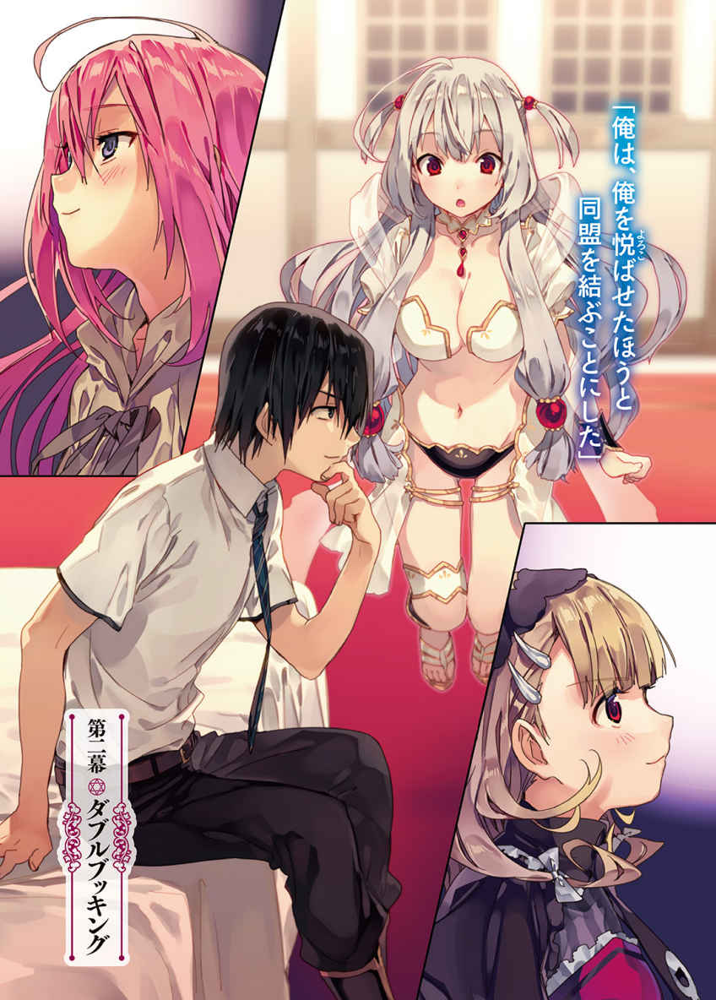
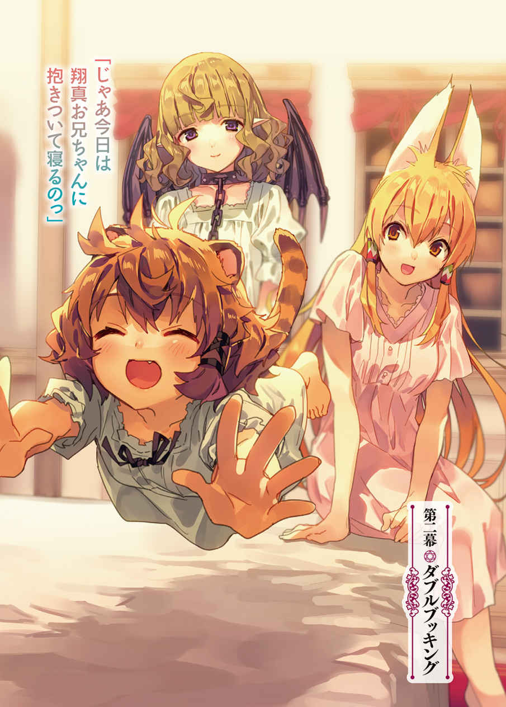
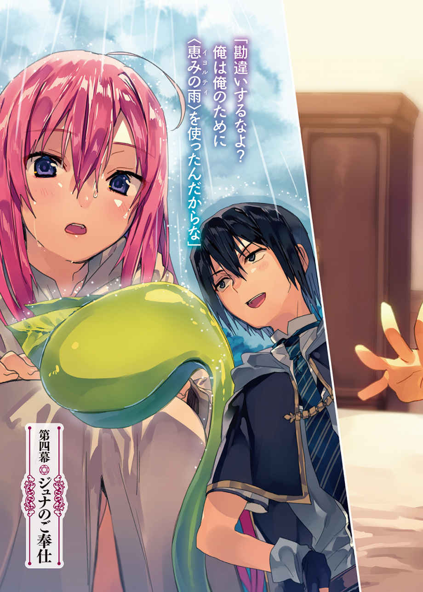
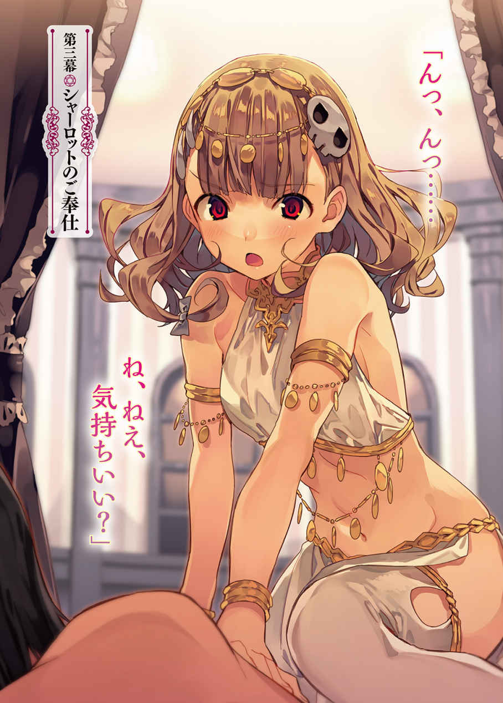
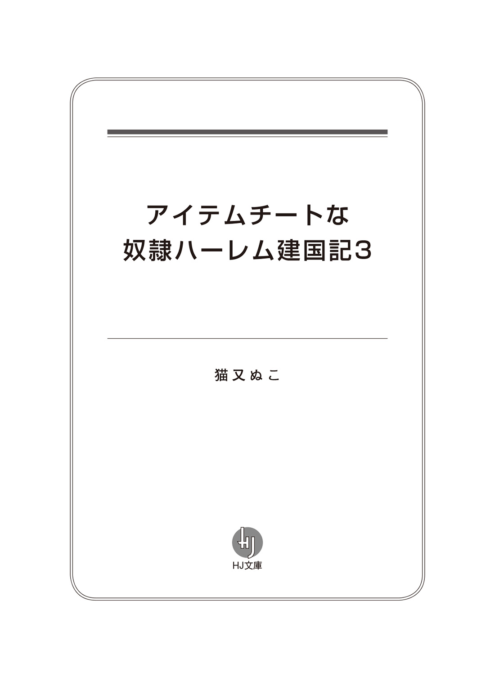
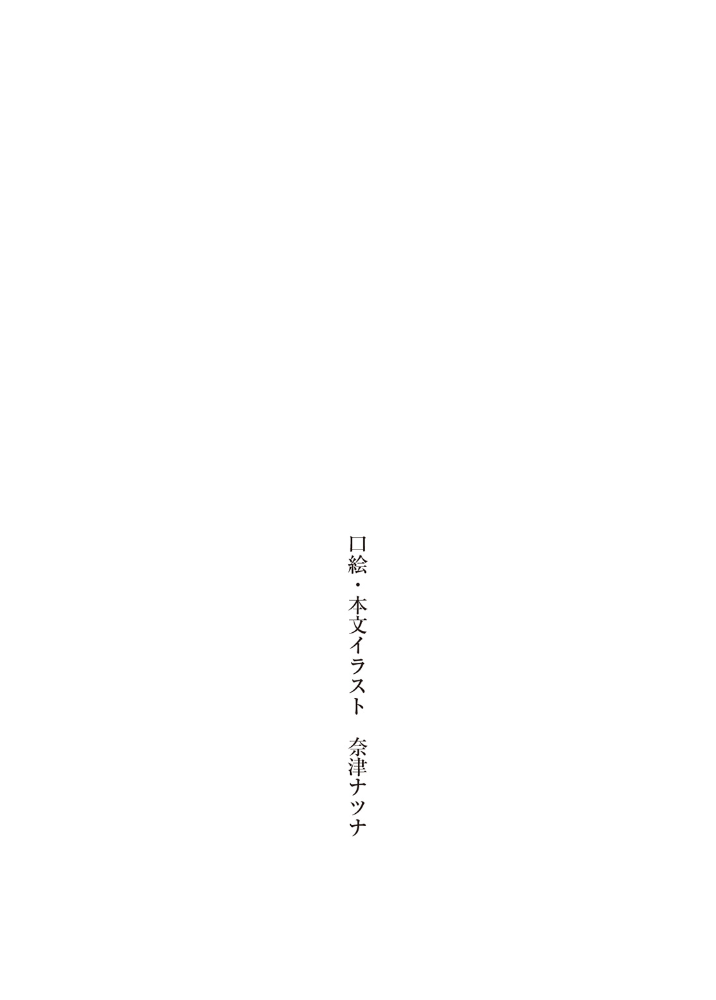
古びた城館の一室で、彼 女 は頭を抱 えていた。
色 鮮 やかな桃 髪 が目を引く、身 の丈 一二メートルほどの娘 である。
歳 の頃 は一七、八といったところ。ゆったりとしたローブを纏 い、雪のような白い肌 はほとんど隠 れてしまっている。
美しく整った顔立ちをしているものの、やつれた頬 とクマに彩 られた目元がせっかくの美 貌 をかげらせていた。
巨人門 の全権代理者 を務める娘――ジュナである。
ジュナは憂 鬱 そうにため息をついていた。窓の外には澄 み渡 る青空が広がっているが、彼女の心は曇 っている。
「みんな、わたしに頼 りすぎじゃないかしら」
ジュナは全権代理者なのだから、民 に頼られるのは当然のことだ。ジュナとしても民の悩 みを解決に導きたいと思っている。そして彼女はその方法を知っていた。
異種族との神託遊戯 である。
それさえすれば、民の悩みを解決することができるのだ。
だが、それがわかっていながらジュナは行動に移らない。
なぜならジュナは――巨人門は、見た目とは裏腹に気が小さく、臆 病 な種族なのだから。
平均身長二〇メートルという巨 体 は異種族から見ると大変脅 威 的 だ。それゆえ巨人門の自治区 に異種族が訪 れることは滅 多 にない――異種族と争 った経験がほとんどないため、臆病さに拍 車 がかかっているのだ。
そんな巨人門が、異種族との神託遊戯を望んでいる。
理由は単純明快。土地と資源が不足しているからだ。
身体 の大きな巨人門にとって、この自治区 は狭 すぎるのである。
一 致 団結して節約生活を心がけているものの、資源の減少は抑 えきれない。
もう神託遊戯をする以外に生き残る道はないのだ。
だが、ジュナが神託遊戯に負けてしまうと逆に資源を奪 われてしまい、巨人門は滅 んでしまう。かといって、このまま巨人門が衰 退 するのを黙 って見ているわけにもいかず......
「やっぱり、ここは全権代理者として行動に打って出るべきよね？」
そんな自問をした途 端 、ジュナはぶるりと身 震 いした。
負ければ巨人門は終わりだ。勝者の自治区に土地と資源を奪われてしまう。自分の手に、巨人門の生死がかかっているのだ。
そう考えると、ジュナはプレッシャーに押 し潰 されそうになる。
せめて誰 かに相談できたらと思うが――巨人門は他人任せで、とにかく頼りがいがない。それに側近たちに相談したところで、最終的な判断を下すのはジュナなのだ。
けっきょくのところ、プレッシャーから逃 れることはできないのである。
「お父様が早死にした理由がわかったわ」
ジュナの父は先代の全権代理者だったのだが......民に神託遊戯を懇 願 され、その心労で早死にしてしまったのだ。
今度はジュナがそうなる番だ。
全権代理者になって三ヶ 月 。不安で眠 れない日々を送っているし、体調を崩 す日もそう遠くないだろう。
「はぁ......」
明るい未来が想像できず、ジュナは再びため息をつく。
と、そのときだ。
ふいに廊 下 が騒 がしくなり、無意識のうちにうつむいていたジュナは顔を上げる。
「こんな朝から、どうしたのかしら？ ......まさか、あの騎士門 がなにか問題を起こしたとか......？」
ジュナは不安そうに立ち上がり、おそるおそるドアに近づく。
先日、この街の片 隅 に騎士門の男が現れ、そのまま居着いてしまったのだ。立 ち退 きを迫 ろうにも話しかける勇気がなく、神託遊戯を挑 む度胸もない。
民は当然のようにジュナを頼ったが、負ければすべて奪われるのだ。身元不明の老人と神託遊戯などできるわけがないのである。
そんなわけで見て見ぬ振 りをしているのだが......ついに男が問題を起こしたのだろうか。だとすると、さすがに対処せざるを得ない。
「と、とにかく確かめなくちゃ」
ぐっと拳 を握 って決意を固め、ジュナはドアノブに手を近づける。
「たっ、大変ですジュナ様！」
いきなりドアが開かれ、ジュナより頭二つ分は大きい老人が部屋に駆 けこんできた。
先々代から全権代理者に仕える、側近中の側近だ。もっとも、長く仕えているだけで、頼りがいはないのだが。
「ど、どうしたの？」
「そ、それが――ひぃっ!? 」
びくっと震 え、側近が片足を上げた。まるで虫が足もとを横切ったような怯 えようだが、そこにいるのは虫ではなかった。
「ふぅん。あんたが全権代理者ね？ こいつらの親玉ってくらいだから、もっと大きいのかと思ったわ。ま、それでも充 分 大きいけどね」
側近の足もとから、やたら偉 そうな声が聞こえてきた。
目をそらしたい気持ちを抑えこみ、ジュナは『それ』を観察する――と、そこには黒いドレスを纏った女の子が立っていた。腰 に手を当て、偉そうにふんぞり返り、まっすぐにジュナを見上げている。
歳の頃は一五、六くらいだろうか。ふんわりとしたクリーム色の髪 は肩 の辺りで跳 ね、澄んだ瞳 は生き生きと輝 いて見える。
威 圧 的 な態度からも自信のほどがうかがえる。その堂々たる立 ち居 振 る舞 いにジュナは苦手意識を覚えた。
（誰なの!? また騎士門が乗りこんできたの!? 巨人門は騎士門に乗っ取られるの!? ）
異種族が城に攻 めこんできた。思わぬ事態にジュナはパニック状態に陥 った。この娘は町外れに居 座 っている騎士門の老人に手引きされて城に乗りこんできたのだろうか。だとするとほかにも異種族が紛 れこんでいるかもしれない。このことを民が知れば自治区中がパニックになってしまう――と、そこまで不安を膨 らませたところ、ジュナは妙 な香 りを嗅 ぎ取 った。
その匂 いを嗅ぎ、ジュナはハッとする。
騎士門のような外見と、特 徴 的 なこの匂い。
間 違 いない。
彼女は――
「あなた、死霊門 ね!? 」
問いかけに、彼女は余 裕 たっぷりにうなずいた。
「ええ、そうよ。あたしは死霊門の全権代理者――シャーロット。単刀直入に言うわ！ あんた、あたしと神託遊戯をしなさい！」
「ひぃぃっ!? 」
側近が悲鳴を上げ、部屋から退散する。神託遊戯という言葉を聞いただけで怖 くなってしまったのだろう。
（本当に頼りないわ......）
長く仕える側近でさえこれなのだ。ジュナがしっかりしなければ巨人門は崩 壊 する。
頼りないとはいえジュナは民のことが大好きだし――生まれ育ったこの自治区を心から愛している。
だからこそ、ジュナは逃 げるわけにはいかないのだ――！
「神託遊戯って、いますぐに？」
「そんなわけないじゃない」
変なことを言ってしまったのだろうか。シャーロットはあきれたように鼻を鳴らした。
「いいこと？ 全権代理者同士の神託遊戯っていうのはね、自治区の未来がかかってるの。そんな大事な戦いのルールを、いますぐに決められるわけないじゃない」
「でも、神託遊戯はするのよね？」
「そのつもりでここに来たのよ」
「いつするの？」
「そうね。三週間後ってところかしら。それだけあればルールも思いつくでしょ。――で、どうするわけ？」
返答を促 され、ジュナは思案する。
神託遊戯は不安だが、これはチャンスでもある。シャーロットとの神託遊戯に勝てば、ジュナは悩みから解放される――死霊門の土地と資源を手に入れることができるのだから。
それにいつかは神託遊戯をしなければならないのだ。
この機を逃せば今度はこちらからどこかの自治区に神託遊戯を挑まなければならないし、それよりは受け身のほうが精神的に楽である。
「わかったわ。わたし、あなたと神託遊戯をするわ」
「決まりね」
ふたりのあいだで神託遊戯の合意がなされた――瞬 間 、部屋に真っ赤な魔 法 陣 が広がり、そこから青髪の娘が現れた。
怜 悧 な顔立ちをした彼女は、神託遊戯の審 判 を務める精 霊 だ。
「神託遊戯の予約をするわ。誓 約 書 を出 してちょうだい」
「かしこまりました」
精霊の手元に一枚の紙切れが現れる。精霊発行の誓約書は神託遊戯における『要求』と同程度の強制力がある。ここにサインを記せば、ジュナは後 戻 りできないのだ。
覚 悟 が揺 るがぬうちにジュナはサインする。続いてシャーロットが名前を記し、精霊に誓約書を託 す。
「神託遊戯の予約が受理されました。三週間後のこの時間、おふたりをバトルフィールドへと転送いたします」
事務的に告げ、精霊は姿を消した。
「これで互 いに合意しない限り、神託遊戯を拒 否 することはできないわ！ せいぜい頭を悩ませてルールを考えることね！ ま、どんなルールを考えてこようと、あたしの勝ちは揺るぎないんだけど！」
シャーロットは自信満々にそう言うと、飛 翔 の魔札 を詠 唱 した。そして窓を開け、外へ飛び去っていったのだった。
静かになった執 務 室 で、ジュナは頭を抱えてうずくまる。
「あ、あの自信......あのシャーロットって娘 、すごく強いのかしら？」
だとすると一大事だ。
代々受 け継 がれてきた魔導指輪 ――シルバーリングこそあるものの、ジュナは神託遊戯の経験がないのだから。
シャーロットの魔導指輪が何色だったかも確 認 できなかったし、勢いに任せすぎたかもしれない。
だが、ジュナは負けるわけにはいかないのだ。
なんとしてでもこのチャンスをものにしなければ――！
「......そうだわ」
落ち着きなく部屋をうろうろして作戦を練っていたジュナは、側近が話していた噂 話 を思いだす。
いわく、騎士門 自治区の近 隣 に新たな自治区ができたのだとか。その自治区――〈竜 胆 翔 真 の帝 国 〉は圧 倒 的 な武力をもって騎士門の全権代理者を破り、同盟を締 結 したらしい。
侵 略 ではなく同盟――〈竜胆翔真の帝国〉は『異種族共存』を謳 っているのだ。
つまり交 渉 次 第 では巨人門とも同盟を結んでくれるということだ。
こちらに不利な条件をつきつけられるかもしれないが、死霊門に負けるよりはマシだ。
「竜胆翔真を味方にすれば、必ず勝てるわ！」
ジュナは勝利を確信した。
まさかシャーロットが同じことを考えているとは思いもせずに――......
『アイリス......？ ちょっと竜 胆 ......貸して......ですが......』
すやすやと眠 っていたアイリスは、透 き通 るような声に目を覚ました。
「あとちょっとで翔 真 とキスできたというのに......」
幸せな夢を中断されて不 機 嫌 そうにしつつ、アイリスは薄 暗 い寝 室 を見まわす。近くのベッドで翔真が眠り、そのそばにルメリアが佇 んでいた。
ルメリアが起きているということは、じきに夜が明けるのだろう。彼女は早起きをして翔真の寝 顔 を見るのが大好きなのだ。
「わしを呼んだのはそなたか？」
翔真の寝顔を幸せそうに眺 めていたルメリアは、きょとんとした。
「なんのことでしょう？」
いつも以上にか細い声だ。翔真を起こしてしまわぬように気を遣 っているのだろう。
アイリスはルメリアに倣 い、小さな声で事情を話す。
「さっき誰かに呼ばれたのじゃ。寝 ておったし、なにを言われたかは覚えておらんがのぅ。そなたには聞こえなかったのか？」
「はい。私は一時間ほど前からこうしていますが、なにも聞いておりません」
「そうか。となると、何者かが〈碧落からの語りかけ 〉を使ったということじゃな」
それは遠くにいる人物と会話ができる魔札 だ。対象は顔見知りに限られるが――彼女のことを知っている者は多い。クヌル平野の人々はアイリスのことを翔真の正妻として認 識 しているし、他の自治区 にもミストやスノウなど知人はいる。
しかし彼女たちが連 絡 を取るとしたら、アイリスではなく翔真だろう。
ほかにはキルシュとミリアがいるが......翔真が〈守り抜かれる静けさ 〉を使ってくれているため、ふたりの声がアイリスの頭に響 くことはない。
となると、先ほど聞こえた声の主はひとりに絞 られる。
（ティナじゃな？）
口頭会話でも脳内会話でも通じるが――翔真を起こさないように気を遣い、アイリスは脳内会話を選 択 した。
『はいっ、わたしですアイリス姉様！ またあとで連絡しなおそうと思っていたのですが、起きていたのですね！』
ティナはアイリスの実 妹 だ。ほかの姉妹とは似ても似つかぬ良い子である。そんな妹が、わけもなく非常識な時間に連絡を取ってくるとは思えない。なにか事情があるはずだ。
（さっきはなんと言ったのじゃ？）
『実はですね、竜胆翔真を貸していただきたいのです』
（なぜじゃ？ ま、まさかそなたまで翔真に惚 れたのではないじゃろうな！）
『な、なにバカなことを言ってるんですか!? わたしが竜胆翔真を好きになる理由なんてありませんよ！』
（そんな言い方はないじゃろ！ 翔真はすごくかっこいいんじゃからなっ！ 好きになる理由なんてごろごろ転がっておるのじゃ！）
『ま、まあ、たしかにかっこいいというか、頼りがいがありますけど......って！ そんなことよりアイリス姉様！ 大変なんです！ わたし、とんでもない魔札を創 っちゃったんですよ！』
深刻そうな叫 びに、アイリスは冷静さを取り戻 す。
（魔札を創ったというと......能力を使ったのじゃな？）
八大門派 のひとつに数えられる聖神門 には、特 殊 な力が備わっている。
キルシュには魔札の威 力 を高める能力――〈強化 〉が。
ミリアには対象の心の声を盗 み聞く能力――〈読心 〉が。
アイリスには望みの効果の魔札を生み出す能力――〈創造 〉が。
ティナには二種類以上の魔札を組みあわせて新たな魔札を生み出す能力――〈融合 〉が備わっているのだ。
もっとも、ティナは年に一度しか能力を使うことができないのだが。
『三週間後に催 されるクエストの景品にしようと思い、つい先ほど能力を使用したのですが......』
（とんでもない魔札ができたというわけじゃな。どういう効果なのじゃ？）
『実は――』
ティナは魔札の効果を語った。
それを聞いたアイリスは、顔を真っ青にする。
（本当にとんでもない魔札じゃな。そんなものが悪人の手に――キルシュの手に渡れば、アストラルは滅ぶのじゃ。あやつの野望は、わしの夢の対極じゃからな）
『そうなんですよ......。かといってクエストの景品にしないわけにもいきませんし......』
ティナは最高神の代理である。代理とはいえ最高神が差別するなどもってのほか。悪人だろうと善人だろうと平等に扱 わなければならないのだ。
それゆえ一〇〇五一種目の魔札を特定人物に直接渡すことはできない。むろんティナが所有し続けるわけにもいかない。
コレクション対象として創った以上、人類の手に委 ねなければならないのだ。
『ただ、個人的な意見を言わせていただけるなら......一〇〇五一種目の魔札は竜胆翔真に委ねたいと思ってるんです』
（たしかに翔真なら悪用どころか、使いもしないじゃろうな。なにせ翔真は誰よりも神託遊戯 を愛しておるからな）
『はい。ですから竜胆翔真を貸していただきたいのです。一〇〇五一種目の魔札がいかに危険かを説き、全力でクエストに取り組んでいただきたいのです。どのみち新たな魔札の効果は発表するんですから、数日早く教えたところで問題はないはずです』
（ま、そなたは代理じゃしな。それくらいの肩 入 れなら問題なかろ。翔真はわしのそばにおるからのぅ。会いたいのなら来るとよいのじゃ）
『はいっ！ そうさせていただきますね！』
言うが早いか寝室に真 紅 の魔法陣が広がり、そしてそこから小 柄 な娘が現れた。
見た目年 齢 はせいぜい一五といったところ。透き通るような白い肌に清 楚 な服を纏わせ、青みがかった髪は肩の辺りまで伸 ばしてある。
生 真 面 目 そうな顔立ちをした彼女――ティナは、アイリスを目にした途端幼子のような笑 顔 を見せる。
「おひさしぶりですアイリス姉様！ それと......」
ちらっとルメリアを見るティナ。最後にティナと会ったのはルメリアと出会う前なので、ふたりは初対面なのだ。
「この娘はルメリアじゃ」
「はじめまして。ルメリアと申します」
「こちらこそはじめまして。ティナです」
最高神代理であることは、うかつに話してはならない。そのためティナは、ルメリアに正体を明かさなかった。
「さて、それでは竜胆翔真を起こしますね」
ティナは翔真を見下ろす。
「起きてください、竜胆翔真。あなたに話したいことがあるのです。......起きてください。ねえ、起きてください。起きてください！」
だんだん語気が荒 くなるが、翔真は一向に目覚めなかった。狸 寝 入 りではない。本当に熟 睡 しているのだ。
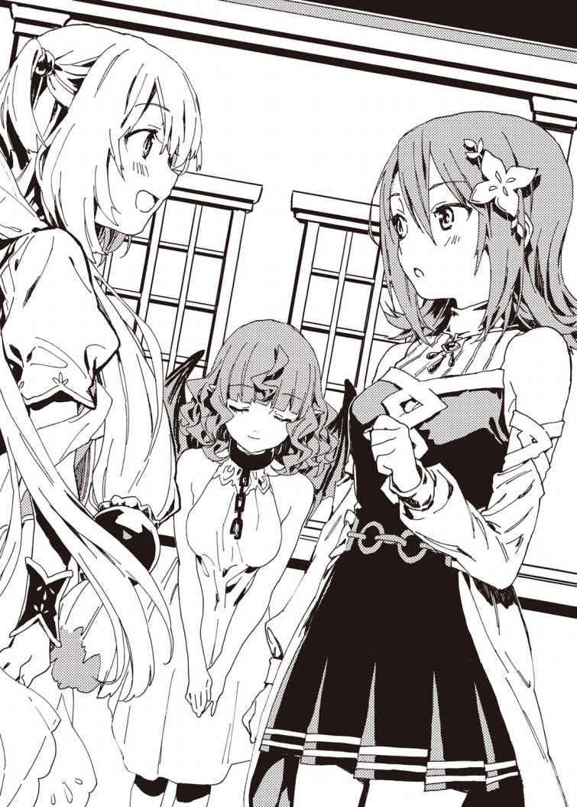
なにせクヌル平野を発展させるため、翔真は毎日徹 夜 で町を見まわっているのだから。昨日も真夜中に帰宅し、ルメリアと入浴してすぐに寝てしまったのだ。
瞬 時 に身体を清める効果を持つＳＳＳランク魔札――〈綺麗好きな風 〉を使えば時間を節約できるが――ルメリアが背中を流したがるため、翔真は一 緒 に入浴してやっているのだ。
「ちょっと！ いいかげん起きて――きゃあっ！」
ティナが悲鳴を上げる。
寝 返 りを打った翔真の腕 に巻きこまれ、ベッドに倒 れこんだ――抱 きつかれたのである。
「アイリス姉様っ!? こ、これってアイリス姉様が〈空白の魔札 〉で禁じた暴力行 為 じゃないんですか!? 」
枕 元 に顔を埋 めたティナのくぐもった声が聞こえてくる。アイリスは羨 ましそうに妹を眺め、
「翔真は寝ぼけておるだけじゃ」
と言った。当事者に暴力行為という認識がなければ危害を加えることができる。つまり、無意識下の暴力は認められるのだ。
「り、竜胆翔真に悪気がないことはわかりましたけど、だからってこれは......ね、寝 息 が耳にかかりますっ！ こ、の――いいかげんに目を覚ましなさい!! 」
その叫びに、翔真はぱちっと目を開けたのだった。
◆
翔真が目覚めて最初に目にしたものは、赤く染まったティナの顔だった。蒼 い瞳に涙 を浮 かべ、恨 めしそうに翔真を睨 みつけている。
「よォ、誰かと思えばティナじゃねえか。ひさしぶりだな。どうしたこんなところで？」
「ど、どうしたじゃありません！ あなたがわたしになにをしたと思ってるんですか！」
「なにをしたんだ？」
「抱きついたんです！」
「へえ、そりゃ残念だ。起きてりゃ感 触 を楽しめたんだがな。ま、こうして目の前にいるんだ。せっかくだし〈幻影の繭 〉を使うとするか」
それは『クローンを創り出す』効果の魔札だ。生み出したクローンは五分で消 滅 するが、胸を揉 むには充分な時間である。
「そ、そんなことのためにＳＳランク魔札を使わないでくださいっ！」
「だめか。なら本人に胸を揉ましてもらうしかないな」
翔真がにやにやして言うと、ティナは両手で胸を押さえた。アイリスほどではないが、彼女の胸は大きな膨らみを帯びているのだ。
「嫌 に決まってるでしょう！ アイリス姉様の見ている前でそんな破 廉 恥 なこと、できるわけがありません！」
「どうしてアイリスの前だとだめなんだ？」
「あなたの嫁 だからですよ!! 」
一 喝 するティナ。そのうしろではアイリスが「妹に庇 われて、なんか惨 めじゃ......」とうなだれている。
「ま、冗 談 はさておき」
と、翔真は真 剣 な顔をする。
「怪我 はないか？」
急に真 面 目 なトーンで問われ、ティナはたじろいだ。
「え？ あ、はい。怪我はありませんけど......」
「そっか。ならよかった。いきなり抱きついたりして悪かったな」
「べ、べつに謝 ってくれなくても......あなたに悪気がなかったことはわかりますし......。そ、それより、あなたに大切な話があるんです！」
「大切な話？」
「はい。その前に、これを使わせてもらいます。――〈密談空間 〉！」
ティナが魔札を詠唱した途端、窓辺にいた小鳥のさえずりが聞こえなくなった。
アイリスとティナの息 遣 いは耳に届くが、ルメリアのそれは聞こえない。ということは、ティナの用事は最高神絡 みというわけだ。
翔真は大事な魔導指輪 を預けるくらい、ルメリアのことを信じている。だが、ティナとルメリアは初対面だ。最高神代理としての話を聞かれることを警 戒 したのだろう。
「最初に確認しておきますが――次のクエストに参加する気はありますか？」
「もちろん参加するぜ」
クエストは毎月開 催 される。翔真はこれまでのクエストを見送ってきたが、三週間後のクエストに参加することは、アストラルに召 喚 されたその日のうちに決めていた。
なぜなら。
「次回は一〇〇五一種目の魔札が景品になるんだろ？」
ティナが年に一度生み出す魔札はコレクション対象だ。魔札コンプリートをひとまずの目標に掲 げている翔真としては、見 逃 せないイベントなのである。
「実はその件について、あなたに相談があるのです」
「俺 に相談とは珍 しいな」
ティナの翔真に対する好感度は地を這 っている。なにせ翔真はアイリスを五〇年以上『封 印 の間』に閉じこめた竜胆敦 盛 の孫なのだから。
「あ、あなたの言いたいことはわかります。で、ですが......わたしにはあなたしか頼れるひとがいませんから......」
「わかってるさ。俺でよければいつでも相談に乗るぜ」
「は、はい。ありがとうございます」
「気にすんな。で、相談ってのは？」
「まずはこれを見てください」
ティナが一枚の魔札を向けてきた。翔真はそれをじっと見つめ、
「......悪いな。この世界の文字はまだ読めねえんだ」
魔札のテキスト部分には、解読不能の文字が記されていた。この魔札の所有者はティナなので、彼女の母語――アストラル語で記されているのだ。
先日、翔真は相手の心を読む能力者――ミリアと神託遊戯をした。ミリア対策として、翔真はアストラル語を扱えるようになったものの、読み書きまでは習得できていないのだ。
「見たことのない絵が描 いてあるし、それが一〇〇五一種目の魔札ってことか？」
魔札にはテキストのほかに、イラストが描かれているのだ。そしてティナが見せている魔札には、ふたり分の手と数枚の魔札が描かれていた。
まるで魔札を交 換 しているような、そんな絵だ。
「......あなた、すべての絵を記 憶 しているのですか？」
驚 いたように目を丸くするティナに、翔真はうなずく。翔真は魔札を愛しているのだ。効果はもちろん、どんなイラストが描いてあるかも覚えている。
「で、どうなんだ？」
「は、はい。あなたの言う通り、これは一〇〇五一種目の魔札――〈神がかった交渉術 〉です」
「......そうか」
たまたま一致しただけだろうが、『デウスコール』という魔札は聞いたことがあった。キルシュが『悪天ノ種 』を『絶対遵守 』と偽 り、アルゲンを謀 ったのだ。
けっきょく『デウスコール』という魔札は存在しなかったが――ティナはそれと同名の魔札を生み出したのだ。
もっとも一致したのは名 称 だけで、効果は異なっているだろうが――
「〈神がかった交渉術〉は、『対象一名と魔札を交換する。その際、対象の魔札リストを確認できる。対象は交換条件を拒否できない。ただし、この魔札の対象とするには相手の姿を直接目にする必要がある』という効果の魔札です」
――いずれにせよ、怖 ろしい効果であることに変わりはなかった。
「なるほどね」
ティナが深刻そうにしている意味がわかった。なぜなら〈神がかった交渉術〉を使えば、魔札を一枚渡すだけで相手の魔札を根こそぎ奪い取ることができるのだから。
特にコンプリートに近い者ほど、〈神がかった交渉術〉は脅 威 に感じられるだろう。
「それ、オリジナル魔札はどうなるのじゃ？」
「アイリス姉様が生み出した魔札はどれもとんでもない効果ですが......魔札であることに変わりはありません。つまり、奪われます」
「じゃよなぁ」
アイリスは不安そうな顔をする。
無理もない。翔真は一〇〇〇〇種以上の魔札に加え、八〇〇〇枚ものオリジナル魔札を所有しているのだ。それが悪人の手に渡れば、アストラルの秩 序 は乱れてしまう。
「つまるところ〈神がかった交渉術〉を手に入れた奴 が、すべての魔札を手に入れるってわけか」
ティナは重くうなずいた。
「とはいえ、結界の魔札を使えば〈神がかった交渉術〉から逃れることができるのですが......」
対策を口にしつつも、ティナは浮かない顔をしている。
「そんな生活をさせるわけにはいかないってか」
「はい。わたしの創った魔札が誰かを苦しめるなんて、そんなの考えたくもありません。一生結界のなかで過ごすなんて、そんなのあんまりです。ですから、あなたに相談をしに来たのです」
ティナはあらたまった口調で言う。
「翔真さん。最高神代理として、あなたにお願いします。どうか、わたしに知 恵 を貸していただけないでしょうか？ 〈神がかった交渉術〉を悪人の手に渡 さない策を、わたしと一 緒 に考えてほしいのです」
「いいぜ。簡単なことだしな」
頭を下げていたティナは、弾 かれたように顔を上げた。
「か、簡単......ですか？」
「そうだ。つっても、『悪人』の手に渡ったかどうかを判断するのはティナだがな」
「ええっと......それはどういう意味でしょう？」
「〈神がかった交渉術〉は俺が手に入れるって意味だ。つまり、ティナが俺のことを悪人だと思ってなけりゃ、お前の望みは叶 うってわけだ」
「あなたのことを悪人だと思ったことは......まあ、最初は思ってましたけど......。でも、いまは誓 って悪人だとは思っていません」
「そりゃよかった。お前に気に入ってもらえて光栄だぜ」
「べ、べつに気に入ったとか、そういう話をしているわけでは......！ そ、それよりっ、策はあるのですか!? 」
「策？」
「とぼけないでください！ あなたが〈神がかった交渉術〉を手に入れる策はあるのかと訊 いているのです！」
「そんなものはないぜ」
笑って言うと、ティナは愕 然 とした。
「な、ないって......だったら安心なんてできないじゃないですか！ それとも、あなたはわたしからクエストのルールを聞き出すつもりなのですか？」
口ぶり的に、ティナはすでにクエストのルールを決めているようだ。
たしかにあらかじめルールを知っておけば、クエストを有利に進めることができる。
だが、それでは不公平だ。代理とはいえ最高神を務めるティナが、公平性に欠く行 為 をするとは思えない。
ゆえに、翔真は端 からルールを聞くつもりなどなかった。
「安心しろ。たしかに策はないが――俺は絶対に優勝してみせるからな。約束するぜ」
翔真が自信満々に言い放ったからか、あるいは翔真の実力を重々承知しているからか。ティナの顔から不安の色が引いていった。
「......ほんとうに優勝してくれます？」
翔真は力強くうなずいた。
「可愛 い義 妹 の頼 みだからな。お前の創った魔札は、俺が必ず手に入れてやる」
安心したのか、ティナの顔に笑 みが広がっていく。
「は、はい......。では、あなたを信じることにします」
「おう。――で、用件はそれで全部か？」
ティナはこくりとうなずき、申し訳なさそうに目を伏 せた。
「こんな時間に押 しかけて、迷 惑 でしたよね......」
「べつに迷惑だとか思ってねえよ」
「......ほんとうですか？」
「ああ。可愛い女に頼 られるってのは、男として最高に嬉 しいことだからな。むしろ毎日押しかけてほしいくらいだぜ。で、俺を起こしてくれ」
ティナは一 瞬 迷うような顔を見せたが――「夫を起こすのは正妻の役目なのじゃよ？」との悲しげな声が聞こえてきたため、すぐに断ったのだった。
◆
色とりどりの花々が咲 き誇 る庭園で、彼 女 は静 謐 なひとときを過ごしていた。
一〇〇人に訊けば一〇〇人ともが美しいと讃 えるだろう、絶世の美 貌 を持つ女だ。
やわらかそうな銀 髪 は腰に届くほど長く、わずかに細められた真紅の瞳は妖 艶 な色気を放っている。健康的な褐 色 の肌 と豊満な乳 房 はそのほとんどが露 出 されているが、彼女に恥 じらう様子はなかった。
彼女――この庭園を擁 する宮 殿 の主 であるキルシュは、花々の絨 毯 に寝 転 がり、快晴の青空を見上げていた。心地 よさそうに目を細め、気持ちよさそうにあくびをしている。
キルシュは静けさが好きだった。
そして静かなひとときを堪 能 するのに、この庭園は打ってつけだ。
ここフルリオ山脈には『雲穿 つ山』との通 称 があり、山頂は雲の上に突 き出 ているため、この一帯は年中晴 れ渡っているのである。が、ふもとには獰 猛 な獣 が徘 徊 し、さらに嵐 が吹 き荒 れている。おまけに結界魔札が発動しているため、部外者が宮殿を見つけることはできず、ましてや乗りこむことなど不可能なのだ。
かといって、無音というわけでもない。キルシュはひとりで生活しているわけではなく、むしろ多くの人々が暮らしているのだ。
それこそクヌル平野のように――数多くの種族が棲 息 している。
もっとも、その全員が奴 隷 だが。
キルシュは異種族の奴隷を手 当 たり次 第 に集め、牢 獄 に閉じこめているのだ。そして、暇 なときに遊んでやっているのである。
奴隷たちはキルシュの顔を見るたび、恐 怖 に顔を歪 めるか、媚 びた笑 みを浮かべている。
キルシュは前者の顔を見るたびに嗜 虐 心 が刺 激 され――後者の顔を見るたびに、殺意がこみ上げていた。
異種族の笑顔ほど気持ちの悪いものはない。かといって、同族であれば良いというわけでもない。
キルシュが気に入る笑みを浮かべる者は、この世界にはひとりしかいないのである。
「キルシュ姉様っ！」
静謐なひとときを堪能していたところ、鈴 を転がすような声が響き渡った。
上体を起こすと、ドレス姿の女の子が花々を踏 みしめながら駆 け寄 ってきていた。
幼さの残る顔立ちをした小柄な娘 だ。長い銀髪を風になびかせ、真紅の瞳 でまっすぐにキルシュを捉 えている。これ以上ないほどの幸せそうな笑みを浮かべ、彼女はキルシュに抱 きついた。
汗 ばんだ乳房に顔を埋 め、愛 おしそうにキルシュの名前を呼んでいる。
「やあ、ミリア。早かったね」
キルシュが頭を撫 でてやると、ミリアは嬉しそうに喉 を鳴らした。それから上 目 遣 いにキルシュを見つめ、
「キルシュ姉様に会いたかったの！ ぎゅって抱きつきたかったのっ！ だからミリアは急いだのっ！」
嬉 々 として告げてくる。
「僕 も会いたかったよ。静謐なひとときも好きだけど、ミリアと一緒にいる時間が、僕は一番好きだからね」
ミリアはぱあっと顔を明るくする。
「ミリアもだよっ！ ミリアもキルシュ姉様と一緒にいる時間が一番好きだよっ！ 幸せなんだよっ！」
そう言って、ミリアは再び胸の谷間に顔を埋める。そんな妹の銀髪をすべるように撫で、キルシュはたずねた。
「それで、ティナの目的はわかったのかい？」
毎朝、キルシュはＳＳＳランク魔札を詠唱している。詠唱者に明確な敵意を持っている人物を監 視 する魔札――〈仇敵の見張り 〉だ。
それを使って妹たちを監視していたキルシュは、ティナが不 審 な動きをしていることに気がついた。アイリスに連絡を取っていたのだ。
この三ヶ 月 、ティナはアイリスと接 触 をしていなかった。それが突 然 接触を図 ったため、不審に思ったキルシュはミリアを翔真の城へ派 遣 したのだ。
「じきにクエストが催 されるからね。ひょっとするとティナは、とんでもない魔札を生み出したのかもしれないよ。その相談をするためにアイリスの......いや、竜胆翔真のもとを訪 れたんじゃないかい？」
ミリアは驚いたように目を見開いた。真紅の瞳が、日の光を反射してキラキラ輝 く。
「うわあっ！ さすがキルシュ姉様っ！ どうしてわかったのっ!? 正解だよ！ 大正解だよ！」
可愛らしい反応に、キルシュはくすっと笑う。
「ティナは僕の妹だからね。妹が考えることは、なんでもお見通しだよ」
「ミリアのことも!? ミリアのこともお見通しなの!? 」
期待するような眼 差 しを向けられ、キルシュはほほ笑む。
「ミリアは世界一可愛い妹だからね。ミリアのことならなんでも知っているよ」
「ミリアもだよ！ ミリアもキルシュ姉様のことならなんでも知ってるんだよ！ だってだって、ミリアはキルシュ姉様のことが大々々好きだもん！」
ミリアがぎゅっと抱きついてくる。
「ミリアは可愛いね。――それで、ティナはどんな魔札を生み出 したんだい？」
「えっとね――」
ミリアはキルシュに抱きついたまま、〈読心〉で得た情報を口にする。その話を聞いた途 端 、キルシュは喜びに震 えた。
「魔札を強制交換する魔札か――。それはなんとしてでも手に入れないといけないね」
キルシュは〈神がかった交渉術〉を欲 した。なにせその一枚を手に入れるだけで、魔札全種を手中に収めることができるのだから。そのなかにはオリジナル魔札も含 まれている。
「でもでもキルシュ姉様！ キルシュ姉様にとってオリジナル魔札はゴミじゃないの!? 」
「そうだね。だけど、持っていて損はないよ」
〈強化〉を使えば、一 般 に流通している魔札をオリジナル魔札と同等の威 力 にできる。しかし〈強化〉は永続的に使い続けることができるわけではない――数値に換 算 すると、一日に魔札の威力を一〇〇〇上げるので精 一 杯 なのだ。
もちろん一日に威力が一〇〇〇上がるだけでも異種族にしてみれば大変な脅 威 だろうし、実際キルシュは神託遊戯で負けたことがない。
しかしキルシュの大 望 を叶えるには、いまの〈強化〉では力不足なのである。
だからこそ、キルシュは魔札コンプリートを目指しているのだ。
「〈神がかった交渉術〉が手に入れば、キルシュ姉様の夢が叶うね！」
「そうだね。やっと――やっとこの世界をあるべき姿に戻せるよ」
魔札全種を集めた者は〈神の間〉へと転送される。そこで最高神との神託遊戯に勝てば、望みの魔札が手に入る――それが一般に知 れ渡っている情報だ。
が、キルシュは〈神の間〉が無人であることを知っている――アイリスが聖神門最強と謳 われた〈創造〉の力を失っていることも知っている。
つまり望みの魔札は手に入らないが――キルシュはそんな魔札に興味などない。
なぜならキルシュが欲しているのは魔札ではなく『魔素 』なのだから。
力の源である魔素は、〈神の間〉にしか存在しない。それを取りこむことができれば、キルシュの〈強化〉は圧 倒 的 なパワーアップを遂 げるのだ。
「強くなった僕の〈強化〉で『魔札の効果を打ち消す魔札』の威力を高めれば、遙 か昔にアイリスが使った〈空白の魔札〉の効力を打ち消すことができるからね」
アイリスは暴力行為を禁じる際、〈空白の魔札〉を使った。それは世界のルールを書 き換 えるほど強力な効力を発揮したが――魔札であることに変わりはない。
魔札である以上、効果を打ち消すことは可能だ。
いまの〈強化〉では数百年かけても〈空白の魔札〉を打ち消すことはできないが......。
しかし魔素さえ手に入れば、アイリスの力を上回ることができるのだ。
「ほんと、アイリスは面 倒 なことをしてくれたよね。虫けらに力を与 えるなんて――この僕を虫けらと同等に扱 うなんて、許されることじゃないよ」
ゆえにキルシュは世界をあるべき姿に戻す――力ある者が力なき者を虐 殺 できる世界に戻してやるのだ。
そして――
「異種族を皆 殺 しにするんだね！ 気持ち悪い虫けらを一匹 残らず殺すんだね！ やっと夢が叶うんだね！」
などとはしゃいでいたミリアだが、ふいに不安げな顔をする。
「あっ、でもでもキルシュ姉様！ 〈神がかった交渉術〉は無敵じゃないよっ！ 結界で隠 れられると使えないよ！」
「心配ないさ。隠れる暇 は与えないからね。〈神がかった交渉術〉を手に入れたその場で使えば、僕の魔導指輪は虹 色 に輝くんだよ」
キルシュは右手にはめた魔導指輪――ゴールドリングを光にかざす。
そこには一〇〇二五種の魔札が保管されていた。
残る二六種を手に入れたとき、キルシュの大望は成 就 するのだ。
「そっか！ クエストに参加させるんだね！ 残る持ち主を全員参加させるんだね！」
心を読むミリアに、キルシュはうなずいてみせた。
景品となる魔札はクエスト当日、バトルフィールドで発表される。そして結界の魔札は、その者の所有地でしか使えない。
つまるところ、キルシュは〈神がかった交渉術〉を手に入れたその場で魔札を奪 い取 り、コンプリートを果たそうとしているのだ。
「二六種の魔札の所有者がどこにいるか、それはわかっているからね。あとはそいつらを参加させるだけでいいのさ」
もちろん、そのうちのひとりは竜胆翔真だ。彼 に脅 しは通じないだろうが――性格上、彼がクエストに参加するのは確実だ。
残る所有者は五名。その全員をクエストに参加させることができれば、キルシュの夢は叶ったも同然だ。
「でもでも、みんなクエストに出るかな!? キルシュ姉様の言うこと聞くかな!? 」
「ミリアは心 配 性 だね。平気さ。全権代理者 である以上、僕の命 には逆らえないからね」
「あっ、そういうことだね！ ミリアわかったよ！ わかっちゃったよ！ そうだよね！ そうだよね！ ――奴隷はそうやって使うんだよね！」
無 邪 気 に笑うミリアに、キルシュはにこりとほほ笑みかけた。
ティナにクエストへの参加を促 されたあと――。翔 真 はいつものように城外へ出ると、町の様子を見てまわった。
クヌル平野の人々は翔真の姿を目にした途 端 嬉 しそうに駆 け寄り、作業の進 捗 状 況 から結 婚 や出産などの私 事 まで、多 岐 にわたる報告をする。そんな民 の話を翔真は楽しそうに聞くのであった。
民が幸せそうなのは自治区 の運営が上手 くいっている証 拠 だし――私事を報告するのは翔真を信 頼 している証拠である。
異種族共存を謳 う自治区は、アストラルでは異例中の異例だ。自治区民のなかには、〈竜 胆 翔真の帝 国 〉の特色を好ましく思っていない者もいるかもしれない。
そんなふうに思うこともあったが、翔真の自治区に不満を抱いている者なんて、どこを探しても見つからなかった。
本当に、心の底からこの自治区を愛してくれているのだ。
アイリスの夢は――『差別のない平和な世界』は充 分 実現可能なのだ。
じかに民と接することで、翔真はあらためてそう実感するのであった。
さておき、翔真の仕事は民の話を聞くだけではない。翔真は様々な作業現場を見まわり、必要に応じて資材を与えていく。
そうしてクヌル平野を歩きまわり、本日予定していた範 囲 の聞きこみが終わった頃 には、すっかり夜が更 けていた。
そろそろ居城へ戻 ろうと、翔真は〈瞬間移動 〉を使う――その直前。
「あっ、翔真くん！ アイリスさん！」
うさぎ耳の女の子が、満面の笑みで駆け寄ってきた。
幼さの残る顔立ちをした小柄な娘である。赤 髪 はうしろでひとつに結 われ、ぱっちりとした瞳は爛 々 と輝いている。
出るべきところは出て、引っこむべきところは引っこんでいる女性らしい体つきだが、シャツにズボンとボーイッシュな出 で立 ちだ。
彼女はクヌル平野一人気の食事処 〈うさぎ亭 〉の看 板 娘 ――カンナだ。仕事が終わり、私服で帰宅するところなのだろう。
「よォ、カンナじゃねえか。いま帰りか？」
「うんっ。今日は早番だったから、あとはパパとママがしてくれるって。......もしかして、これからお店に行くところだった？」
カンナは残念そうな顔をしている。
ひょっとすると、店員として翔真を迎 えたかったのかもしれない。
「行きたいのは山々だが、今日は予定があるからな」
「そうなんだ。あいかわらず忙 しいんだね。ルメリアちゃんが見守ってくれてるから心配いらないかもだけど......身体 を壊 さないようにしてね？」
「そいつはお互 い様 だぜ。ま、俺の疲 れはカンナに会えて吹き飛 んじまったがな」
冗談めかして言うと、カンナは頬 を赤らめた。
「えへ、嬉しいな......」
照れくさそうにぷにっとした頬をかくカンナ。
その一方で、アイリスが不満げな顔を見せてくる。
「わしが一緒じゃと、疲れは吹き飛ばぬのか？」
対 抗 心 を燃やしたらしい。カンナに嫉 妬 する最高神に、翔真は思わず苦 笑 する。
「アイリスがそばにいてくれるから、こんな夜中まで頑 張 れるんだぜ？」
アイリスは面 食 らったように目を丸くして......じんわりと頬を紅潮させる。
「そ、そうか、そうか......。そなたはそういうふうに思っておったのじゃな......」
嬉しそうに口元をにやつかせるアイリスを横目に、翔真はカンナにたずねる。
「ところで、なにか不自由してねえか？ 欲 しい食材とか調理具があるならいまのうちに渡しとくが......」
「食材と調理具は足りてるよ。だけど......しいて言えば、従業員が足りないかな」
「厨 房 か？」
「ううん、接客のほう。昼間と夜中は足りてるんだけどね......朝から働いてくれるひとがなかなか見つからなくて......。まあ、そのぶんあたしが頑張ればいいんだけどね」
カンナは明るく振 る舞 っているが、目元にはくまができていた。あまり眠 れていないのだろう。
「んじゃ、条件にあう奴 を探してみるぜ。見つけたら連 絡 するからな」
「助かるけど、そんなことまで任せてもいいの？ 翔真くん、忙しいんじゃない......？」
「カンナほどじゃねえさ。それに、カンナに倒れられると困るからな」
「翔真くん......」
カンナがうっとりとした瞳で翔真を見つめる。
「っと、そろそろ戻らねえと。ひとりで帰れるか？」
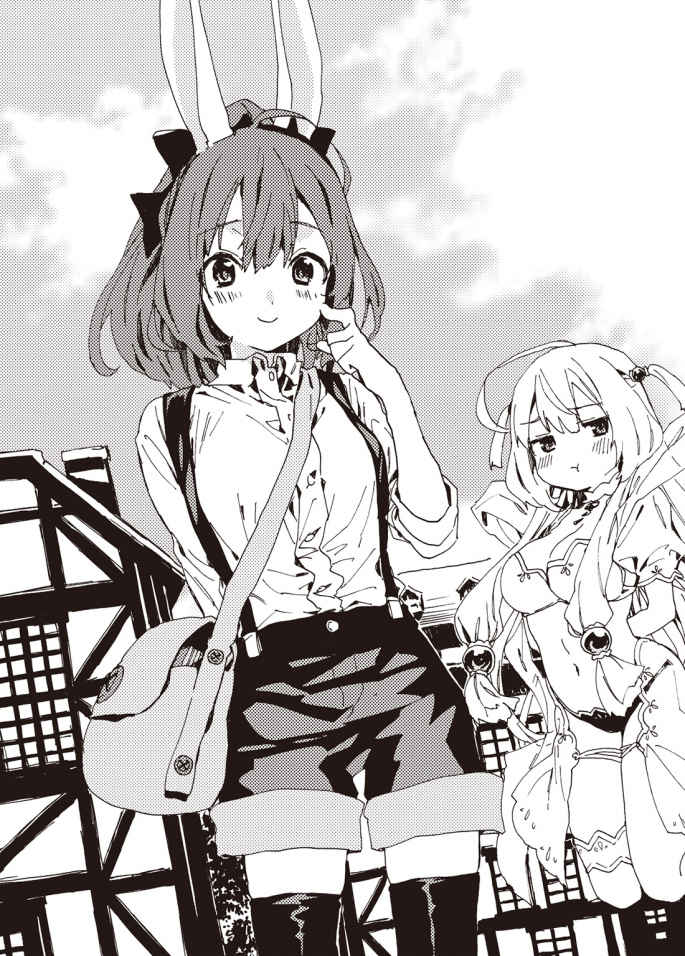
「平気だよ。翔真くんの自治区は治安がいいからね。精 霊 の管 轄 区のときみたいに、変なひとに絡 まれたりしないよ」
不 審 者 に絡まれたところで、暴力行為が禁じられている以上、危害を加えられることはないが――怖 い思いはするだろう。
翔真の自治区に来てからというもの、カンナはそうした思いをしていないのだ。
「そっか。なら安心だ。じゃ、またな」
「うんっ。じゃあね翔真くん、アイリスさんっ！」
カンナに手を振られ、翔真は瞬間移動で居城へと戻 るのだった。
◆
「お帰りなさいませ、ご主人様、アイリス様」
瞬間移動で寝 室 に直帰した翔真は、ルメリアに出 迎 えられた。
「留守番ご苦労さん。あいつらは......まだ来てねえのか？」
広々とした寝室は静まりかえっていた。今日は客人が来る予定で、その人物をもてなすため、ルメリアに留守番を任せていたのだ。
「はい。まだ来ておりません」
「そっか。夕 方 頃 に来るっつってたんだが......寂 しい思いをさせて悪かったな」
楽しくおしゃべりしていると思っていたが、ルメリアはずっとひとりぼっちだったのだ。寂しかったに違 いない。
「とんでもありません。ご主人様がお仕事を与えてくださり、私はとても幸せです。......それより、みなさんの身になにかあったのではないでしょうか？」
「あいつらはあいつらで忙しいからな。仕事が長引いてるだけだろ。ま、そのうち来ると思うし、先に風 呂 にするか」
ルメリアがぴくっと耳を動かす。期待するような眼差しを翔真に向け、そわそわとする。
「てなわけで、今日もよろしく頼むぜ」
ルメリアは嬉しそうにうなずいた。
「はい、ご主人様......」
そっと肩 紐 を横にずらすと、ワンピース仕立ての衣 装 が足もとにすとんと落ちる。背に手を向けてブラジャーを外し、豊満な乳房を露出する。身体を丸めて下着を脱 ぎ、ついにルメリアは生まれたままの姿となった。瑞 々 しい果実のような乳房も、引 き締 まった腰 のくびれも、丸みを帯びたお尻 も、なめらかそうな太ももも、すべてを翔真に晒 している。
一糸まとわぬ姿となったルメリアは、足もとに重なる服を丁 寧 にたたんで腕 に抱 えると、それをベッドに置き、翔真に向きなおった。
「お待たせしてしまい、申し訳ありません。準備が整いました」
準備というのは、もちろん入浴のことである。翔真はいつも、ルメリアに背中を流してもらっているのだ。
先日手に入れたＳＳＳランク魔札 〈綺麗好きな風 〉を使えば瞬 時 に身体を清めることができるが、そうするとルメリアが悲しげに瞳を潤 ませるのだ。
背中を流すという行 為 は、翔真がはじめてルメリアに与えた仕事だ。翔真にしてみれば仕事というほどではないが、これまで汚 らわしい存在として忌 み嫌 われていた混血種 のルメリアにとっては、はじめて誰 かに必要とされた瞬間なのである。
翔真の背中を洗うのは、ルメリアにとってかけがえのない大切な仕事なのだ。それゆえ、翔真は〈綺麗好きな風〉を使わず、ルメリアと入浴することにしているのだった。
ちなみにこの場で服を脱ぐのは、脱 衣 所 があまり広くないからだ。さすがにふたりだと狭 さは感じないが――ルメリアは翔真に気を遣 っているのである。
「アイリスはどうする？ 一 緒 に来るか？」
アイリスは幽 体 だ。湯船に浸 かろうとしても浴 槽 をすり抜 けてしまう。それでも全 裸 で浴室を訪れれば、入浴気分を味わうことはできるのだ。
「そ、そなたは......わしの裸 が見たいのか？」
「まあな」
「そ、そうかっ。まったく、翔真はしかたのない男じゃのぅっ。ほかの男にはこんなこと絶対にしてやらぬが、そなただけは特別じゃ。わ、わしの裸......見せてやるのじゃ！」
うきうきとした口調でそう言って、アイリスが脱衣をしようとした――そのときだ。
ぱああっ。
ふいに室内の明るさが増し、ベッド横に直径二メートルほどの穴が現れたのだ。かつてミストが寝室を訪れる際に使用した『一日以上滞 在 したことがある場所へと続くゲートを生み出す』魔札――〈想い出の地へと続く扉 〉だ。
もっとも翔真の寝室にやってきたのはミストではなく――
「やっとお仕事終わったのっ！」
「ああっ、いけませんスノウ様！ 走ると転んでしまいます！」
獣耳としっぽを生やした二人組の女の子だ。
「あいたっ!? 」
よそ見したままゲートから飛び出してきた狐 のような耳としっぽを持つ少女がベッドに脚 をぶつけ、ばふっと音を立てて倒 れこむ。
「だいじょうぶなの？」
トラのような特 徴 を持つ幼女に心配され、少女はすぐさま立ち上がる。
「は、はい。だいじょうぶです」
「まったく、ちゃんと前を見ないからそうやって転ぶの。次からは手をつないでゲートをくぐるの」
「はい......」
六つほど年下の幼女にたしなめられ、狐のような少女はしゅんとする。
「よく来たな、スノウ、シャロン」
そんなふたりに親しげに話しかけると、スノウと呼ばれた幼女はぱあっと顔を輝かせ、翔真のおなかに抱 きついた。
「翔真お兄ちゃんに会いたかったのっ！」
「おう。俺もだ」
翔真はスノウの髪を撫 でてやる。オレンジがかった髪 の毛 は、翔真が撫でる前から跳 ね、ぼさぼさになっていた。癖 毛 なのである。
「ほんとはもっと早く会いたかったの！ でもお仕事で遅 くなっちゃったの！ すっごくくたくたになっちゃった――けほっ」
よほど翔真としゃべりたかったのだろう。一息にまくし立て、スノウは咳 きこんだ。
「翔真お兄ちゃんも、わたしに会いたかったの？」
上目遣いに見つめられ、翔真は微 笑 する。
「もちろんだ。なにせスノウは俺 の嫁 だからな」
事実、この幼子は翔真の嫁だ。
一ヶ月ほど前、スノウが統治するはずだった獣牙門 自治区はフレイクという悪 しき男に乗っ取られた。そのフレイクを裏で操 っていたミリアという娘は、相手の心の声を聞く〈読心〉の使い手だったのだ。
スノウは獣牙門始まって以来の天才と称 されるほどの魔札使いだが、心を読む相手には太刀 打 ちできず、シャロンとともに奴隷にされてしまったのだ。
そんなふたりを救ったのが、翔真だった。
アストラル語を話せるようになった翔真は魔導指輪 を外すことでミリアに読ませる心の声を『日本語』にしたのだ。
そうしてミリアとフレイクを神託遊戯 で下した翔真はスノウを全権代理者 に復権させた。さらに〈竜胆翔真の帝国〉と同盟を結ばせ、より良好な関係を築くために結婚したのだ。
スノウが翔真に恋 心 を抱 いているかは定かではないが――少なくとも好意は抱いているようだ。
スノウたっての希望で、週に一度は翔真の部屋で寝 泊 まりをすることになったのである。
いつもは夕方頃に来るのだが、今日は仕事で遅くなってしまったらしい。
「ほんとは徹 夜 になるかもしれなかったの。でも、シャロンが手伝ってくれたの！」
「そっか。......で、そのシャロンはなにを黙 ってるんだ？」
問いつつ彼女の視線を辿 ると――全裸のルメリアに行きついた。素 っ裸 の彼女を見て、シャロンは大 慌 てだ。
「す、すすすみません！ とんでもないときにお邪 魔 しちゃいました！」
「どうしたの？ ......あれ？ どうしてルメリアお姉ちゃんは裸なの？ もしかして――」
「ちょ、ちょっと待ってくださいスノウ様！」
シャロンが大声を上げてスノウの声をかき消す。それから翔真に迫 り、
「翔真さん。スノウ様は、その......どうやって赤ちゃんができるか知らないんです。......で、ですので、良い感じに誤 魔 化 してください」
と、耳打ちしてきた。
「誤魔化すもなにも、スノウの教育によくないことをするつもりはないぜ」
「た、たしかに赤ちゃんを作る行為はとても尊 いものですが......で、でも、スノウ様には刺 激 が強すぎます！」
「刺激が強いの？」
「そうです。刺激が強いのです！」
「もしかして、今日のお風呂は熱々なの？」
「そうです。今日のお風呂は熱々なのです！ ......って、お風呂？」
無意識にうなずいていたシャロンは、きょとんとした。翔真はうなずき、
「これから風呂に入るところなんだ」
勘 違 いを指 摘 され、シャロンはかあっと顔を赤くする。
「そ、そうだったんですね！ 私ったら変な勘違いをしちゃいました！ い、いやぁ～、お恥ずかしい限りです」
「べつに変じゃねえぜ。尊い行為だしな」
「か、からかわないでくださいよっ！ もうっ、翔真さんはいじわるです！」
シャロンは涙 目 で拗 ねている。
最初の頃は敵意を剥 き出しにしていたが、いまではからかっても拗ねるだけだ。
この場にはいないが騎士門 の全権代理者であるミストとも良好な関係を築けているし、異種族だからといって分かり合えないことはない。
翔真の自治区を架 け橋 に、騎士門と獣牙門の同盟はこれ以上ないほどの成功を迎えた。残すところはあと六門派 。アイリスの夢は、手の届くところまで近づいているのだ。
さておき、このままだとルメリアが風邪 を引いてしまう。
「お前らも一緒に風呂入るか？」
「入るのっ」
「スノウ様が入るなら、私もご一緒しましょうかね」
「決まりだな」
「脱いだのっ！」
「おう、早いな」
よほど翔真との入浴が楽しみなのだろう。あっという間にすっぽんぽんになるスノウに、翔真は苦笑してしまう。
スノウはいわゆる『良いところのお嬢 様 』だ。宮 殿 ではお淑 やかに振る舞うように躾 けられているだろうし――実際、翔真はスノウの育ちの良さを垣 間 見 ることがあった。
が、スノウはまだ一〇歳 と幼いのだ。民の目があるため自治区では気品ある振る舞いをしているが、翔真の前では子どもっぽくなってしまうのだろう。
ありのままの姿を見せるのは、翔真を信頼している証拠である。
シャロンもスノウの気苦労を察しているのか、きつく注意はしなかった。とはいえ服を脱ぎ散 らかすのは目に余るようで、ため息まじりにたしなめていた。
「いけませんよ、スノウ様。こんなに脱ぎ散らかして......。それに、こんなところで服を脱いだら風邪を引いて......」
と、ふいにシャロンが黙りこむ。
「どうした？」
「あ、あそこに人 影 が......」
正面の窓を指さすシャロン。そちらへ目を向けると......窓の向こうにぼんやりと人影が浮 かんでいる。
室内の明かりが窓に反射しているためはっきりとは見えないが、たしかに誰 かがいる。飛 翔 なり浮 遊 なりの魔札を用い、何者かが室内を覗 いているのだ。
「誰だ？」
窓を開けると、妙 な香 りが漂 ってきた。それと同時に、覗 き魔 の姿が明らかになる。
覗き魔の正体は――黒衣を纏 った娘であった。
歳はシャロンと同じくらい。一五か、せいぜい一六歳だ。凹 凸 の少ない身体ながらも、スノウよりは胸の膨 らみがあった。
ふんわりとしたクリーム色の髪は肩 まで伸 び、宝石のような瞳 には警 戒 の色が浮かんでいる。
「あ、あんたが竜胆翔真......？」
おずおずとたずねる娘に、翔真はうなずく。
「そうだ。お前は？」
女の子は調子を取り戻すように咳 払 いすると、偉 ぶるように腰に手を当てる。
「あたしはシャーロット。死霊門 の全権代理者よ！」
堂々たる名乗りに室内がどよめいた。といっても戸 惑 っているのはアイリスとシャロンだけだ。裸コンビはというと、お風呂に入りたそうにそわそわしている。
「全権代理者じゃと!? ま、まさか神託遊戯を挑 みに来たのか!? 」
「だったら好都合だ！ 会いに行く手間が省けたぜ！ その勝負、受けて立つ！」
乗り気な翔真に、シャーロットは慌 てた。
「ち、違うわよっ。あんたと神託遊戯をするつもりなんてないわ！」
「じゃあなんの用だ？」
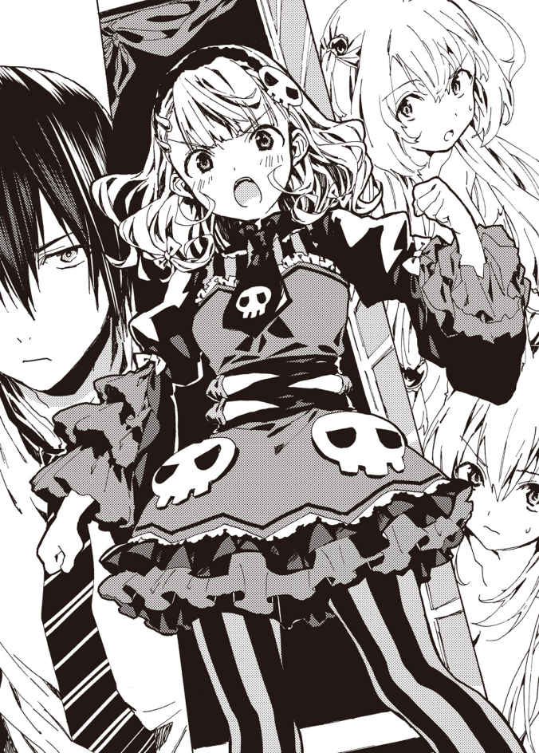
「そ、その前に――」
と、シャーロットは室内に視線を向ける。恥 じらうように頬を赤らめ、ぼそっと言った。
「服を着てもらってもいいかしら？ 落ち着かないわ」
「ま、このままだと風邪引いちまうしな。スノウたちは先に風呂入っててくれ」
スノウはこくんとうなずく。
「わかったの！ 待ってるの！」
「だ、だから走ったら危ないですって！」
「お待ちしております、ご主人様」
スノウとシャロンとルメリアは併 設 された浴室へ向かい、寝室には翔真とアイリスだけとなる。
「ほら、入れよ」
手招きするが、シャーロットは窓の外から動かない。
「も、もうちょっと向こうに行きなさい」
「なんでだ？」
すでに窓から一メートルは離 れているし、これなら問題なく入室できるはずだ。
「い、いいから離れてっ。あと、窓は開けたままでいいわよね？」
「好きにしな」
翔真は三メートルほど後退する。それを見て、シャーロットはびくびくしながら入室を済ませた。床 に足をつけた途端、飛 翔 魔札の効力が切れる。
「......」
翔真は眉 をひそめる。シャーロットが入室した瞬間、妙な匂 いが強さを増したのである。間 違 いなく、匂いの主はシャーロットだ。年 頃 だし、香 水 でもつけているのだろうか。
翔真が匂いを嗅 いでいると、シャーロットはうつむいてしまった。ぎゅっと拳 を握 り、ぷるぷると震 えている。
「寒いのか？」
「べ、べつに寒くなんかないわっ！」
「そっか。それはそうと、なんかいい匂いがするな。お前の香水か？」
なにげなくたずねると、シャーロットははっと目を見開いた。
「あ、あんた......いま、なんて......？」
「いい匂いがするって言ったんだ」
「ほ、ほんと？ ほんとにいい匂いがするの？ く、臭 くないわけ......？」
離れろと言ったくせに、シャーロットが詰 め寄ってきた。
推察するに、先ほどまでは匂いを気にしていたのだろう。気にするということは、香水ではないということだ。つまり、この匂いはシャーロットの体 臭 ということになる。
「おう。甘 くていい匂いがするぜ」
シャーロットは嬉 しそうに口をもにょもにょさせる。
「そ、そう。あんた、ほんとに差別しないのね。噂 通りで安心したわ」
「噂？」
「『異種族共存を謳う自治区がある』って噂よ。あたしはその噂を信じてあんたに会いにきたの。......ま、実際にあんたを見て、噂は本当なのかしら？ って疑問に思っちゃったけどね」
「なんでだ？」
「だってあんた、ど、奴 隷 を裸にして楽しんでいたじゃない！ そ、それに小さい娘 まで裸にして......」
「翔真はえっちなことをするために服を脱がせたわけではないのじゃ！ さっき、翔真はお風呂に入るよう告げておったじゃろ！」
「......そ、そのあと、えっちなことをするんじゃないの？」
「しないのじゃ！ お風呂に入るのが目的なのじゃ！ 翔真を悪く言う輩 は、誰だろうとこのわしが許さぬのじゃ！」
ぷんすかするアイリスに、翔真は笑 みを向ける。
「かばってくれてありがとな。ほんと、お前は最高の嫁だぜ」
褒 めてやると、アイリスははち切れんばかりの笑 顔 になった。感 極 まったように翔真の頭上をぐるぐるまわり、「わしこそが最高の嫁なのじゃ！」と興奮している。
「これ、あんたの嫁なの!? 」
シャーロットが信じられないといった様子でアイリスを指さす。
「そうだ」
「じゃ、じゃああんた、ふたりも嫁がいるわけ!? 」
「俺の嫁は三人だ」
「三人!? この女と、騎士門の全権代理者でしょ？ あとひとりは誰なのよ？」
「ミストと結婚したことは知ってるんだな。それも噂になってんのか？」
「ミストって誰よ？」
「騎士門の全権代理者だ」
「なら知ってるわ。騎士門と同盟を結んで、そこの全権代理者と結婚したんでしょ。その噂を聞いて、あんたに会いにきたんだもの。それで、あとひとりは誰なわけ？」
「さっきまでここにいた、獣牙門の幼女――全権代理者のスノウだ」
「い、いまのが全権代理者なの!? てことは、あんた獣牙門とも同盟結んだわけ!? 」
シャーロットはショックを受けたように悲鳴を上げる。
「俺が獣牙門と同盟を結ぶと、なにか不都合でもあるのか？」
「そ、そうよ。まあ、そのことについてはそのうち説明するわ。いまはほかに言わなきゃならないことがあるもの」
シャーロットは気を取りなおすように咳払いすると、きりっとした顔になる。
「あたしがここに来たのは――竜胆翔真。あんたに頼 みたいことがあるからよ」
「言ってみろ」
促 すと、シャーロットは淡 々 と語りだした。
「実は今度、巨人門 の全権代理者と神託遊戯をすることになったの。そこで、あんたの力を借りたいのよ」
「つまり俺と同盟を結びたいってことか？」
「そういうことよ」
「それ、死霊門の連中は納 得 してんのか？」
騎士門と獣牙門の民は〈竜胆翔真の帝国〉との同盟を快 く受け入れてくれた。なぜなら両門派は翔真に救われたからだ。
アストラルは異種族同士の諍 いが絶えない世界なのだ。そうした下準備をしなければ、民が同盟を受け入れるとは思えない。
「それはあたしが責任を持って納得させるわ」
シャーロットは自信満々に言う。なにか策があるのだろうか。
「どうやって納得させるつもりだ？」
その問いに、シャーロットは二本指を立てる。ほっそりとした指には、銀色に輝 く魔導指輪がはめられていた。
「策はふたつあるわ。ひとつは巨人門が強いことよ。でも、あんたと同盟を結べば確実に勝てるわ。あんたの強さは周知の事実だもの」
「巨人門と神託遊戯することは民に報 せてるのか？」
「お触 れを出 したわ。で、民は不安がってるってわけ。あんたと同盟を結ぶ理由としては申し分ないはずよ」
「なるほどね。で、あとひとつは？」
「それは......」
口にするのをためらうように黙りこみ――シャーロットは決意の眼 差 しを向けてくる。
「あたしとあんたが夫 婦 になることよ。同盟とともに結婚すれば、民は納得するはずよ。で、あんたの返事は？」
「嫌 じゃ！」
アイリスが叫 ぶが、シャーロットはそれを無視する。こわばった表情で、翔真の返事を待っている。
「ひとつ条件がある」
と、翔真は言った。
「条件？ なにかしら？」
「俺は魔札を集めてるんだ。そこで、お前には死霊門の自治区にあるＳＳＳランク魔札の所有者を明らかにしてほしい」
シャーロットは不思議そうな顔をする。
「差し出すんじゃなくて、所有者を明らかにするだけでいいわけ？」
「そうだ。巨人門との諍いが解決したら、そいつら全員と神託遊戯をさせてくれ。それが俺の条件だ」
「......その神託遊戯であんたに負けたら、どうなるのかしら？」
「んなもん、ＳＳＳランク魔札をいただくに決まってんだろ」
シャーロットはきょとんとする。
「そ、それだけ？ 奴隷にしないわけ？」
「しないと誓 うぜ」
シャーロットは悩 むように黙りこみ、ややあって口を開いた。
「その条件、受け入れるわ」
「決まりだな」
と、話がまとまったところ、浴室から呼び声が聞こえてくる。スノウが待ちかねているようだ。
「じゃ、あたしは帰るわ」
シャーロットは窓に足をかけ、飛翔の魔札を取り出した。それから、なにか思い出したように翔真を振り向 く。
「ああ、そうそう。大切なこと聞くの忘れてたわ。――あんた、巨人門の全権代理者より強いのよね？」
翔真はにやっと笑った。
「俺は誰にも負けないぜ」
シャーロットは安心したように微笑する。
「それを聞いて安心したわ。じゃ、所有者が明らかになったら〈碧落からの語りかけ 〉で連絡するわね」
「おう。楽しみにしてるぜ」
見送る翔真に、シャーロットは飛翔の魔札を詠 唱 する。
「......あと、いい匂いって言ってくれて、ありがと」
そして、ぼそっとつぶやき、夜空へと飛び立っていったのだった。
◆
バスタイムを楽しんだ翔真はベッドに腰かけ、冷水の魔札を具現化させた。喉 を潤 し、一息つく。
「わかっちゃいたが、狭 かったな」
アストラルにて集団入浴を試みたのは二回目だ。前回は露 天 風 呂 だったが、今回は備えつけの浴室だった。前回と比べて参加者は少ないものの、かなりの狭さを感じたのだ。
可愛 い女の子と狭い湯船で密着するのは嬉しいことだ。だが、スノウ的には広々とした風 呂 場 のほうが楽しめたのではないだろうか。
そんなふうに思っていたが、
「ぎゅうぎゅう詰めのお風呂楽しかったのっ！ またこれやりたいの！」
スノウが満足げに話しかけてくる。普 段 できない経験ができて楽しかったのだろう。
「そりゃよかった」
中庭に露天風呂を用意してもよかったが、しばらくはこのままでよさそうだ。とはいえ、さすがにここにカンナとミストが加わるようなことがあれば、新たな風呂場を用意するが。
「さて、寝 るか」
「あっ、ちょっと待ってください。まだ髪が乾 ききっていません......ていうか、どうして翔真さんの髪はもう乾いてるんですか？ 私たちよりあとに出てきましたよね？」
脱衣所に収まりきらないため、翔真はシャロンやスノウのあとに出てきたのだ。
「こいつを使ったからな。――〈纏わりつく風 〉！」
ひゃあ、とスノウとシャロンが驚 いたように悲鳴を上げる。パジャマと髪が風になびき、乾 燥 しないように目を瞑 る。
風が収まったとき、ふたりの髪は乾ききっていた。
「これは瞬時に水気を払 う魔札でな。俺とルメリアは風呂上がりにこいつを使ったんだ」
「そうだったんですか。でも、使うならそう言ってくださいよっ。びっくりしたじゃないですか......」
「悪い悪い。で、ほかにやることはあるか？ なければ寝るが......」
翔真はあくびを噛 み殺 す。今日は朝早くからティナが押 しかけ、ほとんど眠れなかったのだ。
「あとはスノウ様の髪をとかすだけです。ちゃんととかさないと起きたときすごいことになりますからね」
「ぼさってなるのっ！ ルメリアお姉ちゃんはならないの？」
スノウとルメリアの髪 型 は似ているが、髪 質 は違うらしい。ルメリアは首を振った。
「私は奴隷でしたので、櫛 でとかす習慣はありません。きっと寝 癖 がつきにくい髪質なのだと思います」
「それもあるじゃろうが、スノウは寝 相 が悪すぎるのじゃ。じゃから起きたときぼさぼさなのじゃよ」
「じゃあ今日は翔真お兄ちゃんに抱きついて寝るのっ」
スノウはそう言って、翔真のベッドにダイブした。シャロンとルメリアが同じベッドにもぐりこむ。
「んじゃ、明かり消すぜ？」
と、翔真は部屋を明るく照らしていた〈行き渡る光 〉の効果を切った――その瞬 間 。
「ひゃあ!? 」
シャロンの悲鳴が響 き渡った。
「どうした？ お前、暗いの苦手だったか？」
「そ、そうじゃありません！ あ、あそこ......窓を見てください！」
「窓？」
もしかしてシャーロットが戻 ってきたのだろうか。そう思いつつ窓のほうへ目をやると、そこには瞳 のようなものがあった。
ぼんやりとしか見えないが、まばたきをしているし、何者かの目で間違いなさそうだ。
（これだけ大きい目玉ってことは......こいつは巨人門か？）
覗き魔の正体を推測しつつ、翔真は〈行き渡る光〉を唱えた。部屋が明るくなり、窓に室内の様子が映し出される。
念のためルメリアたちを遠ざけ、翔真は窓を開けた。開放に驚いたようにまばたきし、目がうしろに下がる。
それによって、目の全体像が明らかになった――あまりにも大きすぎるため身体 全体を見ることはできないが、それが女の子の顔であることはわかった。
大きな瞳を潤 ませた、気弱そうな顔立ちの娘である。夜桜のように目を引く髪は目元にかかるほど長く、肌 の白さと相まって幻 想 的 に感じられる。ぷっくりとした唇 は小刻みに震 え、潤んだ瞳で翔真のことを見つめている。
「お前は......巨人門か？」
確信を持った問いかけに、女の子はうなずいた。その風圧で、室内に生温かな風が吹 く。
「わ、わたしは巨人門の全権代理者――ジュナよ」
おどおどと名乗り、じっと翔真を見つめる。
「あなたが......竜胆翔真ね？」
「おう。翔真でいいぜ」
親しげに笑いかけると、ジュナはびくっと震えた。やや後退する。見るからに弱々しい顔つきだし、きっと臆 病 なのだろう。
（巨人門は強いって聞いていたが、そうは見えねえな。猫 被 ってるわけでもねえようだし......）
とはいえ普段の性格と神託遊戯の実力は別物だ。
全権代理者を務めるくらいだし、きっと強いに違いない。
そんな巨人門の全権代理者が翔真になんの用だろう。
近々死霊門との神託遊戯を控 えているわけだし、このタイミングでよその門派に争いをしかけるとは思えないが。
あるいは神託遊戯が大好きなだけかもしれないが――だからといって、こんな真夜中に押しかけるのはおかしい。
となると、切 羽 詰 まった事情があると考えるのが妥 当 なところだ。
（もしかして、こいつの用件ってのは......）
翔真が思考を巡 らせていると、ジュナが口を開いた。甘い吐 息 が漂ってくる。
「実は、あなたに大事なお話があるの」
「その前に、こいつを使わせてもらうぜ。――〈密談空間 〉！」
詠唱すると、ジュナがびくっと震えた。
「い、いまの魔札はなに？ わ、わたし、あなたに敵意なんてないよ？」
「安心しろ。いまのは音を遮 断 する魔札だ。つまり、俺の声はお前にしか聞こえないし、お前の声は俺にしか届かないってわけだ。で、大事な話ってのはなんだ？」
「う、うん、その、えっと――わっ、わたしと同盟を結んでほしいの！」
ぎゅっと目を瞑り、ジュナは裏返った声を張り上げる。よほど緊 張 していたようだ。
「なんでだ？」
理由は察しがついているが、翔真は知らないふりをする。
「えっと、実は三週間後に死霊門と神託遊戯をすることになったの。わたしはぜったいに負けるわけにはいかないから......だから、〈竜胆翔真の帝 国 〉と同盟を結ぼうと思ったの。異種族共存を謳 ってるって聞いたから、わたしたちとも同盟を結んでくれると思って......」
「そっか。そいつは光栄だぜ」
「こ、光栄？」
ジュナは戸 惑 いの表情を浮かべる。
「可愛い女に頼 られたんだ。これほど嬉しいことはねえよ」
「か、可愛い......？」
ジュナはかあっと顔を赤らめる。どう反応したらいいのかわからないようで、しばらく黙りこんだあと、気を取りなおすようにかぶりを振 った。
「た、頼られて嬉しいってことは、同盟を結んでくれるってことよね？」
「ま、たしかに俺の自治区は異種族共存を謳ってるからな。同盟を結んでやってもいいぜ。ただし、俺の条件を呑 めたらの話だがな」
「条件？ それって、わたしにできること？」
「そうだ」
「だ、だったら条件を呑むわっ！ わたしにできることならなんでもするっ！ あなたと組めば、巨人門は救われるもの！」
よほど切羽詰まっていたのだろうか。ジュナは条件を聞きもしなかった。
「まずは聞け。巨人門にあるＳＳＳランク魔札の所有者を明らかにしてほしいんだ。で、死霊門との諍 いが終わったら、そいつらと戦わせてくれ」
予想外の条件だったらしく、興奮気味だったジュナは冷静さを取 り戻した。
「それって、負けたらどうなるの？」
「ＳＳＳランク魔札が俺のものになるだけだ」
「それだけ？ 奴隷にしたりしないの？」
「しないと誓う」
「そう......。それなら喜んで受け入れるわ」
「交 渉 成立だな。それじゃ、所有者が明らかになったら〈碧落からの語りかけ〉で教えてくれ」
「わかったわ」
うなずき、ジュナは身を翻 した。
「気をつけて帰れよ」
なんとはなしに声をかけると、ジュナが驚 いたように振り向いてくる。
「し、心配してくれるの？ わたし、巨人門なのに......」
「異種族だろうと女であることに変わりはねえだろ。こんな夜中にひとりでいたんじゃ、悪い奴 に絡 まれるかもしれねえからな」
心配されたのが嬉しかったのか。いまになって、ジュナの顔から警戒の色が薄 れていく。
「異種族の心配をするなんて、あなたって変わってるわね。だいじょうぶよ。好き好んで巨人門に近づくひとなんていないもの」
シャーロットは露 骨 に巨人門を警戒していたが――彼 女 だけではなく、世界中の人々が巨人門を怖 れているのだ。
なぜなら巨人門は大きいから。彼 らの目に、翔真たちは地を這 う虫けらのように映っているだろう。
人類は意図せず虫を踏 み潰 すことがある。
無意識である以上、そこに殺意は存在しない。
つまり暴力行 為 が禁じられたアストラルにおいて、巨人門は唯 一 人殺しができる種族というわけだ。
巨人門に近づけば踏み潰されるかもしれないため、人々はジュナたちを怖れているのだ。
「で、でも、あなたの気持ちは嬉しいわ。あなたみたいなひとがひとりでもいてくれたら、こんなふうに悩 むこともなかったのにな......」
ぼそぼそとつぶやき、ジュナは夜空へと飛び去っていった。
「なにを話しておったのじゃ？」
ジュナが去り、〈密談空間〉の効果を切ったところ、アイリスがたずねてきた。
「俺と同盟を結びたいって言うから、シャーロットと同じ条件を伝えといたぜ」
あっけらかんとした口調で告げると、アイリスは眉をひそめた。
「それはややこしいことになったのぅ......」
死霊門と巨人門は神託遊戯をする予定なのだ。どちらか一方としか同盟は結べない。
断られたほうは当然、翔真を恨 むだろう。そうなると神託遊戯が終わったあと、今度は翔真のほうから同盟を持ちかけたとしても、拒 否 されるのは目に見えている。
つまり、アイリスの夢が遠ざかるのだ。
「〈密談空間〉を使ったのは、わしらの口から死霊門とのやり取りがもれるのを防ぐためだったのじゃな？」
「そうだ。あのタイミングで死霊門との同盟のことがばれたら、もっとややこしいことになるからな」
「じゃが、けっきょくはどちらか一方を選ばねばならぬのじゃ。そなたはどっちと同盟を結ぶつもりなのじゃ？ やはり先に同盟を持ちかけてきた死霊門か？」
翔真は首を横に振った。
「では巨人門と同盟を結ぶのじゃな？」
翔真はさらに首を振る。
「巨人門とも結ばぬのか？ では、いったいどうするのじゃ？」
怪 訝 な顔をするアイリスに、翔真は告げた。
「俺は、俺を悦 ばせたほうと同盟を結ぶことにした」
アイリスはぽかんとする。
「悦ばせるって、どういう意味じゃ？ ま、まさかえっちな意味ではないじゃろうな!? 」
「そのまさかさ」
「なぜじゃ!? わしがおるじゃろ！ そ、そりゃ胸を揉 ませることはできぬが、目の保養くらいにはなるじゃろ！」
「なるぜ」
「じゃろ!? なのにどうしてほかの娘に欲情するのじゃ！」
「あの、アイリスさん？ スノウ様が聞いてますし、もうちょっと言葉を選んでくれると助かるんですけど......」
「そんな余 裕 はないのじゃ！」
アイリスは必死だ。
「落ち着け。これはアイリスの夢を叶 えるのに必要なことなんだ」
「......わしの夢を叶えるため？」
きょとんとするアイリスに、翔真は手短に理由を話して聞かせる。
翔真の計画を聞き終えたとき――アイリスたちは感心したように目を丸くしていた。
「まさか巨人門の全権代理者が現れた一 瞬 のうちに、そんなことを考えておったとは......あいかわらず頭の回転が速いのぅ」
「翔真お兄ちゃんは優 しいのっ。優しくないと、そんなことは思いつかないのっ！」
「ですね。これ以上ないくらい平和的な作戦です」
アイリスとスノウ、それにシャロンに称 賛 され、翔真はあくびをこぼす。
「さて、さすがにもう誰 も来ないだろうし、いいかげん寝るとするか。ほら、明かり消すからベッドに入れよ」
と、そうして〈行き渡る光〉の効果を消し......翔真の長い一日がようやく幕を下ろしたのであった。
◆
夜空を飛んでいたジュナは、口元をにやつかせていた。
（翔真さん、優しいひとでよかったわ）
圧 倒 的 な力を持っていると聞いていたため強面 の性 悪 男をイメージしていたが、実際に会って抱 いた印象はその真逆だ。
怯 えるジュナに、翔真は優しく接してくれた。
可愛いと言われたのも嬉しいが、なにより心配してくれたのが嬉しかった。
気弱で臆病な巨人門と違 い、翔真は頼りがいがある。
彼なら巨人門を守ってくれるだろうし、同盟を結ぶことができれば、ジュナは不安から解放される。
幸 先 が明るくなり、ジュナは鼻歌などを歌い始めた。
そのときだ。
「きゃあ!? 」
突 然 目の前に人影が現れ、ジュナは慌てて静止した。
まさか真夜中の大空で衝 突 しかけるとは思わなかった。
ジュナはバクバクと高鳴る心臓をそのままに、じっと目を凝 らして小さな人影を見る。
それは二人組の女であった。
姉妹だろうか。銀色の髪を夜風になびかせているふたりの顔は、よく似ていた。しかし服の趣 味 は違うようで、長身の娘は露 出 の激しい服を纏 い、小 柄 な娘は露出の少ない服を着ている。
「だ、誰なの？」
ジュナはびくびくしつつたずねた。
目の前に現れたということはジュナに用があるのだろうが――返事はなかった。
ふたりはジュナを無視して、なにやらささやきあっている。
「ふふっ。死霊門に続いて巨人門もか。これは面白 いことになってきたね」
「どうするのっ？」
「どうもしないさ。どう転ぼうと、あれは彼の手に渡 るだろうからね。ここは彼に任せるとして、僕 たちは次の所有者に会いに行こう」
けっきょく正体を明かさぬまま、ふたりはパッと姿を消した。
「な、なんだったのかな......？」
まだ心臓がバクバク鳴っている。
ジュナに用があるようだったが......人 違 いだったのだろうか。
わからないが、いまはほかに考えるべきことがある。
「早く所有者を探さなきゃ。一枚はわたしが持ってるけど......ほかに誰か持ってるかなぁ......」
冷たい夜風を浴びながら、ジュナは自治区へ急ぐのだった。
シャーロットから連 絡 が入ったのは、同盟を持ちかけられた翌日のことだった。
昼過ぎまで寝ていた翔 真 はスノウとシャロンを見送り、アイリスたちと〈うさぎ亭 〉へ食事に向かおうとしたところ、頭のなかに鈴 の音 のような声が響いたのだ。
『竜 胆 翔真っ！ こちら、シャーロットよ！ 魔札 の所有者が明らかになったわ！』
ふいに大声が頭に響き、翔真は顔をしかめた。
「どうしたのじゃ？」
「シャーロットから連絡だ」
アイリスにそう告げ、翔真はシャーロットに返事をする。
「もう所有者を明らかにしたのか？」
『そうよ！ あんたと同盟を結ぶために頑 張 ったのよっ！ それで、ＳＳＳランク魔札の所有者なんだけど――』
「それは直接会ってから聞くぜ。俺 もお前に言わなきゃならねえことがあるしな。ってなわけで、これからお前に会いに行くぜ」
『わかったわ。いまから出るなら、こっちに到 着 するのは夕 方 頃 よね？ あと、あたしの城の場所は知ってるわけ？』
「結界を使ってなければ〈探知 〉で特定できるぜ。それに〈透視 〉と〈千里眼 〉と〈瞬間移動 〉を併 用 するからな。移動は一瞬だ」
『ほんと、あんたっていろんな魔札を持ってるのね......。ま、だからこそあんたと同盟を結びたいんだけど。......ところで、〈千里眼〉って？』
「〈千里眼〉ってのは世界中を見通す魔札だ」
『そんな便利がものがあるのね......って、じゃああんたあたしのこと見てるわけ!? 』
頭に悲鳴が響く。まだ使っていないため表情をうかがい知ることはできないが、悲鳴を上げるということは、見られて困る格好をしているのだろう。つまり、
「風 呂 に入ってるのか？」
『ち、違うわ。これからシャワーを浴びるところだったのよ。まだ使ってなかったのね』
シャーロットは安 堵 するように言った。
「お前の言う通り、俺はまだ〈千里眼〉を使ってないからな。シャワーが終わったらまた連絡してくれ」
『この状 況 でできるわけないでしょ！ それに......あんたが相手なら、シャワーを浴びる必要はないわ。だって、いい匂いがするって言ってくれたし』
シャーロットは気 恥 ずかしそうに言った。どうやら体臭にコンプレックスを抱いているようだ。熟した果実のような甘い香 りだったし、毎日でも嗅ぎたいくらいだが......本人は気にしているのだろう。
『と、とにかくそういうことだからっ。いますぐ来てくれて構 わないわ！』
その言葉を最後に、シャーロットの声が途 絶 える。翔真は移動に必要な魔札を詠唱し、そわそわしているルメリアに告げた。
「悪いが、ルメリアを連れていくことはできねえんだ」
ルメリアはあらゆる種族に忌 み嫌 われる混血種だ。同盟を結んでいない自治区 に行けば悪意ある視線を向けられることになるだろう。
長い間奴 隷 として生きてきたルメリアは、他人の視線に敏 感 だ。直接罵 られなくても、蔑 まれていることに気づくだろうし、悲しい思いをするはずだ。
翔真はルメリアの悲しむ顔など見たくなかった。
だからこそ、翔真は二の句を継 いだ。
「けど、留守番は退 屈 だろうしな。しばらくはカンナの手伝いをするといいぜ」
悲しげに目を伏 せていたルメリアは、ゆっくりと顔を起こす。
「カンナ様のお手伝い......ですか？」
「ああ、そうだ。カンナと一 緒 なら寂 しくないだろ？」
「はい。ですが......私にカンナ様のお手伝いが務まるでしょうか？」
不安げに瞳を揺 らすルメリア。その頭を、翔真は優 しく撫 でてやる。
「務まるさ。毎日ルメリアに世話してもらってる俺が言うんだから間 違 いねえ」
ルメリアが瞳を潤 ませ、じっと翔真の目を見つめてくる。
「ご主人様......。私、頑張ります」
「おう、その意気だ。やることが終わったら、俺もルメリアに接客してもらうからな」
「私が、ご主人様を......？」
「ああ。ルメリアがどういうふうに接客してくれるか、いまから楽しみだぜ」
「ご主人様が、楽しみに......」
ルメリアが嬉しそうに唇 をほころばせる。
「さて、カンナには俺のほうから伝えとくからな。準備ができたら行ってみろよ」
「かしこまりました。では、お気をつけて行ってらっしゃいませ」
「おう。お前も気をつけてな。なにか困ったことがあったら、〈碧落からの語りかけ〉を使えよな。すぐに駆けつけるからさ」
ルメリアに別れを告げた翔真はひとまず〈うさぎ亭〉へ飛び、カンナに事情を伝えると、シャーロットのもとへ瞬間移動するのであった。
◆
甘 い香りが漂 う部屋に、シャーロットは腕 組 みをして佇 んでいた。
ベッドがあるところを見るに、ここは彼女の寝 室 だろうか。黒を基調とした、ゴスロリ風の部屋である。
「よく来たわね！」
「おう、来てやったぜ。さっそくだが、魔札の所有者を教えてくれ」
「この自治区にあるＳＳＳランク魔札は、あたしが持ってる二枚だけよ！ さあ、約束は果たしたわ。これで同盟を結んでくれるわよね！」
「それなんだが、ちょっと事情が変わってな。条件を追加させてもらうぜ」
「ど、どうして？」
うろたえるシャーロットに、翔真は事情を告げる。
「実は昨日、お前が帰ったあとに巨人門 の全権代理者 が来てな。うちと同盟を結びたいんだとさ」
シャーロットがぎょっとした顔で詰 め寄 ってくる。
「あ、あの女が来たわけ!? あんたはなんて言ったの!? あたしのほうが先なんだから、当然断ったのよね!? 」
「お前と同じ条件を伝えて帰ってもらったぜ」
シャーロットはショックを受けたようにへなへなと座 りこむ。
「そ、そんな......。あんたが巨人門に味方したら、勝ち目なんてないじゃない......」
「落ちこむのはまだ早いぜ。どっちと組むかはまだ決めてねえんだからな」
「あんたに励 まされるのは釈 然 としないけど......でも、諦 めるのはまだ早いわよね」
シャーロットはよろよろと立ち上がり、じろっと翔真を見つめる。
「それで、条件ってなによ？」
「俺を悦ばせることだ」
端 的 に告げると、シャーロットは小首を傾 げた。
「それって、あんたをもてなせってこと？ たとえば、豪 華 な食事を用意したり......」
「それもあるな。けど、俺は飯より女のほうが好きだぜ」
「死霊門 中の美女を集めて、あんたにご奉仕させろってこと？」
「ちょっと違うな。たしかに美女に奉仕されたいが、そんなことをしてみろ。死霊門の男連中は間違いなく俺を恨 むぜ？ もちろん美女とその家族もな」
アイリスの夢を叶 えるためにも、死霊門の民 に恨まれるのは望ましくない。
「じゃあどうすればいいわけ？」
「お前が奉仕するんだよ」
翔真は即 座 に疑問に答えた。シャーロットは信じられないといった様子であとずさる。
「あ、あたしがあんたにご奉仕するの!? 」
「そうだ。ま、無理ならべつにいいんだぜ？ そのときは巨人門と同盟を結ぶからな」
シャーロットは悩むように黙 りこむ。とはいえ、考えるだけ時間の無 駄 なのは承知しているのだろう。彼女はすぐに口を開いた。
「......あの女にも同じ条件を出すのよね？」
「ああ。で、どうする？ 俺に奉仕するか？ それとも同盟はなかったことにするか？」
「あ、あんたにご奉仕するわ」
嫌 そうにしつつも条件を受け入れるシャーロットに、翔真は口 の端 をつり上げて笑う。
「決まりだな。んじゃ、さっそくこいつに着 替 えてくれ」
翔真はシャーロットに衣 装 の魔札を渡した。それを受け取り、彼女は顔を赤くする。
「こ、こんな破 廉 恥 なのに着替えろっての!? 」
「おいおい。その発言は踊 り子 に対して失礼だぜ？」
翔真が渡した衣装は、踊り子の着るようなものだったのだ。
「ほ、ほかにないの？」
「ない」
「な、ないわけないでしょ！ そんなにたくさん魔札を持ってるんだからもっと露 出 度 が少ない服を――」
「ない」
語気を強めて否定すると、シャーロットは言葉を詰まらせた。もちろん翔真の指輪には大量の衣装が眠 っているが、今回彼女に着てもらうのはこの服に決まっているのだ。
断ることはできないと察したのか、シャーロットは決心したような顔をする。
「わ、わかったわよ！ 着ればいいんでしょ着れば！ これであんたと同盟を結べるんだもん、安いものよ！ じゃ、着替えるからとなりの部屋で待ってなさい！」
「断る」
「な、なんでよ!? まさか着替えまで見るわけ!? 」
「その通りだ。そもそも〈千里眼〉を使ってるわけだし、別室に行こうが意味ないぜ。ま、同盟を結ばなくていいってんなら覗 きはしないし、すぐに帰るがな」
「それはだめよ！」
シャーロットは叫 んだ。
「あたしは、なにがなんでもあんたと同盟を結ばなきゃならないんだから」
真 剣 な顔でそう語るシャーロットに、翔真は探 りを入れるように提案する。
「ジュナに神託遊戯 をやめるよう頼 むって手もあるぜ。俺に同盟を持ちかけたってことは、あいつも神託遊戯に自信がないってことだからな」
シャーロットは言おうか言うまいか悩むように黙りこみ、
「......違うのよ」
と、口にした。
「なにが違うんだ？」
「巨人門に勝つために同盟を持ちかけたんじゃない。あんたと同盟を結ぶために巨人門に挑 んだのよ。そうでもしないと、うちの連中はあんたと......異種族と手を組むことに反発するでしょうからね」
「そうまでして俺と同盟を結びたい理由はなんだ？」
「死霊門の地位を向上させるためよ。あんた、死霊門が異種族からどんなふうに思われてるか知ってる？」
「さあな」
「臭 い。汚 い。気持ち悪い。......そういうふうに思われてるのよ」
忌 々 しそうに拳 を握 り、シャーロットは言った。
「そりゃ変だな。シャーロットはいい匂 いがするし、清潔だし、可愛いぜ？ なにひとつ一 致 しないじゃねえか」
言い終えたとき、シャーロットは耳まで赤く染めていた。上手 く声が出ないのだろうか。ぱくぱくと口を動かし......か細い声を絞 り出 す。
「そ、そんなふうに思ってくれるのは、あんたくらいよ......」
「この甘 くていい匂いを、ほかの連中は臭いと思うのか？ なあ、アイリスはどうだ？」
「わしは好きじゃぞ。それにスノウだって気に入っておったのじゃ。ほれ、風呂上がりのときに言っておったじゃろ」
「ああ、美味 しそうな匂いがするって言ってたな」
シャーロットが、じっと翔真の顔を覗きこんでくる。
「......ほんと？」
「ああ、ほんとだ。鼻の利 く獣牙門 がそう言うんだ。ほかの連中だって同じことを思うに決まってるぜ。なのに臭いと思われてるってことは、なにか理由が――きっかけがあるんだよな？」
アストラルに召 喚 されて三ヶ 月 足らずの翔真は、死霊門の事情をよく知らない。
アイリスならなにか知っているかもと思っていたが、彼女にもわからないらしい。
となるとアイリスが『封 印 の間』に閉じこめられていた五〇年のあいだに『なにか』が起きたのだろう。その『なにか』が、死霊門の地位を貶 めたのだ。
「あたしたちは、生のお肉を食べるの」
シャーロットはそう切り出した。
「焼いたり、煮 たり、蒸 したり......とにかく加工すると、胃が受けつけてくれないのよ。それに、吐 き気 を催 すような味になるわ」
騎士門 と死霊門――見た目こそ似ているが、身体の作りは異なっているようだ。
「生肉を食べることが、『気持ち悪い』の理由か？」
シャーロットはうなずく。
「けどさ、それだけなら『臭 い』とも『汚い』とも言われねえよな」
「うん。でもね......本当に臭くて汚い奴がいたのよ」
シャーロットは恨みがましそうに言う。
「あたしたちは胃が弱いから、ご飯のあとに消化を手助けする果物を食べてるの。甘くて良い香りがする果物よ」
「それがこの匂いの正体か？」
「そうよ。毎日たくさん食べるから、歳 を取るにつれて甘い香りも強くなるのよ」
でも、とシャーロットは忌々しげに歯を食いしばる。
「あいつは――あたしのパパは、肉しか食べなかったわッ！ 肉は力の源だとか、果実を食べると貧 弱 になるとかわけのわからない理由を並べ立てて、肉しか食べなかったのよ！ それに身だしなみにも気を遣 わない男だったから......娘 のあたしが顔をしかめるくらい、臭いし汚かったのよ」
けっきょく肉しか食べなかったため、体調を崩 して死んでしまったらしい。
「なるほどな。理解したぜ。つまりお前の親父 が偏 見 を広めた張本人ってわけだな？」
「......うん。パパはとにかく豪 快 だったの。豪快で、好戦的で、傷つくことを怖 れなくて......なにより神託遊戯が大好きだったわ。世界中を巡って、異種族と戦って......あたしが持ってるＳＳＳランク魔札だって、すべてパパが手に入れたものなのよ」
シャーロットの父はクエストに参加するべく精 霊 の管 轄 区を訪 れた――そこには数多 の種族が集 うため、死霊門に対する偏見は瞬 く間 に世界全土へ広まったのだ。
「パパのせいでみんなが悔 しい思いをしてるわ。あたしは娘として、パパが広めた偏見を消し去らないといけないのよ！」
シャーロットがなにかをしたわけではないし、誰も彼女を責めたりしないだろうが――娘として責任を感じているのだろう。
そうでなくとも嘲 笑 されるのは悔しいことだ。だからこそシャーロットはなんとかして偏見を解き、死霊門の地位を向上させたいと願っているのである。
「あんた、巨人門に会ったのよね？ だったらわかるでしょ？ あいつらはとにかく巨 大 なのよ。だからあらゆる種族に特別視されてるの。あいつらを倒 せば、死霊門を舐 めてる連中は黙りこむわ」
「けど、お前の目的は俺と同盟を結ぶことなんだろ？」
「そうよ。いまは巨人門よりあんたのほうが特別視されてるわ。あんたと同盟を結んで、あんたの正妻になって......そして、あんたの赤ちゃんを産めば、死霊門は全種族に特別視されるのよ。あたしの赤ちゃんが〈竜胆翔真の帝国〉の後 継 者 ってことになるもの」
「なるほどな。だから俺の嫁 が三人もいることを知って焦 ってたのか」
「そういうことよ」
そう言って、シャーロットはアイリスを見上げた。
「こいつが見てなかったら、いますぐ子どもを作りたいくらいだわ」
アイリスのせいにしているが、それが虚 勢 だということは一 目 瞭 然 だった。
なにせシャーロットは踊り子の服に着替えることすらためらっているのだ。この程度で恥 じらう娘が、その先に踏 みこめるわけがない。せいぜいキス止まりだ。
「ま、なんにせよ着替えないことには始まらねえがな。つっても、無理ならべつにいいんだぜ？ 踊り子姿のお前を見てみたいが、意地悪したいわけじゃねえしな」
「......あ、あたしの踊り子姿、そんなに見たいわけ？」
「そりゃな。シャーロットみたいな美女の踊り子姿、見たくないわけがねえだろ」
「しょ、しょうがないわね！ そこまで言うなら見せてあげるわっ。は、恥ずかしいけど、着替えてあげるんだから！」
シャーロットはぎゅっと唇を噛 みしめ、ドレス仕立ての衣装に手をかけた。
リボンをほどき、ゆっくりとボタンを開けていき......ばさっと音を立て、服が足もとに落下する。
ミルクを溶 かしたような肌には、染 み一つ見当たらなかった。幼さの残る体つきだが、シャーロットは大人びた下着を身につけていた。
「ぜ、全部脱 がなきゃだめ？」
「お前次 第 だ」
言外に同盟をちらつかせると、シャーロットは下着に手をかけた。
布面積が限りなく小さい踊り子の衣装を身につけるには、全 裸 になる必要があるのだ。でないと下着の上からマイクロビキニを着用するように、不格好になってしまう。
よほど翔真と同盟を結びたいのだろう。シャーロットはついに一糸まとわぬ姿となる。
急いで踊り子の服を纏 い、恥ずかしさを振り払 うようにふんぞり返った。
「こ、これで満足した!? 」
白地に金糸で刺 繍 が施 された布が、胸と下腹部を包 んでいる。長い腰 布 がなびくたび、瑞 々 しい太ももがチラッと見える。
「似合ってるぜ」
「こんな破廉恥な格好を褒 められたって嬉 しくないわっ。次はなにをすればいいわけ!? 」
裸 を見せたことで吹 っ切 れた様子のシャーロットに、翔真は提案をする。
「最近身体 が凝 ってるし、マッサージでもしてくれ」
翔真はベッドに寝 転 がる。枕 にあごを沈 めると、シャーロットが悲鳴を上げた。
「に、匂い嗅 がないでよ！」
「なんでだ？」
「恥ずかしいからに決まってるでしょ！ そ、それに......ねえ、ほんとに臭くないの？」
自分で偏見だと言ったくせに、シャーロットはおどおどしている。嘲笑されるうちに、本当に臭いのではないかと不安になったのだろう。
「何度でも言ってやるが、甘くていい匂いがするぜ。だいたい臭いってのは偏見だって、自分で言ったんじゃねえか」
「そ、そうだけど、でも......」
シャーロットは黙りこんでしまった。瞳 には涙 が浮 かんでいる。
「実際に酷 いことを言われたことがあるのか？」
こくん、とうなずく。
「あたし、何年か前にクエストを受けに行ったの。異種族を見返してやろうって。でも、けっきょく参加せずに帰ったわ。だって、精霊の管轄区で......」
つらい仕打ちを受けたのだろう。シャーロットはしだいに涙 声 になっていく。
「異種族にバカにされてるのは、あたしだけじゃない。パパのせいで、死霊門のみんなが悲しい思いをしてるわ。だから......だからあたしは、あんたにマッサージをするのよ」
シャーロットは翔真の腰に跨 がった。
ほとんど裸なので、ぷにっとしたお尻 の感 触 が伝わってくる。
「下手 だからって文句言わないでね？ あたし、マッサージなんてしてあげたことないんだから」
「わかってるさ」
シャーロットは全権代理者――自治区で一番偉 いのだ。そんな娘が誰かにマッサージを施すとは思えない。
事実、シャーロットのマッサージはお世 辞 にも上手いとは言えなかった。力加減といい、押 す場所といい、滅 茶 苦 茶 にもほどがある。
「んっ、んっ......ね、ねえ、気持ちいい？ 気持ちよかったら、ちゃんと気持ちいいって言ってね？」
しかし力をこめるたびに聞こえてくる艶 やかな声は気に入った。
「もういいぜ」
しばらくのあいだシャーロットの声を堪 能 し、翔真は終わりを告げる。
「ど、どうだった？ あたしのマッサージ、気持ちよかった？」
「それなりにな。にしても、すごい汗 だな」
シャーロットはびくっと震 えた。くんくんと腕 の匂いを嗅ぎ、不安げに翔真にたずねる。
「く、臭いかしら......？」
翔真はあきれたように苦 笑 した。
「心配なのはわかるが、俺の前で匂いを気にすることはねえよ。安心しろ、いい匂いだ」
「そ、そう......」
「つっても、汗だくなのは気持ち悪いだろうからな。一緒に風呂入ろうぜ」
「一緒に!? あたしとあんたが!? 」
「おう。風 呂 場 はどこだ？」
シャーロットはぷるぷると震え、アイリスを見上げる。
「あんたはそれでいいの？ 正妻でしょ？ 昨日といい、今日といい、ほかの女と風呂に入るのを許せるわけ？」
「もちろん嫌 じゃ。翔真にはわしだけを見てほしいと思っておる」
じゃが、とアイリスは真剣そのものの顔で続ける。
「ここに来る前、翔真はそなたにえっちなことをする目的を教えてくれたのじゃ。翔真はちゃんとわしのことを考えてくれておる。じゃからわしは、見守ることにしたのじゃ」
「......目的ってなによ？」
「それは秘密じゃ。口が裂 けても言えぬ」
「そういうこった。で、どうする？ 俺と風呂入るか？ それとも拒否するか？ べつに断ってもいいんだぜ。ジュナが有利になるだけだしな」
「......この奥 よ」
シャーロットは観念したようにドアを指した。浴室は寝室に併 設 されているようだ。
「んじゃ、入ろうぜ。それと、風呂から上がったら町を案内してくれよ。死霊門の連中の暮らしぶりを、この目で見てみたいからな」
同盟を結ぶにあたり、死霊門の暮らしぶりを知るのは大事なことだし、死霊門が翔真にどんな反応を見せるかも知っておかねばならないことだ。
仲良くなれそうなら同盟を結んだあとも友好関係を築けるだろうし――そうでなければ同盟は破 綻 するかもしれないのだから。
「それって、この格好で行かなきゃだめ？」
シャーロットは嫌がっていた。全権代理者として、民にえっちな格好を見せたくないのだろう。
「普 段 着 でいいぜ」
シャーロットは意外そうに目をぱちくりさせる。
「い、いいの？」
「ああ。シャーロットのえろい格好は俺が独 占 したいからな。ほかの男連中には見せたくねえんだ」
「そ、そうなんだ......。あんた、あたしを独 り占 めしたいのね......」
嬉しそうに口元を緩 ませるシャーロットだったが、このあと風呂に入ることを思い出し、すぐに笑 みを消したのだった。
◆
シャーロットの居城は、精肉店や青果店などが建ち並ぶ商業区に佇 んでいた。
全権代理者が住むに相応 しい立派な城である。
だが、たしかに城は立派だが、それ以上に街並みが素 晴 らしかった。
「綺 麗 なところじゃのぅ」
「だな。町作りの参考にしたいところだが、こいつは一 朝 一 夕 じゃできねえだろうぜ」
死霊門自治区の首都フェガリ――。その街並みは、とにかく白いの一言に尽 きる。
石 灰 岩 を加工したのだろう。城の正門から延びる石 畳 の道は白く、雪のような色合いの建築物がそれを挟 んで建っている。
大通りにはゴミ一つ落ちておらず、見れば見るほど清潔で綺麗な街並みだった。
「ほかの町もこんななのか？」
首都は自治区の顔だ。この町に力を入れすぎるあまり、郊 外 を疎 かにしている可能性もある。
「ええ、そうよ。ほかの町もここに負けないくらい綺麗なのよ」
「そりゃすげえな」
翔真が褒 めると、シャーロットは嬉しそうに目を細めた。得意気に胸を反 らし、饒 舌 に語りだす。
「このくらいで驚 いてもらっちゃ困るわ。夜になるともっと綺麗になるんだからっ。白く光って見えるのよ！」
「へえ。夜でも昼間みたいに明るいってことか？」
「そこまで明るくないわ。ぴかぴか光るんじゃなくて、ぼんやり光るのよ。......あんた、死霊門のことどれくらい知ってるわけ？」
真 面 目 なトーンで訊 かれ、翔真は真顔で返す。
「良い匂いがするってことは知ってるぜ」
「そ、そう......」
シャーロットは不意をつかれたように目を丸くした。気を取りなおすように咳 払 いして、解説を再開する。
「死霊門には夜行族 っていう、日光に弱い種族がいるのよ。だから週に一度は魔札で空を曇 らせてるの。でも昼間から暗いとうかつに出歩けないから、家や道を光らせることにしたのよ」
「なるほどね。にしてもこれはいい観光名所になりそうだな。ほかの門派 が知ったら感動するだろうぜ」
シャーロットはあきれたようにぽかんとする。
「はあ？ なに言ってんのよ。異種族がうちに来るわけないでしょ」
「来るさ。俺と同盟を結べばな。そしたら死霊門の良いところが世界中に広まるぜ」
シャーロットは、うっすらと笑みを浮かべた。
「それは素 敵 な未来ね。そのためには、あんたにご奉仕しなきゃだけど」
「わかってきたじゃねえか。ま、せいぜい楽しませてもらうぜ」
「ここまで身体を張ったんだもん。なにがなんでも同盟を結んで、あんたの正妻になってみせるわ」
と、シャーロットが決意を露 わにしたそのときだ。
「全権代理者様っ!? 」
ふいに女の悲鳴が響 いた。
「そ、そいつ――その男っ、まさか騎士門ですか!? 」
騎士門と死霊門の外見は似通っている。なかにはガイコツのような姿の者もいるが――基本的にはうり二つだ。違いがあるとすれば匂いくらいのものである。
翔真はシャーロットの匂いを感じ取った。それと同じように、彼 女 は翔真の匂いを感じ取り、騎士門だと気づいたのだろう――翔真の身体からは甘い香りがしないのだ。
叫びを聞き、通行人が敵意の視線を向けてくる。ルメリアを連れてこなくてよかったと、翔真は内心そう思う。
「ええ。彼 は騎士門の男よ。ほら、最近噂 の〈竜胆翔真の帝 国 〉ってあるじゃない。彼はそこの全権代理者なの」
死霊門の人々は〈竜胆翔真の帝国〉を知っていたようで、怯 えたようにあとずさった。
とはいえ、あとずさった理由はほかにもあるようだ。たしかに恐 怖 もあるだろうが――それと同じくらい恥じらいの気持ちもあるようだ。
恥じらいというか、劣 等 感 というか――通行人は体 臭 を気にしている様子だった。
「な、なぜここに異種族の全権代理者がいるの！」
「俺たちを笑いにきたのか！」
「出てけ！ ここはてめえの来る場所じゃねえ！」
ブーイングの嵐 が巻き起こる。翔真にとっては織り込み済みの反応だが――アイリスはずいぶん応 えたようだ。顔を曇らせ、うつむいている。
「た、たしかに彼は異種族だけど、我々と友好――」
「おっ、なんだそれ？」
シャーロットの言葉を遮 り、翔真は子どもに話しかけた。六歳くらいの女児だ。彼女はぽかんとした顔で翔真を見上げ、手元の肉に視線を落とす。
「こ、これ？」
その小さな手には、赤と白の織り混ざった棒状のものが握 られていた。棒に肉を巻き、トウモロコシのような形になっているそれは――どうやら生肉のようだった。
「そう、それだ」
「お、おやつです、けど......」
大人たちの反応を見て、翔真のことを怖 いひとだと思っているのだろう。彼女は尻 込 みしつつ教えてくれた。
「美味 いか」
「は、はい」
翔真は笑みを浮かべる。
「そっか。なら俺も買うぜ」
「なに言ってんのよ!? あんた生肉なんて食べられないでしょ！ そんなことしたらお腹 壊 しちゃうわよ!? 」
シャーロットの制止を無視し、翔真は精肉店に入る。
ひんやりとした店内は、まるでアイス屋のようだ。ガラス張りのショーケースが置かれ、なかには様々な種類の生肉が並べられていたのだ。注文すると目の前で肉を巻いてくれるシステムなのだろう。
「ひとつくれ」
店主と思 しき男に話しかけると、彼は信じられないといった顔をした。
「か、買うのか？ お前......騎士門なんだろ？」
空調の魔札が効 いているためドアは閉め切られているが、路上のやり取りは店のなかに届いていたらしい。
「俺は美味いものに目がないからな。それ、美味いんだろ？ だったら食うしかねえよ」
それとも不味 いのか？ と翔真は挑 発 するような笑みを浮かべる。
「そ、そりゃ美味いに決まってんだろ！ なにせこの俺が育てた肉だぜ!? 」
店主は乗せられたように叫び、肉巻きを翔真に突 き出した。それを受け取り、ドアの外から人々が見守るなか一口囓 る。
ぬめっとした感触が舌に絡 みつき、甘 味 を帯びた鉄の味わいが口いっぱいに広がった。
「ど、どうだ？ 美味いか？」
「......焼いたほうが美味いな」
本音を告げると、店主はきょとんとしたあと――豪快に笑った。
「ブハハハハハハ！ そりゃそうだ！ てめえは騎士門だからな！ 騎士門にゃこの肉の美味さはわかんねえだろうぜ！」
「ほんと、ちょっと損した気分だ。生でもそれなりに美味いんだ。焼いて食ったらすげえ美味いだろうからな」
男はぴたりと笑うのをやめ、じろっと翔真を見つめる。
「じゃあよ、うちの肉持ってけよ。そして焼いて食え」
「いいのか？」
「この肉の美味さが伝わらねえままってのは癪 だからな」
「じゃなくて、焼いて食っていいのか？ プライドとかあるんじゃねえのか？」
「飯ってのは自分が美味いと思える食い方をするのが一番だ。どんな食い方をされようが、美味そうに食ってもらうのが一番幸せなんだよ。......って、なに騎士門なんかに真面目な話をしてるんだ、俺 は......」
気恥ずかしそうに指で鼻の下を擦 る店主に、翔真は真剣な顔を向ける。
「もっともな意見だ。うちの連中にこの肉を焼いて振 る舞 えば、喜んでくれるに違 いないぜ」
「異種族がうちの肉を喜んで食うのか？ ......き、汚いとか言われて、捨てられるんじゃねえか？」
不安げな男に、翔真はあきれたようにため息をつく。
「汚いとか言われるわけねえだろ。この綺麗な町で、清潔な格好をしたお前が丹 精 こめて育てた肉だぜ？」
店主はほうけたように目を丸くする。その顔に、じんわりと笑みが広がっていく。
「だ、だよな！ 汚いなんて言われるわけがねえよな！」
「そういうこった。こんだけ上等な肉を扱 ってんだ、もっと自分に自信を持てよ」
「まさか騎士門に励まされる日が来るたぁな。......ほかの連中は気にくわねえが、てめえのことは気に入ったよ」
「俺なんかを気に入るくらいだ、ほかの連中のことも気に入るはずだぜ。うちの自治区にいるのは気の良い連中ばかりだからな。ま、じきにわかる日が来るさ」
そう言って、翔真は食べかけの肉巻きを魔札化した。さらに店主からいくつかの生肉を購 入 して魔札にすると、店をあとにする。
「まったく、お腹壊しても知らないんだからね」
店を出ると、シャーロットがあきれたように言った。
「そのときは魔札で治せばいいさ。それにほら、あそこにちょうどいい店があるだろ」
翔真が指したのは向かいの青果店だ。色とりどりの野菜や果物が所 狭 しと並んでいる。
「あそこに果物ってあるか？ ほら、お前らが肉と一緒に食ってる......」
「ああ、あれね。あるわよ」
シャーロットに案内されて店に入ると、店主らしき女性が急にそわそわしだす。精肉店でのやり取りを見ていたのか露 骨 に敵意は向けてこなかったが、警 戒 はされているようだ。
「これよ」
シャーロットが手にしたのはソフトボールサイズの果実だった。太陽のような色をした、卵形の果物だ。
「いくらだ？」
店主にたずねると、びくびくしつつ人差し指を立ててきた。一銅貨 らしい。
翔真がひとつ購入すると、店主はおずおずと言った。
「よ、よかったら切りましょうか？」
「そうしてくれると助かるぜ」
笑みを向けると、店主の表情が和 らいだ。店の奥に引っこみ......ややあって皿を運んでくる。
皿の上には一口サイズにカットされた黄色い果実が載 せられていた。マンゴーみたいだ。
「んじゃ、いただくぜ」
口に放 りこんだ途 端 、甘い味わいが口中に広がった。噛 もうと思ったが、繊 維 が少なめなのか溶 けるように喉 の奥へ流れていく。これならいくらでも食べられそうだ。
「これって、お前が育てたのか？」
たずねると、店主はふるふると首を振る。
「い、いえ。私ではなく、おじいちゃんが育てました」
「じゃ、礼を言っといてくれ。美味かったってな」
店主の顔に、じんわりと笑みが広がっていく。
「のぅ。それってそんなに美味いのか？」
ぱくぱくと果物を食べていると、アイリスが物 欲 しそうな視線を向けてきた。
「すげえ美味いぜ」
「羨 ましいのぅ。わしも食べてみたいのじゃ」
「んじゃ、土産 に買って帰るとするか。で、やることがすべて片付いたら食べようぜ」
シャーロットの手前、アイリスの正体に迫 る発言はできないが――アイリスは、いまの台詞 で翔真の言わんとしていることを察したようだ。
「うむっ！」
嬉しそうにうなずくアイリスに笑みを向け、翔真は土産として一〇玉購入する。それを魔札化させて魔導指輪 に保管していると、シャーロットがあきれたようにため息をついた。
「満 喫 するのはけっこうだけど、ご奉 仕 の時間が減っちゃうわ」
「なに言ってんだ。いま俺は最高に楽しんでるんだぜ？」
「あ、あたしの恥ずかしい格好より町をぶらつくほうが楽しいわけ......？」
シャーロットは愕 然 とした様子で震える。
だが。
「それだけ死霊門が魅 力 的 ってわけだ」
その一言に、はっとする。
「......そうね。あんたの言う通りよ。でも、魅力的なのはここだけじゃないわ。ほかにももっと素敵な場所があるんだからっ！」
力強く言い放たれ、翔真はにやっと笑う。
「だったら案内してくれよ」
「いいわ。あんたに死霊門の魅力を叩 きこんであげるわよ！」
やる気満々になったシャーロットにつれられて、翔真は片 っ端 から店を見てまわる。
服屋に家具屋に不動産屋、宝 飾 店 に飲食店、公園に集会場等様々な店を訪 れ、死霊門の人々と仲を深めていく。
そうして日が傾 きかけた頃 ――。
「ねえ、そろそろ食事にしましょうよ」
シャーロットが提案してきた。断る理由もなかったため翔真はうなずき、
「じゃ、美味い飯屋に案内して......」
そこで、言葉を呑 みこんだ。
薄 汚 れた格好をした娘が、近くを通りがかったのだ。ほっそりとした首には、奴 隷 の証 である無骨な首輪がはめられていた。
いまにも倒れそうな足取りで歩く娘に、道行く人々は哀 れみの視線を向けている。
「あいつって、騎士門か？」
シャーロットは翔真の指したほうを振り向 き、首を振る。
「死霊門よ。奴隷にされた妹を助けるために神託遊戯を挑んで、返 り討 ちにされたらしいわ」
シャーロットが側近にその話を聞かされたのは、一ヶ月ほど前のことだとか。
まるで瞬間移動でもするように、突 然 町の外れにヤギ顔の男――獣牙門が現れたのだ。最初はひとりしかいないため獣牙門のほうが怯えて暮らしていたらしいが――数週間後、熊 のような特 徴 を持つ男とその一味が現れ、立場が逆転したらしい。
言葉巧 みに神託遊戯に持ちこんだのだろう。まずは小さな娘たちが獣牙門の奴隷になり、続いてその姉たちが奴隷にされてしまったらしい。両親を奴隷にしていないのは、若い娘しか必要としていないからだ。つまり、いずれは性奴隷として売り飛ばすつもりなのだ。
助けてあげたいと思っているのだろうが、シャーロットにはどうすることもできない。なぜなら彼女は全権代理者――負けたら自治区を乗っ取られる恐 れがあるのだから。
それにこんな話はアストラルではよくあることだ。奴隷になったのは自己責任だし――危険を冒 して奴隷を解放したがる者などいないのである。
「助けてあげたいのはやまやまだけど、あたしにはやるべきことが......って、ちょっと！ どこへ行くつもり？」
「気になることがあってな」
それだけ告げて、翔真は奴隷のあとを追いかける。
奴 隷 娘 が立ち止まったのは、小一時間ほど歩いた頃だった。路地裏側の裏口から建物に入っていったのだ。
見ると、そこは酒場のようだった。
わずかに開かれた戸口の奥から、話し声が聞こえてくる。
『全然足りねえじゃねえか！』
『お、お金がなかったから、これだけしか買えなかったんです......』
『金がねえなら身体 で払 えばいいだろうが！ このクズが！ 今度オレ様に逆らったら、てめえの妹がどうなっても知らねえぞ！』
『い、妹だけは助けてください！』
『妹だけは、か。ほかの連中はどうでもいいってわけだな。よーし、てめえら、あいつら犯 っちまっていいぜ！』
『あんな臭い連中、大金積まれたってお断りっすよ！』
そんな怒 声 と悲鳴と嘲笑を聞き、シャーロットが不安げに見つめてくる。
「ね、ねえ、ほんとに入るわけ？ 大人数だし、いくらあんたでも勝ち目は......って！ ちょっと待ちなさいよっ！」
シャーロットの呼び止めを意に介 さず、翔真は店内に踏 みこんだのだった。
酒 臭 い店内には、獣 のような風 貌 の男が五人いた。カウンターに座 っている男がふたり、テーブルに腰かけている男がふたり、残るひとりは奴隷娘の髪 を鷲 掴 み、その姿勢のまま翔真を見ている。
熊のような風貌の巨 漢 ――グズマであった。
「り、りり竜胆翔真!? て、てめえ、なんでここにいやがる!? 」
髪を掴 んでいた手を放し、グズマはあとずさった。カウンターに腰かけていたふたりは背中から転がり落ち、テーブルに座っていたふたりはガタガタと震えている。
「な、なに？ あんたの知り合いなの？」
不安なのだろうか。翔真の服をぎゅっと掴み、シャーロットがか細い声でたずねてきた。
「前に神託遊戯をしたことがあってな」
勝負の前、翔真はグズマ一派のひとりを死霊門の自治区に飛ばしていた。そして戦いが終わったあと、グズマ一派に『死霊門に飛ばした男を精霊の管轄区に連 れ戻 せ』と命じたのだ。
だというのに――
「お前ら、俺の命令を無視してなに油売ってんだ？」
睨 みを利 かせると、男たちは悲鳴を上げた。神託遊戯の恐怖体験が脳 裏 にこびりついているのだ。
リーダー格のグズマも怯えているようだったが――手下が見ている前で情けないまねはできないと覚 悟 を決めたのだろう。翔真の前に立ち、睨み返してきた。
「てめえは『寄り道するな』とは命じてねえだろ！ てめえにどうこう言われる筋合いはねえんだ！ わかったらさっさと消えやがれ！」
「断る。俺を追い返したいなら、神託遊戯を挑 むこったな。それとも怖 じ気 づいてんのか？」
「だ、黙 りやがれ！ オレ様は忙 しいんだ！ 奴隷を集めて、金を稼 いで、成り上がるんだよ！ てめえなんかと勝負してる暇 はねえんだ！」
「成り上がるって、全権代理者にでもなるつもりか？ だったらやめとけ。いくら大金を積もうと、スノウは全権代理者の座を売ったりしないからな」
グズマは怪 訝 そうに眉 をひそめる。
「な、なに言ってやがる。全権代理者はフィルスだろうが！」
グズマが戸 惑 うように怒 鳴 った、そのときだ。
「うるせえぞ！ いったいなんの騒 ぎだ！」
地鳴りのような怒 声 が響き、室内がしんと静まりかえった。
グズマ一派の視線を追いかけると――カウンター横の戸口が開き、大男が姿を現す。
一目で獣牙門だとわかる、牛頭人身の巨漢であった。針金のような体毛が全身を覆 い、膨 れあがった筋肉と反 り返ったツノが男の厳 つさを引き立てている。
ミノタウロスのような風貌をした男の登場に、グズマ一派は縮み上がった。
「う、ウィードのアニキ！ 起きてたんですか！」
沈 黙 を破ったのはグズマの媚 びた声だった。ボスのように振る舞っていたグズマだが、真のボスはこのウィードという男なのだろう。
「ん？ おい、なんだこのちびっこいガキどもは？」
翔真を見下ろすウィードに、グズマが怖 々 と告げる。
「こ、こいつが例のガキです！」
「例の......ああ。てめえを苛 めたっていう、あのガキか。そのガキが、オレ様のねぐらでなにしてやがる？」
「こいつ、オレたちに神託遊戯を挑んできやがったんです！ そのうえフィルスが死んだとかわけのわからねえこと言いやがって！」
「ああ、フィルスか。あの老いぼれじじいはマジでくたばっちまったぜ。いまはスノウが全権代理者だ。で、このガキに身体を売りやがったってわけだ」
ウィードの説明に、グズマ一派はあんぐりと口を開けた。演技とは思えないし、本当にフィルスの死を知らなかったのだろう。
一方、翔真と獣牙門の関係を知っているということは、ウィードはグズマたちのあとに死霊門の自治区へ来たのだろう。シャーロットでさえ知らなかったことを知っていたということは、かなりの情報通のようだ。
「じゃ、じゃあ、獣牙門は実質竜胆翔真に乗っ取られたってことですか!? 」
「そうだ。つまり好都合ってわけだ。このガキを倒せば、獣牙門はオレ様のものになるんだからなァ！」
ウィードに凄 まれ、翔真はにやっと笑う。
「てこたぁ、俺と神託遊戯するってわけだな？」
「そういうことだ」
好戦的なウィードに、グズマたちが詰 め寄 った。
「な、なに言ってるんですかウィードのアニキ！ こいつがどんだけ強いのか、あれほど説明したじゃないですか！」
「そうですよウィード様！ こいつの魔導指輪を見てください！ 金ですよ金！」
「俺らの敵 う相手じゃありませんって！ こんなガキ相手にしないで、奴隷を集めて金を稼ぎましょうよ！」
ウィードが血走った眼 でグズマ一派を睨みつける。
「このバカ野 郎 どもがッ！ てめえらいつからそんな腰 抜 けになりやがった！」
ウィードが牙 を剥 いて一 喝 すると、男たちはあとずさった。
グズマがおろおろしながらウィードをたしなめる。
「け、けどよぉ、ウィードのアニキ。このガキ、マジで魔札の量が半 端 ないんです。し、しかも魔札リストに載ってねえ魔札まで持ってやがるし......マジでやめといたほうがいいですって」
「バァカ。神託遊戯ってのは魔札で戦うんじゃねえ、頭で戦うんだよ。それともてめえら、オレ様がこのガキに負けるとでも思ってんのか？」
ぎろりと睨まれ、グズマ一派は身を縮こませる。
彼らにとってウィードは、なによりも怖 ろしい存在なのだろう。
「それでいいんだ」
異論がないのを肯 定 と捉 えたらしく、ウィードは翔真を見下ろした。
「オレ様と神託遊戯するよな？」
「断る理由がないぜ」
ふたりのあいだで神託遊戯の合意がなされた――その瞬間、酒 瓶 の転がる床 に真っ赤な魔 法 陣 が広がり、頭に輪っかを浮かべた娘 が現れた。
神託遊戯の審 判 を務める、彼女はニンファであった。
◆
「それではルールの最終確 認 をするのです！」
バトルフィールドたる草原に、ニンファの声が響き渡 った。
「今回新設されたルールは次の四つなのです！」
ニンファはよく通る声で、翔真とウィード一派が設けた新ルールを口にする。
【１】竜胆翔真はチームで戦う。
【２】竜胆翔真を倒 せばウィードの勝ちとなる。
【３】ウィードはチームで戦う。
【４】竜胆翔真はＥランク魔札しか使うことができない。
それは、圧 倒 的 に翔真が不利なルールであった。
「以上の四つで間 違 いありませんね!? 」
だというのに翔真は迷わずうなずいた。そこから一五メートルほど離 れたところに立つウィード一派は、早くも勝利を確信した様子であった。
無理もない。なにせ翔真はオリジナル魔札どころか、Ｅランク以外の魔札を使うことができないのだから。
魔札のランクは希少価値で決められる。そして基本的には強力な魔札ほどレア度が高くなっているのだ。つまり翔真は弱い魔札しか使うことができないのである。
そのうえウィード一派は六人がかりだ。翔真に怯えていたグズマだが、今回のルールが通った瞬間、態度を急変させた――はじめて会ったときのように強気な姿勢を見せてきたのだ。
もちろん勝利を確信しているのはグズマだけではない。かつて翔真に大敗した全員が、下 卑 た笑みを浮かべていたのだ。
「しょ、翔真よ！ さすがにこれは無 謀 なのじゃ！ い、いくらそなたでもＥランク魔札だけでは勝ち目がないのじゃ！」
アイリスの悲鳴を聞き、ウィード一派はますます強気な態度になる。
「その女の言う通りだ！ ま、いまさら泣いて謝 ったところでルールは変えられねえがな！」
ウィードは哄 笑 を上げ、ニンファを睨みつける。
「なにぼけっとしてやがる！ さっさと号令出さねえか！」
ニンファはムッと眉 をつり上げる。もちろんウィードに苛 ついたからといって、彼らの不利になる判定はしない。
ニンファたち審 判 精 霊 は、公平なジャッジをするために創 られた存在なのだから。
「ではでは――神託遊戯スタートなのですッ!! 」
とはいえ苛 立 ちは隠 しきれないようだ。
ニンファはどこか投げやりに叫 び、勝負の邪 魔 にならないように姿を消した。
その瞬間だ。
「「「「「「〈火焔の砲弾 〉!! 」」」」」」
ウィード一派は一 斉 に唱えた。頭上に真 紅 の魔法陣が広がり、炎 の弾 が生み落とされる。それはさながら小型の太陽だった。じりじりと肌 を焼く熱さが襲 いかかり、翔真の首筋に汗が滲 む。
対象に二一〇ダメージを与 える炎の弾が六つ。そのすべてが直 撃 すれば翔真のライフは一 瞬 にして〇になる。つまるところ翔真の負けだ。
もちろん魔札のなかには攻 撃 を防ぐものもあるが――翔真が使用を許されているのはＥランク魔札に限られる。
そしてＥランク魔札のなかに、攻撃を防ぐものはない。
だからこそ、ウィード一派はこのときすでに勝利を確信していたのだ。
「くたばれクソ種族が！」
次の瞬間、轟 音 とともに六つの炎 弾 が放たれた。ごうごうと燃えさかる炎の弾が迫 り、翔真の視界が真っ赤に染まる。
そんな絶体絶命の状 況 に置かれ――しかし、翔真は慌 てなかった。
逃 げもせず、隠れもせず、どころか反 撃 しようとすらしなかった。
炎の弾を――計一二六〇ダメージを与える攻撃を、すべて受け入れてしまったのだ。
その結果、翔真のライフポイントは――
「ば、バカな！ 無傷だと!? 」
ウィードは戸惑うように叫んだ。
翔真の頭上には、神託遊戯開始時と変わらぬ数値が表示されていたのである。
「い、いったいどうやって攻撃を防ぎやがったッ!? Ｅランク魔札にそんな強力なものはないはずだ！」
予期せぬ出来事に慌てているのはウィードだけではない。グズマたちも翔真のライフを見てうろたえていたのだ。なかにはバトルフィールドに来たことを悔 やんでいる者もいた。
「や、やっぱり戦うべきじゃなかったんだ！ こいつは......こいつだけは敵にまわしちゃいけ――」
ズドン！ という音とともに閃 光 がまき散らされた。ヤギ顔の男が落 雷 に打たれたのだ。一瞬にしてライフポイントが〇になり、隔 離 空間へと敗退したのである。
「な、なんで――」
ズドン！ ズドン！ 続けざまに落雷が起き、今度は爆 発 音 が轟 く。瞬 く間 に獣牙門が姿を消し、残るはふたり――ウィードとグズマだけとなる。
残されたふたりは仲間が全 滅 したことに愕 然 としており、顔を恐 怖 に歪 ませていた。
「お、おい審判！ こいつ不正してんじゃねえのか!? 」
ウィードが虚 空 を見上げて怒声を飛ばす。どこからか「してないのです」と声が降 ってくる。
ウィードは怒 りに牙を剥いた。
「してねえわけねえだろうがッ！ だったらあいつらはどうして消えたってんだ！」
「てめえ、またわけわかんねえ魔札使ったんじゃねえだろうな!? 」
グズマにいちゃもんをつけられ、翔真は肩 をすくめてみせた。
「そんなことできるわけねえだろ。俺はＥランク魔札しか使えねえんだぜ？ そのなかに一 撃 で相手を倒す魔札があるか？」
グズマは怒りに眼 を血走らせる。
「ねえよ！ ねえからてめえがルール違 反 したんじゃねえかって......」
と、グズマは言葉を詰 まらせた。怖 々 と足もとを見る。
「ひっ!? 」
グズマの悲鳴が響く。革 製 の鎧 に覆われた彼の脚 は――石化していたのだ。じわじわと上半身に向けて石化が進行していき、グズマは泣きそうな顔で首を振る。
「ど、どうなってんだ!? ぐっ......う、動けねえ！ い、いったいなにが起き――」
グズマの声が途 絶 えた。口が石化し、しゃべることができなくなったのだ。彼は怒りと絶望のごちゃ混ぜになった目で翔真を睨み――全身が石化した瞬間、粉々に砕 け散 った。
石像となったことでライフポイントが〇になり、隔離空間へと飛ばされたのだ。
「さて、これで残りはお前だけだな」
翔真は余 裕 の笑 みを浮 かべ、ウィードに歩み寄る。それにあわせてウィードは後退する。脚がもつれ、しりもちをつく。
ぱくぱくと口を動かしていたウィードは、震 える声を絞 り出 す。
「こ、この卑 怯 者 が！ どうやって審判をたらしこみやがった！」
「なに言ってんだ？ 審判が不正行 為 に手を貸すわけねえだろ」
「んなわけねえだろうが！ 一撃でライフを〇にするＥランク魔札なんざねえ！ なのにてめえはオレ様の手下どもを消し去った！ 不正してるに決まってるだろ！」
翔真はあきれたようにため息をついた。
「神託遊戯は頭の勝負とか言うから期待してやったが......お前、バカだろ？ 俺の不正を疑う前に、まずはルールを復唱してみろ」
ウィードは怒りと焦 りの織り混ざった顔をしつつ、翔真の言う通りにする。
「てめえはチームで戦う......てめえを倒せばオレ様の勝ち......オレ様はチームで戦う......てめえはＥランク魔札しか使うことができねえ......」
「そうだ。つまり、そういうことだ」
「どういうことだ！」
「いまお前が言っただろ。――これはチーム戦だぜ？」
その一言で、ウィードはようやく気づいたようだ。はっと目を見開き、周囲を見まわす。そして翔真から一五メートルほど離れたところに浮かぶ美女――アイリスを見つけ、睨みつけた。
「ま、まさか......まさかいままでの魔札はてめえのしわざか!? 」
「いかにも！ 全部わしがやったことじゃよ！ 神託遊戯が始まる直前、わしは翔真から魔札を託 されておったのじゃ！」
アイリスは得意満面だ。いままで彼女は翔真の足 枷 になっていると罪悪感を抱 いていた。今回翔真の役に立てて、本当に嬉 しいのだろう。
翔真としても、アイリスに活 躍 の場を与えることができてよかったと思っている。そういう意味では、ウィード一派との神託遊戯は得るものがあった。これで面白 い神託遊戯ができたら言うことはなかったのだが......まあ、多くは望むまい。
「お前の敗因。それは俺しか眼中になかったことだ。ったく、こんな美女が目に入らねえとか、ほんとどうかしてるぜ」
言い捨て、翔真はアイリスを一 瞥 した。
アイリスはうなずき、そして――......
◆
「さて、お前らは二つルールを作ったから、俺は二つの命令を下すことができるわけだが......」
バトルフィールドから酒場へ帰 還 した翔真は、ニンファ立ち会いのもとそう切り出した。
ウィード一派は目が死んでいた。ウィードとグズマはなんとか正気を保っているが――残る面々は放心状態という有様だ。
「あ、あの、シャーロット様......これって、このひとが勝ったってことでしょうか？」
奴隷娘が翔真を指さし、おずおずとたずねている。シャーロットは「そうみたいね」と感心したようにうなずいた。
すると奴隷娘が、怖々と翔真を見つめる。ひとり分ではなく、一五人分の視線だ。
翔真とウィード一派がバトルフィールドへ移ったあと、隣 室 にいた奴隷娘たちがこの部屋に集まってきたらしい。甘 い香 りが充 満 しているし、全員死霊門だろう。
「まず一つ目の命令だが......奴隷の所有者はどいつだ？」
「こ、こいつだ！」
グズマがウィードを指した。ウィードが目をつり上げる。
「てめえ、オレ様を売る気か!? 」
「うるせえ！ なにが神託遊戯は頭で勝負するだ！ 負けてんじゃねえか！」
「てめえが竜胆翔真に注意しろと言ったのが悪いんだろうが！ てめえがなにも言わなけりゃ、オレ様はあの女にも注意を払 った！」
「喧 嘩 はあとでしろ。とにかく、奴隷の所有者はウィードなんだな？」
「そうだ！」
グズマは叫んだ。
翔真が酒場に入ったとき、グズマは奴隷娘に暴力を働いていた。奴隷に乱暴できるのはその主 だけだ。だが、主の許可さえあれば誰 だろうと奴隷をいたぶることができるのだ。ウィードはグズマたちに奴隷を暴行する許可を与えていたのだろう。
「奴隷はここにいるので全部か？」
「ここにいる一五人で全部だ！」
「なるほどな。んじゃ、一つ目の命令だ。――ウィード、全財産を俺によこせ」
「なんだと!? 」
ウィードは翔真に詰め寄った。
「バカ言ってんじゃねえよッ！ てめえの望みは奴隷だろうがッ！ 金と魔札は関係ねえだろ！」
「黙れ。命令だ。よこせ」
「ぐっ......」
神託遊戯において勝者の命令は絶対だ。誰だろうと逆らうことはできないのである。
ウィードは怒 りに顔を歪めつつ、魔導指輪を近づけてくる。翔真が魔導指輪を寄せると、ぼうっと淡 い光が灯 った。
ウィードの魔導指輪に保管されている金と魔札と奴隷の契 約 書 が、翔真の魔導指輪へと転送される。
「一つ目の命令が遂 行 されたのです！ 翔真さんはあと一つ命令を下せるのです！」
ニンファの明るい声が酒場に響 き、ウィード一派はびくびくと震えた。
無理もない。翔真が命じれば、全財産どころか命だろうと差し出さなければならないのだから。
もっとも、翔真はウィード一派の命などに興味はないが。
「二つ目の命令だ。――お前ら、寄り道せずに家に帰れ」
その命令に異を唱える者はいなかった。これ以上翔真の近くにいると正気を保てないのだろう。ウィード一派は慌ただしく酒場をあとにした。
「あんたって、ほんとに強かったのね。噂 通り......ううん、それ以上だわ」
シャーロットが感心したように話しかけてくる。
「可愛 い嫁 が近くで見守ってくれんだ。かっこ悪いところは見せられねえだろ」
「うむっ！ そなたはすごくかっこよかったのじゃ！」
「アイリスもな」
翔真が褒 めてやると、アイリスは嬉しそうに顔を輝 かせた。
「うむっ。ちゃんと活躍できて嬉しいのじゃ！ 見事な演技だったじゃろ？」
「ちょっと棒だったがな」
「そ、そうじゃったか？ うぅむ、これは特訓が必要じゃな......」
今回の作戦は翔真を過 剰 に警戒している相手にしか使えないし、特訓する必要性はないのだが......アイリスは次回の活躍を楽しみにしている様子なので、心のなかに留 めておくことにした。
それより、と翔真は奴隷娘に向きなおる。
「あいつらに奴隷にされたのは、ここにいるので全員なんだよな？」
髪の長い娘が、こくんとうなずいた。どうやら彼 女 が一番年長者らしい。といっても、せいぜい二〇代前半といったところだが。
「その......私、一 生 懸 命 ご奉仕しますから。どんな言うことでも聞きますから。だから、この娘たちは解放してくださいませんか？」
びくびくしつつ懇 願 してくる奴隷娘に、翔真は微 笑 を向けた。
「言われなくても解放するさ。お前もな」
「......えっ？ わ、私も解放してくださるんですか？」
おずおずとたずねられ、翔真はうなずいてみせた。
「お前みたいな美女が近くにいたんじゃ、こいつが嫉 妬 しちまうからな」
アイリスを指してそう言うと、翔真は奴隷の契約書を具現化させた。そして、びりっと引 き裂 いた途端、彼女たちの首を覆 っていた無骨な首輪が光の粒 子 となって消 滅 する。
ぺたぺたと首に触 れ、首輪が消えたことを確かめた娘は、その瞳 に涙 を浮かべた。
そして、翔真に頭を下げる。
「あ、ありがとうございます！ ほんとうにありがとうございます！ 私、もう一生奴隷なんじゃないかと思ってました......」
年長の娘がぺこぺこするのを、小さな娘たちがきょとんとした顔で眺 めている。
「もう奴隷じゃないの？」
「うん！」
「おうち帰れるの？」
「そうだよ！ このお兄ちゃんが助けてくれたんだよ！」
女の子たちはぱあっと顔を輝かせた。
翔真を見上げ、ぺこりと頭を下げる。
「さ、作戦を立てたのは翔真じゃが、わしも活躍したんじゃからなっ！」
褒めてほしそうなアイリスにも、女の子たちはお礼を告げるのだった。
翔 真 の頭にジュナの声が響いたのは、シャーロットと同 棲 を始めて五日目の昼前だった。肌を見せることに慣れてきたのか翔真を悦 ばせるためビキニに着 替 えたシャーロットは、関心を持たれていないことに気づいたようで、不安そうに顔を曇 らせた。
「ね、ねえ、どうしてなにも言わないの？ ......もしかして、巨乳のほうが好きだった？ た、たしかに小さいかもだけど......さ、触 るとけっこう柔 らかいんだからね？ あんたがそうしたいなら、特別に触らせてあげたっていいんだから。だ、だって、ご奉仕しなきゃいけないもんね......」
放っておくと日が暮れるまでしゃべり続けそうなので、翔真は端 的 に告げてやる。
「ジュナから連 絡 が入ったんだ」
シャーロットが絶望的な顔をした。
「あいつから連絡って......魔札 の所有者が明らかになったってこと？」
「さあな。それをこれから確かめるところ......って、なにしてんだ？」
シャーロットが翔真の腕 に自分のそれを絡 めてきた。
「だって、あいつから連絡が来たってことは、あたしのご奉仕は終わりってことでしょ？ ま、まだあんたにあたしの魅力の半分も見せてないのよっ。ほ、ほら、あたしのおっぱい、柔らかいでしょ？ あ、あたしと同盟を結んでくれたら、毎日好きにしていいのよ？」
腕を絡めたまま、ぐにぐにと胸を押 しつけてくる。恥 ずかしいのを堪 えているようで、彼女の顔は真っ赤に染まっていた。身体は火 照 り、じかに押しつけられた肌が熱を帯びている。
「おう。柔らかいぜ」
褒めてやると、シャーロットはぱあっと顔を輝かせた。調子に乗ったように、ぐいぐい翔真に身体を密着させてくる。
柔らかな感 触 と熱い吐 息 、そして甘い香りを堪 能 しつつ、翔真はジュナの相手に戻る。脳内会話を選 択 することもできたが、聞かれても困る内容ではないため、口頭で会話することにした。
「連絡してきたってことは、ＳＳＳランク魔札の所有者を特定したってことだよな？」
『う、うん。あなたに言われた通り、明らかにしたわ。この場で発表したほうがいい？』
「直接会って聞かせてもらうぜ。俺 のほうからも言わなきゃならないことがあるしな」
『わかったわ。じゃあ、いまからそっちに向かうわ』
「いまは所用で出かけててな。こっちから会いに行くぜ。瞬間移動 を使うから、行こうと思えばすぐにでも行けるが――」
『い、いますぐは困るわっ』
ジュナは慌 てている様子だ。シャーロットのときと同じく、これからシャワーを浴びるところだったのだろうか。
「なにか不都合でもあるのか？」
『不都合っていうか......さっきまで側近たちと食料問題について話していたところなの。まだ近くに側近たちがいるから、突然あなたが現れたら卒 倒 しちゃうわ』
「卒倒ねぇ......」
察しはついていたが、臆 病 なのはジュナだけではないようだ。おそらく巨人門 の全員が臆病者なのだろう。でなければジュナのような気弱な娘に全権代理者 という大任を任せるわけがない。
おそらくジュナは先代全権代理者の娘で――募 集 したかどうかはわからないが、ほかに立候補者がいなかったため、跡 を継 ぐことになったのだろう。
同盟話についてはさすがに側近には相談しているだろうし、先んじて民 にも報 せているかもしれないが――全員が臆病だとすると、友好関係を築くのは難航しそうだ。
死霊門 の人々は異種族に敵意こそあれど臆病ではなかった。それゆえ接することができたし、ある程度の親 睦 を深めることに成功したが、巨人門とは接することすら難しそうだ。
まあ、どうやって接するかは実際に巨人門自治区 を訪 れてから考えても遅 くはないし、いまはジュナの相手に専念するとしよう。
『これから部屋に戻るから、あと五分くらい待っててくれないかしら？』
「んじゃ五分くらいしたら行くぜ」
『う、うん。覚 悟 して待ってるわ』
最後まで緊 張 に声をうわずらせたまま、ジュナは会話を終えてきた。
「ってなわけで、五日間ご苦労だったな。もう服着ていいぜ」
あらためてご奉 仕 終 了 を宣告され、シャーロットは浮かない顔をする。
「......結果報告はいつしてくれるの？」
「そうだな。シャーロットに五日間奉仕されたから、ジュナにも五日間奉仕してもらうぜ。じゃないと不公平だしな」
「五日後ってことね。わかったわ。やれるだけのことはやったんだもん。あたしが勝つに決まってるわ！ あんたと同盟を結んで、死霊門の地位を向上させるのよ！」
シャーロットは自分を鼓 舞 するように叫ぶのだった。
◆
ここは大広間だろうか？
ジュナのもとを訪れた翔真が真っ先に抱いた感想がそれである。
だが、すぐに勘 違 いだとわかった。広間にしては生活感があったのだ。遠くのほうには机があり、一〇〇メートルほど向こうにベッドが見える。壁 際 にはビルのようなタンスが置かれ、そこから服がはみ出していた。
広間に比べると生活感はあるものの、ひとが暮らすにしては閑 散 とした部屋である。
（ま、広間だと勘違いするのも無理ないわな）
なにせあまりにも広すぎるのだ。
部屋の端 から端へ移動するのに徒歩三分はかかるのではないだろうか。天 井 は霞 むほど高く、ひとつひとつの家具も建物のようなサイズである。
まるでミニチュアにでもなった気分だ。
もっとも、部屋の主にとってはこれが普 通 のサイズなのだろうが。
「よォ、ひさしぶりだな」
声量を大きくする〈拡声 〉を詠 唱 した翔真は、思いきり上を見上げてそう言った。そうでもしないと顔を見ることができないのだ。
目の前に――といっても五〇メートルほど離れているが――立っている娘は、とにかく身体が大きいのだから。
「う、うん。ひさしぶりね......」
おどおどと返事をしたのは、鮮 やかな桜色の髪を腰 まで伸 ばした女の子だ。身長は一二メートルくらい。胸は山のように盛り上がっており、真下に移動すれば顔が見えなくなるほど突 き出 ている。
美しい見た目をしているが、纏 っているのは薄 汚 れたローブである。手足がすっぽりと隠れるサイズで、子どもが無理して大人の服を着ているような不格好さがあった。
彼女――巨人門の全権代理者を務めるジュナは、翔真の二の句を待っている様子だ。
きっと自分から話題を振 るのが苦手なのだろう。あるいは、下手なことを言って翔真が機 嫌 を損 ねるのを怖れているのかもしれない。
ジュナをはじめ、巨人門は臆病な種族なのである。
「パンツ見えてるぜ」
と、翔真は緊張を和 らげるため冗 談 めいた口調で告げた。脈 絡 のない発言に、ジュナは一瞬きょとんとする。
が、すぐに翔真の言ったことの意味に気づいたようで、
「ぱ、パン――っ!? 」
両手で股 を押さえたジュナは、はっとした顔で言い返す。
「み、見えるわけないわっ」
「穿 いてないのか？」
「さ、さすがに穿いてるわ！ あなたの位置からでは下着は見えないって言ってるの！」
「そうでもないぜ。俺は〈透視 〉を使ってるからな。見ようと思えば、いつでもパンツを見ることができるってわけだ」
「～～～っ！」
ジュナはかあああっと顔を赤くする。ずしんずしんと足音を響かせ、机の裏側に隠れてしまった。
「〈千里眼 〉も使ってるから、逃 げ場 はないぜ」
「わたし、あなたに下着を見せるために呼んだんじゃないっ」
再び翔真の前に姿を現したジュナは、か細い声で叫んだ。
「わかってるさ。ま、安心してくれていいぜ。魔札で覗 きをするのは趣 味 じゃねえからな。見るなら堂々と肉眼でだ」
「安心できる要素が見当たらないわっ！」
つい先ほどまでおどおどしていたとは思えない、堂々とした怒 声 であった。
ほとんど言わされたようなものだが、翔真を罵 倒 できるようになったのだ。これからは翔真に対して言いたいことがあれば、きちんと言ってくれるはずだ。
そうして交 渉 の準備を終えた翔真は、真 剣 な口調で切り出した。
「挨 拶 はこのくらいにして、そろそろ本題に入らせてもらうぜ」
「......本題って、同盟のことよね？」
「そうだ。ＳＳＳランク魔札の所有者は明らかになったんだよな？」
「うん。巨人門が所有するＳＳＳランク魔札は一枚。その所有者は、わたしだよ。魔札はこのなかに入ってるわ」
ジュナは右手を広げて翔真に見せる。
翔真の脚くらいの長さがある薬指に、銀色の輪っかがはまっていた。
魔導指輪 ――シルバーリングである。
巨人門は臆病な種族だと聞いていたが、全権代理者なだけあってそれなりに持っているようだ。
もっとも、集めたのはジュナではないだろうが。きっと先代か、先々代か――とにかく歴代の全権代理者がこつこつと魔札を集めてきたのだろう。
「こ、これで同盟を結んでくれるのよね？」
期待と不安の織り混ざった視線を向けられ、翔真は首を横に振る。
「事情が変わってな。ひとつ条件を加えることにした」
「条件？ もしかしていますぐに魔札が欲 しいの？ だったらあげるわっ。だから同盟を結んでちょうだい！ じゃないとわたしたちは......」
ジュナはうつむきがちになり、悲 愴 感 を漂 わせる。シャーロットがそうだったように、ジュナにもなにか事情があるのだろう。
「ＳＳＳランク魔札は死霊門との諍 いが終わったら、神託遊戯 で手に入れる。それは前に話した通りだ」
「じゃ、じゃあ条件ってなに？ わたし、なにをすればいいの？」
必死な様子のジュナに、翔真はにやっと笑う。
「簡単だ。全力で俺を悦ばせるんだ」
予想外の条件だったらしく、ジュナはほうけたように目を丸くする。
「......悦ばせるって、あなたにご奉仕しろってこと？」
「理解が早くて助かるぜ。そういうことだ。それとも俺に奉仕するのは嫌 か？」
「内容によるけど......わたし、誰かにご奉仕なんてしたことないし......あなたを悦ばせてあげられるかどうか......」
ジュナは自治区一偉 い地位に就 いているのだ。奉仕の経験があるほうが不自然である。せいぜい父親に肩 叩 きをしたとか、そのくらいだろう。
「安心しろ。まずはシャーロットにしたのと同じように、俺が奉仕内容を指示するからな」
ジュナはぎょっとする。
「ど、どうしてあの娘 にご奉仕されたの!? ま、まさか......あの娘もあなたに同盟を持ちかけてきたの!? 」
「そうだ。実を言うと、お前より先に同盟の話を持ちかけてきてな。あいつのほうが先に来たし、本来なら死霊門と同盟を結ぶところだが、お前はすぐあとに来たからな。だから、お前にもチャンスを与えることにしたってわけだ」
「......ここでわたしがご奉仕を断れば、あなたはあの娘と手を組むの？」
「そうなるな。そのときは全力でお前を――巨人門を叩 き潰 すぜ」
ジュナは顔面蒼 白 になる。
無理からぬ話だ。ジュナにとっては死霊門だけでも怖 ろしい存在なのである。そこに〈竜 胆 翔真の帝 国 〉が加われば巨人門に勝ち目などない。
彼女にとって死霊門と〈竜胆翔真の帝国〉の同盟成立は想定しうる限りで最悪の事態。なんとしてでも阻 止 しなければならないことなのだ。
「や、やるわ。わたし、あなたにご奉仕する。じゃないと巨人門が滅 んでしまうもの！」
ジュナは自身を奮 い立たせるように叫んだ。
「決まりだな。んじゃさっそく着替えてもらうぜ。その服装じゃ、俺はちっとも悦べねえしな」
その指示に、ジュナは顔を曇らせた。
「どうした？ その服はお気に入りだったか？ なら謝 るが......」
「ううん、違 うの。ただ......これしか服がないのよ」
「服がない？ じゃああれはなんだ？」
翔真はタンスを指さした。下から三段目の引き出しから、服の袖 が飛び出している。
「あ、あれは違うわ。違うっていうか......いまわたしが着てるのと同じ服なの。あれだけじゃなく、タンスに入ってるのは全部そう。ほとんど同じ服なのよ」
「全部同じ、か。それって民族衣 装 みたいなもんか？」
「否定はできないわ。巨人門はみんなこういう服を着てるの。わたしたちは身体が大きいから、おしゃれな服を作るだけの生 地 がないのよ」
暗い面 持 ちで語るジュナに、翔真は探 るような視線を向ける。
「だから死霊門との神託遊戯を受け入れたのか？」
「そうよ。そうでもしないと巨人門は衰 退 して......近い将来、滅んでしまうもの」
自治区が滅ぶというのは大 袈 裟 な気がするが、切 羽 詰 まった状況なのは確かなようだ。
ジュナの言う通り、巨人門はとにかく巨 大 だ。生きるために必要な資源は通常の人間の何倍もの早さで消費されるし、土地や食料が不足していては子どもを生むのも億 劫 になる。結果として少子化が進み、老人ばかりになり、最終的には滅 亡 するのだ。
「いままでの全権代理者はなにしてたんだ？ なにもしなかったのか？」
「ちゃんと神託遊戯してたわ。ちゃんとっていうか......一生に一度くらいだけど」
「たったそれだけか？」
神託遊戯が大好きな翔真としては、信じられない回数だ。
「何年もかけて異種族の調査をして、絶対に勝てる相手を見つけて、神託遊戯を挑 むの」
その『相手』というのは、それなりに資産を持っている人物に限られるのだとか。
「そうやってちょっとずつ土地や資源を手に入れてきたんだけど......」
「じり貧 ってわけか」
ジュナは力なくうなずいた。
「いままでの全権代理者だって、いつかは大勝負に出なきゃいけないって――全権代理者同士の神託遊戯をしなきゃいけないって思ってたはずよ。だけど負けるのが怖 いから......わたしの代まで持 ち越 されたってわけ」
神託遊戯をする覚 悟 はあったものの、異種族の全権代理者にそれを挑む度胸はなく――そんなとき、シャーロットから勝負を挑まれたのだ。
そのチャンスをものにすべく、ジュナは勝負を受け入れたのである。
「でも、わたしは神託遊戯をしたことがないわ。そんなわたしが神託遊戯に勝つには......勝って巨人門を救うには、どうしてもあなたの助けが必要なのよ」
真剣な眼 差 しを向けられ、翔真は軽い調子で応 える。
「だったら、俺を悦ばせるしかねえな」
「わかってるわ。でも......ごめんなさい。本当に服はないの」
「謝 ることはないさ。服なら俺が持ってるからな。それを着てもらうとするぜ」
「わたしが着られるような服があるの？」
「俺の魔導指輪にはなんでもあるからな。巨人門サイズの服だって保管されてるぜ」
「じゃなくて、わたしは小さいのよ？」
翔真は眉 をひそめる。
「大きいだろ」
「あなたと比べてじゃなく、巨人門と比べて小さいのよ。わたし、一二歳 の頃 から身長が伸びてないの」
巨人門の平均身長は二〇メートルなのだとか。ジュナは同年代の娘 より、五メートルは背が低いのだ。
翔真の魔札には巨人門サイズの服がある。それは確 認 済みだ。
だが、ジュナにぴったりかどうかは定かではない。巨人門の子ども服はあるだろうが、ジュナは超 がつくほどの巨乳なのだから。
とはいえ、それならそれで策はある。
「だったらジュナに似合う服を作ってやるぜ」
「そ、そんなことができるの？」
「おう。こいつを使えばすぐにできるさ。――〈妖精の仕立て屋 〉！」
翔真の足もとにコップ敷き サイズの魔 法 陣 が広がり、そこから羽の生えた小人が飛び出してきた。
緑の三 角 帽 に同系色の服を纏った小人は、あっという間に望みの衣装を仕立ててくれる裁 縫 上手な妖精である。
「な、なにが起きたの？」
ジュナには妖精が見えていないようだが、無理もないことだ。ジュナにとっての小人は、翔真にとってアリのような大きさなのだから。
「小さくて見えないだろうが、害はないぜ。裁縫上手な妖精を召 喚 する魔札を使ったんだ。あとは......」
翔真は巨大な衣装を数着と、色とりどりの服を大量に具現化させると、妖精に命じる。
「あの女――ジュナに似合う服を仕立てろ。露 出 度 は高めで頼 むぜ」
「ぴぃ！」
了 解 というニュアンスの返事をした妖精はジュナのまわりをぐるぐるまわる。そうして採寸すると、すぐさま仕立てを開始した。
チャキチャキと音を立てて衣装が解体され、バラバラになったかと思うと縫 い合 わされ、ほんの数分で新たな衣装ができあがる。
黒と白を基調としたそれは、メイド服を彷 彿 とさせる衣装であった。翔真の要望通り、露出度高め――胸 元 は大 胆 に切り開かれ、スカート丈 も短めだ。
とはいえ落ち着いた色合いの衣装であるため、下品というわけでもない。
「す、すごいわ......ほんとに服ができちゃった......」
「お前のために用意したんだ。感心してないで早く着替えろよな」
「そ、そうね。それじゃ、となりの部屋で待っててちょうだい。着替えたら呼ぶから」
「俺はここで待ってるぜ」
ジュナはきょとんとした。顔が青ざめていく。
「......まさかとは思うけど、あなたの前で着替えるの？」
「そうだ」
と、翔真は即 答 した。
「一応言っておくが、シャーロットは着替えてくれたぜ」
そう言われると返す言葉もないのだろう。ジュナは迷うように目を伏 せつつも、衣装を手に取った。
もじもじしつつ、スカートをまくり上げるようにして服を脱 ぐジュナ。すべすべとした肉感的な肌 が露 わになり、地味な下着が露 見 する。
下腹部を隠 すように内 股 気味になるジュナだったが、大きすぎるがゆえに隠しきるのは不可能だ。翔真の目には下着のしわまで見えている。
「こ、これでいいのかしらっ？」
ジュナは恥ずかしさを振り払うように、やけっぱちに訊 いてきた。フリルのついた黒いスカートから白い下着が覗け、ニーソックスには太ももの肉が載 っている。
翔真の視点からだと胸の谷間を見ることはできないが、それでも充 分 満足できた。
「似合ってるぜ」
「そ、そう......」
破 廉 恥 だと自覚しつつも、褒められるのは嬉しいらしい。ジュナは口元をほころばせた。
ちらっと姿見を一 瞥 し、ますますにやける。全権代理者とはいえ、年 頃 の女の子なのだ。おしゃれな服を着ることができて嬉しいのだろう。
余った布を魔札に戻 していると、ジュナがたずねてきた。
「次はなにをすればいいの？」
「シャーロットにはマッサージをしてもらったぜ」
「じゃが翔真よ、この娘にマッサージされると死ぬのじゃ」
と、アイリスが警告してきた。
「わかってるさ。だからジュナには小さくなってもらうぜ。そうしたほうがジュナも思いきり俺に奉仕できるだろ？」
「それはそうだけど......どうやって小さくするの？」
「こいつを使うんだ！ ――〈対等の門 〉！」
翔真とジュナのちょうど真ん中に真 紅 の魔法陣が生まれた。そしてそこから鳥居に似た形状の門が浮 上 する。
幅 一〇メートル、高さ一五メートルほどの門である。
「そ、それはなに？」
「これは門をくぐった人物の身長を変える効果の魔札だ。最初に俺がくぐれば、あとからくぐる奴 は俺とまったく同じ身長になるってわけだ」
そして反対方向から門をくぐれば、もとの身長に戻るのだ。
「そ、そんな魔札があったのね......。それさえあれば、わたしたちは滅ばずに済むわ」
巨人門が貧 困 生活を送っているのは身体が大きすぎるせいだ。翔真と同じ身長になれば土地と資源の問題は解消され、巨人門は滅ばずに済む。
「小さくなったら巨人門の特 徴 がなくなるぜ？」
「構 わないわ。滅ぶよりは遙 かにマシよ」
「よほど切羽詰まってんだな。けど残念ながら〈対等の門〉は一枚しかないんだ。しかも誰かが門をくぐるごとに対等じゃなくなっちまう」
「どういう意味？」
「俺の次にくぐった奴は俺と同じ身長になるが、その次の奴は俺の倍の身長になるんだ。その次はさらにその倍になるってわけだな」
もっとも、門をくぐったときより身長が高くなることはない。
「で、でも、効果が切れたらまた使えばいいじゃない」
「それは無理だ。入手経路は伏せるが、こいつはオリジナル魔札だからな。一度使うと、この世から綺 麗 さっぱり消滅しちまうんだ」
「そ、そんな魔札があるの？ ......ていうか、そんな貴重なものを使ったの？」
「ジュナの奉仕に比べれば安いもんさ。てなわけで、身長が縮んだら風 呂 入ろうぜ」
門に向かって一歩踏 み出 していたジュナは、慌 ててあとずさった。
「ど、どうしてあなたと混浴しなくちゃならないの!? 」
「ジュナの裸 を見たいからだ。ちなみにシャーロットは一 緒 に入ってくれたぜ」
「......巨人門は資源不足だと教えたはずよ。お風呂なんて毎日入れるものじゃないわ」
「わかってるさ。〈とめどなく溢れる温水 〉を使えば水の心配はいらねえが、お前らにとっては水 滴 みたいなものだしな」
翔真にとってはシャワーのように感じられても、巨人門にとっては勢いが弱すぎるのだ。ひとりぶんの入浴に必要なお湯を確保するのに数日はかかるし、おまけに巨人門全員が〈とめどなく溢れる温水〉を持っているわけではない。
となると当然、お湯は貴重になってくる。週に一度しか入浴できなくても不思議はない。
とはいえ、それは身体が巨人門サイズだったらの話だ。
「この門をくぐれば俺と同じ身長になるんだ。水不足は言い訳にしか聞こえないぜ？」
「うっ......わ、わかってるわ。自治区を救うためだもの。我 慢 するわ」
「それでいいんだ。けど、せっかくの風呂だ。いっぱい汗 かいたほうが気持ちいいだろ」
「そ、そうだけど......ま、まさか......」
ジュナは両手で胸と下腹部を押さえた。ちらっとベッドを見て、かあっと顔を赤くする。
「安心しろ。いまジュナが考えてるようなことはしない。つーか、この身長差だとそれは無理だろ」
「た、たしかにそうね。でも......だったらどうやって汗をかくの？」
「散歩するんだ」
翔真は巨大な窓を指さし、そう告げるのだった。
◆
全権代理者の住まう城館をあとにした翔真は、その街並みに息を呑 んだ。
巨人門自治区の首都ムーミャ――。巨人門が多く暮らすこの町は、翔真にはあまりにも巨大すぎたのだ。
山のような藁 葺 きの家々が建ち並ぶその様は、さながら山脈のようである。そのひとつひとつが高層ビルのようで――天高くそびえ立つ建物に遮 られ、肉眼で町の向こうを見ることはできない。
もっとも〈千里眼〉が発動中なので、翔真は家々の向こうに畑が広がっていることや、そこに多くの巨人門がいることも知っているのだが。
「大きな家じゃが、巨人門が住むにしては小さいのぅ。これではちょっと動いただけで、天井に頭をぶつけてしまうのじゃ」
山のような家を見上げ、アイリスがつぶやく。
巨人門の平均身長は二〇メートル――およそ五階建てビルに相当する高さがあるのだ。翔真にとっては山のようでも、巨人門にとっては天井が低く感じられるだろう。
「穴を掘 ってあるから、高さの心配はいらないわ」
と、ジュナが言う。
翔真は〈透視〉を使っているため、巨人門の家が竪 穴 式 住居のような構造になっていることを知っていた。
巨人門が普 通 の家を建てると多くの材料が必要になる。資源不足に悩 んでいる巨人門に、立派な家を建てる余 裕 などないのである。
さすがに全権代理者の住まいなだけあり、城館は竪穴式ではなかったが――改修工事をする余裕がないのか、外 壁 は塗 装 が剥 がれてでこぼこになっていた。大きさと相まって、まるで岩山のようである。
「それにしても、この町は寂 しいのぅ。なんだかネリウムを思い出すのじゃ」
ネリウムというのは獣牙門 自治区の首都のことだ。あそこも立派な街並みだったが――通行人がほとんど見当たらず、閑散としていたのである。もっともスノウが全権代理者に復権して以降、町はかつての賑 わいを取 り戻しているが。
「ネリウム以上に道が広いし......ムーミャのほうがゴーストタウンっぽく感じるぜ」
ろくに整備されていない土道には、人っ子ひとり見当たらなかった。
ネリウムのときとは事情が違うし......この町の人々はなぜ出歩かないのだろうか。
「いつもこんななのか？」
翔真はとなりに立つジュナを見上げた。小さくなると町がいつもと違って見え、上手 く案内ができなくなるかもしれないため、そのままの大きさでいてもらっているのだ。
シャーロットのときと同じくほかの男にえっちな格好を見せたくないため、ジュナにはいつもの衣装――ぶかぶかのローブに着替えてもらっている。
「基本的に仕事以外では出歩かないわ。出歩くとお腹 が空 いちゃうもの」
「出歩きたくない気持ちはわかるが、買い物はどうしてるんだ？」
「買い物なんてできないわ。この町にお店はないもの」
「店がない？ じゃあ、飯はどうしてるんだ？」
「二ヶ 月 に一度、食料魔札を支給してるのよ」
巨人門の民は一丸となり、全権代理者が管理する畑で農作業をしているのだ。
そこで収 穫 された作物は一度ジュナの手に渡 り――配給日になると、食料を平等に行 き渡らせているのだとか。
「いままではそれで上手くいってたけど......最近は収穫量が減ってきてるのよ」
自治区の大半を畑にしていたが――絶え間なく作物を収穫していたため土地が痩 せ細 り、作物が育たない畑が増えてきているのだ。
土地の大半が微 生 物 の死に絶えた荒 野 になり――畑面積の縮小に伴 い、食料の生産量は年々低下しているのである。
「この状 況 をどうにかするには、異種族から土地を奪 い取るしかないのよ。だからこそ、あなたの助けが必要なの」
「気持ちはわかるが、助けるかどうかはお前の奉 仕 次 第 だ」
翔真は毅 然 とした態度で告げた。
「わ、わかってるわ。それで、このあとどうすればいいのかしら？」
「そうだな。腹が減ったし、飯屋に行きたいところだが......ないんだよな？」
「ないわ。昔はあったらしいけど、食料不足で潰 れたわ」
食べ物を提供する店なのに肝 心 の食料がないのでは、潰れる以外に道はない。
「なら畑に連れてってくれ。穫 れたての野菜を食って腹を満たすぜ」
「残念だけど、まだ収穫できる状態じゃないわ。それに貴重な食料を異種族に渡すのは、民が快 く思わないわ」
「だったら、快く渡してもらうまでだ」
ジュナは怪 訝 そうに眉をひそめる。
「快く渡してもらう......？ それは無理だと思うけど......あなたが畑に行きたいなら案内するわ。でも、あまり目立った行動は取らないでね？」
「民が卒倒するんだろ。わかってるさ」
「ならいいのよ」
納 得 したようにそう言って、ジュナは歩きだした。その一歩が翔真の五〇歩分ほどあるため――翔真は飛 翔 の魔札を詠唱する。
ズシンズシンと足音を響 かせるジュナに、翔真はついていく。そうしていくつかの角を曲がったところ、怒 鳴 り声 が聞こえてきた。
見ると、広場に人だかりができていた。
民は畑にいるか家に引きこもっているはずなのに......いったい広場でなにをしているのだろうか。
「あそこに行ってみようぜ」
気になった翔真は、ジュナにそう提案した。
ジュナが不安げな顔を向けてくる。
「絶対に騒 ぎになるわ」
「もうなってるだろ」
説 き伏 せ、ジュナとともに広場へ向かう。ある程度近づいたところ、ショートカットの女性がジュナに気づき、驚 いたように声を上げる。
「全権代理者様っ！」
それにつられて、広場に集まった女性たちの視線がジュナに向けられる。悲鳴が上がらないところを見るに、翔真とアイリスには気づいていないようだ。
無理もない。目の前に自治区一偉い人物がいて――おまけに翔真とアイリスは小さいのだから。
「この騒ぎはなんなの？」
翔真の前ではおどおどしているジュナだったが、民の前で情けない振 る舞 いはできないのだろう。ジュナは凜 とした顔つきで民にたずねた。
「実は、子どもたちが広場で遊んでいたんです」
女性たちのうしろに、五人の子どもがいた。どうやら広場に集まっていたのは子どもとその母親だったようだ。
「あれほどお風呂の前日にしか遊んじゃだめと言い聞かせておいたのに！ どうするの、次のお風呂まであと一週間あるのよ！」
親に叱 られ、子どもは涙 目 になる。
「だって、みんなと遊びたかったから......」
「みんなは明日がお風呂の日でしょう！」
遊んではいけない日に遊んでしまったらしい。友達が遊んでいるのを見て、自分も参加したくなったのだろう。
「あなたたちもよ！ いくら明日がお風呂の日だからって、服まで泥 だらけにしちゃだめじゃない！ 水がどれだけ貴重かわかってるの!? 」
大気を震 わせるほどの怒声に、子どもたちがぐずり始めた。翔真の四倍ほどの背 丈 だが、顔立ちは幼い。六歳か、せいぜい七歳くらいだろうし、親の言いつけを破ってしまっても無理はない。
「躾 けに口出ししたくはねえが、こいつらも反省してるみたいだしさ。そのくらいにしとこうぜ」
翔真がたしなめると、巨人門たちはきょろきょろとあたりを見まわす。母親のひとりが翔真を見つけ、悲鳴を上げる。
「異種族がいるわ！」
その途 端 、母親たちは子どもを庇 うように抱 きしめた。
「ほ、ほら。だから言ったじゃない、騒ぎになるって。もうここを離 れましょ」
「その前に、ちょっと魔札を使ってもいいか？ 使ってみたい魔札があるんだ」
「使ってみたい魔札？」
「そうだ。どんなふうに発動するのか見てみたいんだが、諸事情で使うに使えなくてな。ちょうどいい機会だし、試 させてもらうぜ ――〈綺麗好きな風 〉！」
瞬 間 、緩 やかなつむじ風が母子を包みこんだ。風からキラキラと煌 めく光の粒 子 が迸 り、子どもたちの身体が瞬 く間 に綺麗になっていく。
「へえ。こんなふうに発動するのか」
旋 風 が消 滅 したところで、翔真は満足げにつぶやいた。
がたがたと震える母の腕 に抱かれた子どもが、身体の異変に気づいたのか、嬉 しそうに叫 ぶ。
「ママ見て！ ぼくの身体が綺麗になってるよ！」
嬉 々 として報告してくる息子 を見て、母親たちがほうけたように目を丸くする。
「ほ、ほんとだわ......。あんなに汚 れてたのに......」
「さっきの魔札はなんなの？」とジュナがたずねてくる。
「瞬 時 に汚れを落とす魔札を使ったんだ」
ルメリアに背中を流してもらっているため翔真が使うことはないが、どんなふうに発動するかは見ておきたかったのだ。
「そ、そんな便利な魔札があるのね......。それがあれば、わたしたちは大助かりよ」
「これは世界に一枚しかないＳＳＳランク魔札だからな。欲しけりゃ神託遊戯で勝ち取るしかないぜ」
「うっ......それは無理だわ」
「ま、挑 戦 するってんならいつでも受けて立つがな。――んじゃ、怖がらせて悪かったな。行こうぜジュナ」
そう言って、翔真は広場から立ち去ろうとする。
「あ、あのっ、ありがとうございました！」「ありがとうございますっ！」
先の魔札で翔真が害をもたらす存在ではないことがわかったのだろう。母子たちが礼を告げてきた。
それに微 笑 で応え、翔真は広場をあとにした。ジュナの案内を受け、一時間ほどかけて畑に到 着 する。
小麦色の大地が地平線の彼方 まで広がり、数百人の男たちがまばらに佇 んでいた。
なにかの種を蒔 いているようだ。
「おや、全権代理者様ではありませんか」
近くで種まきをしていた男がジュナに気づき、駆 け寄 ってくる。その身体は、農作業中とは思えないほど綺麗であった。
きっと汚れないように気を遣 っているのだろう。
「こんなところへいらっしゃって、どうなさったのですか？」
男がジュナの前に立つ。こうして見比べてみると、ジュナの小ささが際 立 った。
と、視線を感じたのか、男が翔真に気づいた。
「ひぃ!? 異種族!? 」
頭を抱 えてしゃがみこみ、がたがたと大きな身体を震わせる。異変に気づいたのか、農作業中の男たちがこっちを見てくる。が、翔真とアイリスを見つけることはできなかったようで、ジュナに会 釈 したあと、すぐに仕事に戻った。
「だいじょうぶよ。なにもされないわ」
ジュナは男に語りかける。まるで赤子をあやすような優 しい声だった。
男は身を縮めたまま顔を上げ、
「で、ですが全権代理者様っ。そやつは異種族ではありませんか！」
「そうよ。だけど彼 はわたしの大切な客人なの。怖がることはないわ」
「......全権代理者様がそう仰 るのでしたら」
男はびくびくしつつ立ち上がる。
「なにを育ててるんだ？」
「......ビッグビーンズだ」
「ビッグビーンズ......でかい豆か。美味 いのか？」
「生で食べると渋 みがあるわね。だけど、煮 込 むと甘 味 が出て美味 しいのよ。......まあ、お湯がないからみんな生で食べてるけど。でも、そのままでも栄養価は高いのよ」
とジュナが言う。
「調理次 第 ってわけか。いつ頃 収 穫 する予定なんだ？」
たずねつつ、翔真は畑へ目を向ける。この畑だけでムーミャに住まう人々の食料を生産しているらしいので、間に合わなければ民 は飢 え死 にすることになる。
それもあって、男たちはがむしゃらに種を蒔いていた。素人 目 に見ても雑だとわかるが、丁 寧 にやっている時間がないのだろう。
「つ、次の配給日までに収穫しないといけないんだ」
「配給日はいつだ？」
「あ、あと一ヶ月くらいだ」
「一ヶ月か。それまでに収穫できるのか？」
男が顔を曇 らせた。間に合わない――男の表情がそう物語っている。
「いつもこんなぎりぎりで生きてんのか？」
「そうよ。とにかく配給に間に合わせないと......でないと食料がなくなっちゃうから......だから、豆が実ったらすぐに収穫してるのよ」
本来のビッグビーンズは一粒 につき一メートル以上あるらしく、大きいものになると、三メートルに達するらしい。
だが畑の数が減るにつれ、収穫ペースを早めなければならなくなり――ジュナの世代が知っているビッグビーンズは、一粒一〇センチほどなのだとか。
「話はわかった。このままだと正しい意味でのビッグビーンズは食えないってことだな」
「お、お前は異種族だろっ。異種族に渡す食料はないっ」
男はか細い声を絞 り出した。彼にとって、翔真は食料強 奪 を目 論 む不届き者なのだ。
だから翔真は、その認 識 をあらためさせることにした。
「ならこういうのはどうだ？ 俺 が本来のビッグビーンズを見せてやる。だからお前らは俺に一粒寄こせ」
「そ、そんなことができるのか？」
「できるぜ。ところで、種まきはあとどれくらいで終わるんだ？」
「も、もう終わってもいい頃だ」
「じゃ、畑にいる連中を外に出してくれ。びっくりするかもしれないからな」
男は判断を仰 ぐようにジュナを見る。
「彼の言う通りにするのよ」
「全権代理者様がそう仰るなら。――おおーい!! 種まきをやめてこっちに来てくれー!! 聞こえない連中にはこっちに来るよう伝えてくれー!! 」
男が大声を響かせる。落 雷 のような轟 音 に、アイリスが小さな悲鳴を上げた。
ややあって、農作業をしていた人々が畑の外に出てきた。その全員が、異種族がここにいることに怯 えている様子だった。
「それで、どうするの？」
「まあ見てろ」
不安げなジュナに軽い調子で告げた翔真は、畑を向いた。背中に視線を感じつつ魔札を詠 唱 する。
「――〈恵みの雨 〉！」
すると見 渡 す限りの青空に真紅の魔法陣が現れた。そして魔法陣が消えたとき、雲一つなかった空にまっしろな雲ができていた。
日光が遮 られ、畑全体に影 が落ちる。
「い、いまのは、雨を降 らせる魔札なの？ だったら、効果はないわよ？ たしかにこのあたりは雨量が少ないけど......月に二回は雨が降るわ」
「百聞は一見にしかずだ。まあ見てろ」
ジュナに告げていると、ぽつぽつと雨が降り始めた。
雨 脚 は勢いを増し、でこぼこの地面にいくつもの水たまりができる。
「み、見ろ！」
翔真が〈雨除けの首飾り 〉を使って雨風を凌 いでいると、男たちが驚きの声を上げた。
無理もない。ついさっき種まきを終えたばかりだというのに、もう芽が出てきたのだ。しかも芽は瞬く間に伸 びていき、あっという間に翔真の身長を超 えてしまったのである。目の前で起きている光景が夢のように思えるらしく、男たちのなかには自分の頬 をつねる者までいた。夢ではないことがわかり、その顔にじんわりと笑 みを広げていく。
「あ、あなた、なにをしたの？」
ジュナが戸 惑 いの視線を向けてきた。
「植物の一生を短縮する魔札を使ったんだ。言 い換 えると、成長速度を早める魔札だな。放っておくと枯 れちまうし、収穫できるサイズになったら教えてくれ。魔札の効果を切るからな」
「いつもなら収穫してるサイズよ。でも、本来のビッグビーンズは彼らが手を伸ばしても届かないほどの大きさよ」
二〇メートル以上は成長するというわけか。
「てこたぁ、あと三分くらいか」
「三分!? たった三分で成長するの!? 」
「そうだ」
「信じられないわ......。まるで夢でも見てるみたいよ。......その魔札、まだあるの？」
聞き耳を立てていたのか、男たちが物 欲 しそうな視線を向けてくる。
「残念だが、もうない。〈恵みの雨〉は一度使うと消滅するオリジナル魔札だし、さっきので使い切っちまったからな」
元々は二枚あったが、そのうちの一枚はクヌル平野で使ってしまったのだ。たった一枚使っただけで、自治区ができたその日のうちに自給自足ができるようになったのである。
「そんな貴重な魔札を、わたしたちのために使ってくれたの？」
「勘 違 いするなよ？ 俺は俺のために〈恵みの雨〉を使ったんだからな」
「ビッグビーンズを成長させて、あなたの利になることがあるの？」
「言っただろ。ビッグビーンズを食べてみたいってな。こうして本来のビッグビーンズを見せてやったんだ、約束通り一粒くれよな」
男たちの顔を見まわしつつ、翔真は告げる。
いつしか彼らの顔からは、警 戒 の色が消えていた。どころか、感謝するような眼差しを向けてきている。
「一粒どころじゃ足りない！ あんたは俺たちを救ってくれたんだ！ 食えるだけ食ってくれ！」
誰 かが叫んだ。そこかしこから同調するような声が巻き起こる。ついさっきまで恐 怖 の対象として見られていた翔真は、いまや英 雄 だった。
「そうだ！ あんたのおかげで俺たちは救われたんだ！ このサイズのビッグビーンズがあれば、しばらくは生きていける！」
「食料に余裕があるうちにほかの畑を耕せば、食 糧 難 は解決だ！」
聞こえてくるすべての声が、明るい響きを帯びていた。
「気持ちは嬉しいが、最高三メートルもあるんだろ？ 一粒で充分すぎるぜ。――っと、そろそろ三分だな。もう効果切ってもいいか？」
ちょっと目を離した隙 に、ビッグビーンズはジュナの倍以上に成長していた。緑の茎 にいくつもの黒い房 がぶら下がり、割れ目からは豆を覗 くことができた。一 房 につき、五粒ほど入っているようだ。
「もういいわ」
「りょーかいっと」
翔真は〈恵みの雨〉の効果を切った。
ぴたりと雨が止 み、まっしろな雲が散り散りになって消えていく。
「よーし！ 収穫だ!! 」
誰かが叫ぶと、おおっ、と歓 声 が上がった。
男たちが畑に踏みこみ、歓 喜 の声を上げながら房をちぎり取っていく。
「こんなに嬉しそうな民の顔を見るのははじめてよ......。あなたのおかげで素 敵 なものを見させてもらったわ」
「気にするな。俺も素敵なものを見させてもらったからな」
「素敵なもの？」
「そうだ」
翔真はじっとジュナの身体を見つめ、うなずいた。翔真の視線を辿 り、彼 女 はかあっと顔を赤くする。
びしょ濡 れになったジュナの服は透 けており、下着が浮 かんでいたのである。
「み、見ないでよっ」
「堅 いこと言うなよ。それにさっき見せてくれただろ？ おまけにこのあと一緒に風呂に入るんだぜ？ いまさら恥 ずかしがるこたぁねえだろ」
「そ、それとこれとは話がべつよっ。――くちゅんっ」
と、くしゃみをするジュナ。風邪 を引かれると存分に奉 仕 ができなくなるので、翔真は〈纏わりつく風 〉でジュナの全身を乾 かしてやった。
と、そのときだ。
「約束だ。受け取ってくれ」
男が房を手にして戻ってきた。最初に話しかけてきた男である。
「房ごといいのか？」
一〇メートル近い房を見て、翔真はたずねる。
「いいに決まってるじゃないか！ お前はそれだけのことをしてくれたんだ！」
「そっか。ならありがたくいただくぜ」
そう言って、翔真は房を魔札化した。
クヌル平野に持って帰り、カンナに調理してもらうのだ。
「ところで全権代理者様」
魔札を魔導指輪に保管していると、男がジュナに話しかけた。
「あの話は耳に届いていますか？」
「あの話？」
「町外れに棲 みついた異種族の話です」
ジュナは顔を曇らせた。心当たりがあるようだ。
「あ、ああ、あれね......聞いているわ」
「なんの話だ？」
「えっと......二ヶ月くらい前に、町外れに騎士門 の老人が棲みついたのよ。それで、怖 いから追い出してくれって頼 まれて......」
しかし、ジュナは全権代理者だ。負ければ自治区が滅 ぶかもしれないため、神託遊戯を用いて強制退去させることはできないのだ。
全権代理者に仕える者や近くに住まう人々も異種族が怖いらしく、騎士門は放置されているのだとか。
本当に臆 病 な種族だと、翔真はあらためて思う。
「にしても騎士門の老人か......。あいつを飛ばしたのは死霊門の自治区なんだが、こことあそこは隣 接 してるしな......」
「なにをぶつぶつ言ってるの？」
「ちょっと気になることがあってな。そいつがいる場所はわかるか？」
「もちろんよ」
「だったらそこに案内してくれ」
「もちろんよっ」
ジュナは声を弾 ませた。
今回も翔真がなんとかしてくれると思っているのだろう。
（巨人門なだけあって、ジュナも他人任せなんだな）
とはいえ可愛 い娘 に頼 りにされて悪い気はしないため、翔真はなにも言わずにおいた。
◆
町外れについてすぐに、ひとだかりができた。
ジュナに気づいた人々が集まってきたのだ。
その全員が同じことを口にしている。
すなわち、
「全権代理者様！ あの者をなんとかしてください！」
「異種族がいたんじゃ落ち着いて暮らせません！」
「我々を助けてください全権代理者様！」
騎士門の老人を追放してくれという懇 願 である。
ジュナがわざわざ町外れまで足を運んできたのを見て、助けに来てくれたのだと勘違いしたのだろう。
翔真に言われるがままにこの場へやってきたジュナは、困ったような視線を向けてきた。その視線を追いかけて翔真とアイリスに気づいたのだろう、男が悲鳴を上げた。
「そ、そいつは異種族ではないですか!? 」
「ほ、ほんとだ！ しかも騎士門じゃないか！ ま、まさかあの男の知り合いなのか!? 」
「そ、そうか！ こいつはあの男の知り合いなのですね！ こいつが連れ戻してくれるのですね！」
自分たちにとって都合のいい解 釈 をする民たちに、翔真は告げる。
「知り合いかどうかはわかんねえけど、その騎士門は俺がなんとかしてやるよ。だからさ、ちょっと落ち着こうぜ」
身体 の大きな巨人門の叫びは鼓 膜 が破れるのではないかと不安になるくらい大きいのだ。暴力行 為 が禁じられているアストラルにおいて巨人門が怖れられていることの意味がよくわかる。
「ほ、ほんとか!? 」
「彼の話は本当よ」
と、ジュナが代弁する。
「彼はここに来るまでに、多くの同 胞 を助けてくれたわ。泥だらけになった子どもたちの汚れを魔札で落とし、食糧問題まで解決してくれたのよ！ 彼に任せれば、あの男を追い払 うことだってできるわ！」
「だ、だったら頼 む！ あいつを追い払ってくれ！」
男の懇願に、残る人々も頭を下げてくる。その風圧で、翔真は吹き飛びそうになった。
「べつに助けてやったわけじゃねえぞ。魔札が発動するところを見たかったのと、ビッグビーンズを食ってみたかったから魔札を使ったんだ」
「わ、わかってるわ。でも......だったらどうしてここに案内させたの？」
「気になることがあってな。追い払うかどうかは、そいつを確かめてからだ。んで、その老人ってのはどこにいるんだ？」
「あ、あそこだ」
男が藁葺きの家を指さした。屋根は荒れ果て、柱は色あせている。いつ崩 れるかわからない、朽 ち果て気味の家だった。
聞けば、あの家は廃 材 置き場として使われていたらしい。
さっそく立ち入ってみると、穴の底から悲鳴が聞こえた。見下ろすと、男が頭を抱えて震えている。
ぼさぼさの白 髪 で、その腕は痩 せ細っていた。
「のぅ、翔真。あやつひょっとして......」
「アイリスの言いたいことはわかるぜ。俺も同じ奴 を想像してるからな」
翔真は穴に降り立ち、男に歩み寄った。がたがたと震えていた男はちらっと顔を上げ、はっと目を見開く。
立ち上がり、まるでゾンビのようなふらついた足取りで歩み寄ってきた。
「き、貴様は......竜胆翔真か!? 」
「そうだ。そういうお前は――アルゲンだな？」
アルゲンはミストの側近だった男である。謀 反 を企 み、キルシュに利用され、ミストの怒 りを買い、翔真が死霊門に転送したのだ。
だというのに――
「なんでここにいるんだ？ お前は死霊門の自治区にいるはずだろ？」
「に、逃 げたんだ！ 故郷に戻りたくて逃げたんだ！ だ、だが失敗したッ！ 気づけば巨人門の自治区に迷いこんでいたんだ！」
ツバをまき散らしながらまくし立てたアルゲンは、翔真に土 下 座 する。
「頼む！ 私を故郷に送り届けてくれ！ ここにいたら踏 み潰 されて死んでしまう！ そ、それに魔導指輪に保管していた食料も残りわずかなんだ！ 私はまだ死にたくないッ！」
「故郷に帰りたいって言われてもな。ミストがそれを許可すると思うか？」
「ミスト様には謝罪する！ 二度と逆らったりしない！」
「本当か？」
「本当だ！ 故郷に連れ戻 してくれるなら奴 隷 にしてくれても構わない！ し、死ぬより遙 かにマシだ！」
アルゲンは必死な形 相 で懇願してくる。実際一歩間違えれば踏み殺される恐 れがあるし、食料が残りわずかというのも痩せ細った身体を見れば真実だとわかる。
それにアルゲンは騎士門の人間なのだ。巨人門にとってはいい迷 惑 だろう。
「わかった。ミストに訊 いてやる。――〈碧落からの語りかけ 〉！」
翔真は詠唱すると、さっそくミストに語りかけた。
「俺だ。いま時間だいじょうぶか？」
『おおっ、翔真殿 かっ！ うむっ！ いまちょうど仕事が終わって、これから食事をするところだったのだ！』
すぐに返事があった。
声こそ張り上げているが、節々から疲 れがうかがえる。
疲れている様子なので、翔真は手短に用件を伝えることにした。
『ふむ。アルゲンが......』
事情を告げると、ミストは神 妙 な口調でつぶやいた。
「巨人門が迷惑がっててな。アルゲンも反省してる......っていうより懲 りてるみたいだし、もうお前に逆らおうなんて思わないだろうぜ」
『ふむ......。正直言うと、アルゲンには戻って来てほしくないのだが......巨人門に迷惑をかけるわけにもいかぬしな。翔真殿は、巨人門とも同盟を結ぶつもりなのだろう？』
「まあな」
ちらっとジュナを一 瞥 し、翔真は肯 定 した。ミストの声が聞こえないジュナは、視線の意味がわからず、不思議そうに首を傾 げている。
『では、アルゲンはこちらで引き取ることにするのだ』
「ありがとな。どこに送ればいい？」
『いま翔真殿は〈千里眼〉を使っているか？』
「使ってるぜ」
この魔札の効果は気を失うまで――つまり寝 るまで持続する。翔真は今朝〈千里眼〉を使ったばかりなので、意思一つで世界を見通す瞳 に切り替 わるのだ。
『では城の広間に飛ばしてほしいのだ。あとはこちらで処理するのでな』
「広間だな。すぐに送るぜ」
『うむ。......用件はそれで終わりか？』
「おう。忙 しいところ悪かったな」
『と、とんでもないのだっ！ 全然悪くないのだぞ？ ひさしぶりに翔真殿と話せたから、疲れが吹 き飛 んでしまったのだっ！』
「俺もだ。んじゃな」
翔真は〈碧落からの語りかけ〉を切り、アルゲンを見下ろす。
「戻ってきていいとさ」
その言葉を耳にした途端、アルゲンは涙を流した。
「お、おおっ！ 本当かっ！ 助かった！ 本当に助かった......っ！ ま、まさか生きて故郷に帰れるとは......本当にありがとうっ！」
ぺこぺこと頭を下げるアルゲンを、翔真はミストに指示された場所へ転送した。
巨人門の歓声が響き渡ったのは、そのすぐあとのことである。
巨人門 の全権代理者 を務める娘――ジュナと同 棲 を始めて五日が過ぎたこの日、翔 真 が目覚めて最初に目にしたものは、すやすやと眠 るジュナの寝 顔 であった。
身体を縮めるオリジナル魔札 〈対等の門〉によって一七五センチになっているジュナは、一糸まとわぬ姿でベッドに横たわっていた。
寝るときはいつも裸 というわけではなく、翔真の要望で脱 衣 したのだ。密着状態だったからか、白い肌 はじんわりと汗 ばんでいる。
とはいえ密着しているのは翔真の要望ではない。就 寝 時は抱きついてなどいなかったし、ジュナが無意識のうちに腕を絡 めてきたのだろう。
そうしたくなる気持ちはわかる。ジュナのベッドで眠るのは落下防止柵 のついていない校舎の屋上で寝るようなものなのだから。落ちると死んでもおかしくない高さであるため、ジュナは無意識のうちに翔真の腕に抱きついたのだろう。
つまるところ、ジュナは本能的に翔真を頼っているのだ。
「......」
そんなふたりを、アイリスが羨 ましさと嫉 ましさの混ざりあう眼 差 しで見下ろしていた。
「わかってると思うが、これはお前のためでもあるんだぜ？」
「わ、わかっておるのじゃ。そなたは正妻であるわしのために、ジュナやシャーロットにえっちなことをさせておるのじゃろ？」
翔真の思 惑 を理解していると言いつつも不安なのか、『正妻』を強調するアイリス。
「じゃが......これで本当に上手 くいくのじゃろうか？」
「俺の計画が上手くいかないと思ってるのか？」
「そなたの計画を疑いたくはないが......この娘を見ていると不安になってくるのじゃ......。だって、こやつはそなたに懐 いておるではないか。だ、抱きつくなんて懐いてる証 拠 じゃ。同盟を結ぶなら慕 われるのは良いことじゃが......そなたの計画通りに進めるなら、これはまずいじゃろ？」
「たしかに思ったより懐かれたが、安心しろ。ちゃんと考えてあるからな。こいつらには俺の計画通りに動いてもらうぜ」
「ならよいのじゃが......いつまで密着しておるつもりじゃ？」
「わかってるっての」
このままだとアイリスが拗 ねてしまいそうだ。翔真はジュナの身体に触 れ、ゆさゆさと揺 すった。
ジュナの寝起きが悪いことは同棲生活の二日目に理解した。小声ではあるものの先ほど計画について話したのも、ジュナが起きないことを確信していたからだ。
「んん......っ」
と、ジュナがうっすらと目を開けた。目元を擦 りつつ身体を起こしたところで、自分の格好に気づいたのだろう。
シーツをたぐり寄せ、胸 元 を隠 してしまった。
「わ、わたしが寝てるときに......えっちなことした？」
「してないさ。つーか、できねえだろ。無理やりだと暴力行為になっちまうからな」
「そ、それはそうだけど......」
ジュナははっとする。
「そ、そうだっ。ご奉仕！ ご奉仕はいつまでしていいのっ？」
あらかじめ奉仕期間は五日だと告げていたが、正確な終 了 時間までは伝えていなかった。
「シャーロットには昼前まで奉仕させたからな。お前の期限も昼前までだ」
「い、いまは......」
慌 てて窓を見るジュナに、翔真は告げる。
「昼前だ。つまり、もうおしまいってことだ」
「も、もう終わりなの......？ わたし、あなたを悦 ばせてあげられたかな？」
「ジュナみたいな美女に裸を見せられて、悦ばない男はいないぜ」
ジュナは満面の笑みになる。翔真の手をがしっと掴 み、目をキラキラと輝 かせている。
「じゃ、じゃあ、同盟を結んでくれるのねっ？」
「そういうわけじゃねえよ。シャーロットにも悦ばせてもらったからな」
ジュナはがっくりとうなだれる。それから上 目 遣 いで翔真を見つめ、怖 々 とした口調でたずねてきた。
「じゃ、じゃあ......どっちと同盟を結ぶの？」
「それはシャーロットを交えて発表するぜ。あいつもそわそわしてるだろうし、もしかしたら一 睡 もできてねえかもしれねえからな。これから連 絡 するから、いまのうちに着 替 えててくれ。ほら、何着かやっただろ？」
いまなお部屋に佇 んでいる〈対等の門〉によってメイド服ごと縮んだが、毎日同じ服を見ていると飽 きてくるため、翔真はジュナに何着もの服を与 えていた。
すべて露 出 度 高めだったが、おしゃれするのが嬉しかったのだろう。ジュナは着替えるときこそ恥ずかしそうに眉 根 を寄せていたが、文句は口にしなかった。
「ご奉仕が終わるなら、返したほうがいいんじゃないの？」
「返さなくていいぜ。ジュナにあげるつもりで渡 したんだからな」
「も、もらってもいいの？」
ジュナが嬉しそうに見つめてくる。彼女にプレゼントした服は、どれも騎士門 サイズだ。だがすべて重ね着して〈対等の門〉をくぐれば、全部の服が巨人門サイズになるのである。
「もちろんだ。それにこのあと必要になってくるしさ」
「必要になってくる......って、どういう意味？ ご奉仕は終わったんじゃ......」
「理由はあとで説明する」
それだけ告げて、翔真はシャーロットに連絡を取った。これからジュナを連れて死霊門 自治区 へ向かう旨 を告げる。そして了承を得たところで、ジュナの着 替 えが完了した。
翔真は〈想い出の地へと続く扉 〉を詠唱し、ジュナとともにシャーロットの待つ寝 室 へ移動するのだった。
光り輝く門を抜 けた翔真は、シャーロットと対面した。
執 務 机 の前に佇み、腕 組 みをして、そわそわと落ち着かない様子である。
彼女は翔真を一瞥したあと、恨 めしそうにジュナを睨んだ。その視線を浴び、ジュナは一歩も引こうとしない。翔真に奉仕をすることで、心が鍛 えられたのだろう。
「小さくなってるけど、あんたジュナね？」
「そうよ。翔真さんの魔札で縮んだの」
「ほんと、いろんな魔札を持ってるのね......翔真さえ協力してくれれば、死霊門の地位は間 違 いなく向上するわ。なのにまさか、あんたまで同盟話を持ちかけるなんてね」
喧 嘩 腰 のシャーロットに、ジュナはムッと眉をつり上げる。
「もとはと言えば、あなたが神託遊戯 を挑 んできたせいよ。でも、いまは感謝してるわ。あなたのおかげで、翔真さんと同盟を結ぶきっかけができたんだもの」
「あ、あんたと同盟を結ぶわけ!? 」
早とちりするシャーロットに、ジュナは首を振 り、
「まだ決まったわけじゃないわ。だけど、翔真さんはわたしを選んでくれるわ。だって、わたし頑 張 ったもの。翔真さんと同盟を結ぶのは、わたしたち巨人門なのよ」
堂々とそう宣言した。やはり翔真との同棲を通じ、彼女の精神力は鍛えられたようだ。
「なに夢見てんのよ。翔真と同盟を結ぶのは、あたしたち死霊門なんだから！ だって、あたしはこいつに、は、裸を見せたのよ!? 」
「わたしだって見せたわっ」
「ふんっ。あんたの裸なんてしょうもないもの見せられて、翔真もかわいそうね」
「あ、あなたの裸よりマシよっ」
「怒 鳴 られたって、小さいあんたなんかちっとも怖くないわよ」
互 いに自治区の存亡がかかっているからか、両者ともに一歩も引こうとはしなかった。ばちばちと火花を散らすように睨 みあい――翔真を振り向 く。
「黙 ってないで、どっちと同盟を結ぶか発表しなさいよっ！ あたしと同盟を結ぶなら、もっと凄 いことしてあげてもいいわよ？」
「わたしだって覚 悟 はできてるわっ！ あんなにいやらしいことをされたんだもの。もう恥 ずかしいことなんてないわっ」
美少女ふたりに詰 め寄られ、翔真は肩 をすくめてみせた。
「まあ落ち着け。これからふたりを俺の自治区に招待する。そこで五日間、俺に奉仕しろ。どっちと同盟を結ぶかは、それが終わってからだ」
引き分けからの延長戦を告げると、ふたりはたじろいだ。
「そ、それって......つまり、あたしとこいつのご奉仕は同じくらいだったってこと？」
「そういうことだ」
うなずく翔真に、シャーロットが不服そうな顔を向けてきた。
「それが終わったらちゃんと選んでくれるんでしょうね？ えっちなことをするだけして、はいさよなら――なんてないわよね？」
「安心しろ。同盟は結ぶ。それは約束するぜ」
真 剣 な顔で告げると、シャーロットは納 得 したように吐 息 する。
「そう......。ま、どっちにしろ最後までご奉仕するけどね」
「わ、わたしだってご奉仕するわっ。ここまで来て引き下がるなんてできないもの」
互いの覚悟を確 認 した翔真は、にぃっと笑う。
「決まりだな。んじゃ、まずはふたりを俺の自治区で一番人気の飯屋につれてってやるよ。腹が減ってはなんとやらって言うしな」
翔真は〈想い出の地へと続く扉〉を使い、クヌル平野へと向かうのだった。
◆
「いらっしゃい翔真くんっ！ アイリスさんもいらっしゃい！ ひさしぶりだねっ！」
食事処 〈うさぎ亭 〉に入店した翔真は、カンナの弾 んだ声に出 迎 えられた。ルメリアが加わったことで仕事が楽になったのか、目元のクマは消えていた。
ぱっちりとした瞳で見つめられ、翔真は笑みを浮かべる。
「おう、ひさしぶりだな。元気そうでなによりだぜ」
「ルメリアちゃんが頑張ってくれてるからねっ」
「そいつはなによりの朗報だぜ。ルメリアは......見当たらねえが、元気にしてるか？」
賑 々 しい店内を見まわしつつ、翔真はたずねた。食事時ということもあり、カウンター席を含 め、ほとんどの席が埋 まっていた。しかし事前に来ることは伝えていたため窓 際 の席は空いている。
「うん、元気にしてるよ。昨日は夜中まで働いてくれたから、今日は昼出勤にしてるの。ルメリアちゃんは働けるって張りきってるけど、倒れちゃったら大変だもんね」
「いい判断だ」
きっとルメリアは翔真に立派に働いている姿を見せるため、早く仕事を覚えようとしているのだろう。その気持ちは嬉 しいが――翔真としては働いている姿を見るより、元気な姿を見せてもらったほうが嬉しいのである。
「昼出勤ってことは、もうじき来る頃 か？」
「ううん。一〇分くらい前に来てるよ。いまは更 衣 室 で制服に着替えてるから、そろそろ出てくると......あれ？」
と、カンナは厨 房 を振り向き、不思議そうに小首を傾げる。鼻をひくひくさせ、
「おかしいな。デザートの注文は入ってないはずだけど......」
シャーロットがびくっと震 えた。
「で、デザートって......甘 い匂 いがするあれのことよね？」
「え？ はい、そうですけど......」
返事をしつつ、カンナは翔真に目配せをする。きっと紹 介 してほしいのだろう。翔真はシャーロットの華 奢 な肩をぽんと叩き、
「この匂いはこいつ――シャーロットの体 臭 だぜ」
ありのままを紹介した。
「シャーロットは死霊門でな。死霊門ってのは、基本的に甘い匂いがするんだ。俺はこのフルーツみたいな香りが好きでな、密着してくれると二重の意味で嬉しいんだ」
「へ、へえ。あんた、そんなにあたしにくっつかれるの好きなんだ」
「そりゃ嬉しいに決まってるぜ。ま、無理に密着してほしいわけじゃねえけどな」
「べ、べつに嫌がってなんか......も、もちろん密着するのは同盟を結ぶためだけど、でもあんたに悦んでもらえるのは普通に嬉しいわ」
シャーロットは真っ赤な顔をうつむかせたままつぶやく。
とはいえ翔真の前では匂いを気にすることはなくなったが、劣 等 感 を克 服 したわけではないようで、カンナの反応を気にしている様子だった。
「これ、体臭なんですか？ 羨 ましいですっ」
まったく嫌 悪 感 を露 わにしないカンナに、シャーロットはぽかんとする。
「な、なんで羨ましいわけ？」
「だっていい匂いじゃないですか。あたしなんて一日中働いたら汗 臭 くなっちゃいますし、シャーロットさんみたいな匂いだったら、汗臭さを気にせずに済みますから」
もっとも、翔真はカンナのことを汗臭いと思ったことは一度もないが。
「そ、そう......」
匂いを褒 められ慣れていないため、シャーロットは反応に困っている様子だ。じわじわと嬉しさがこみ上げてきたのか、次 第 に笑みが広がっていく。
「ついでに紹介しとくと、こいつはジュナ――巨人門の全権代理者だ」
「えっ？ 巨人門!? の、全権代理者!? 」
ジュナの肩に手を載せて紹介すると、カンナは二度も驚 きの声を響 かせた。
「しょ、翔真さんの魔札で小さくなったのよ」
異種族だらけの店内は落ち着かないようで、ジュナはびくびくしつつ言った。カンナは納得したようにうなずき、
「と、ところで......全権代理者ってことは、翔真くんとはもう結 婚 してるんですか？」
過去に翔真と関わりを持った全権代理者――ミストとスノウは、ふたりとも翔真と結婚している。それゆえ、カンナは翔真とジュナが夫 婦 になったと思いこんだのだろう。
「し、してないわっ」
ジュナが真っ赤な顔で否定すると、シャーロットがここぞとばかりに声を張り上げた。
「あたしは翔真と結婚したいと思ってるわ！」
「もしかして、あなたも全権代理者なんですか？」とカンナ。
「ええ。あたしは死霊門の全権代理者なの。じ、じきに翔真と結婚して、あ、赤ちゃんを産むことになるでしょうね」
顔を赤くしつつも堂々と宣言し、シャーロットが腕 を絡ませてきた。押しつけるように柔 らかなものを当ててくる。
ご奉仕はすでに始まっている――ジュナに差をつけるため、彼女は先手を打ったのだ。ジュナが負けじと腕を絡ませ、ぐにぐにと乳 房 を押 しつけてくる。
「これじゃ歩きにくくて転んじまうぜ」
などと苦 笑 していると、厨房横の戸口が開いた。
「......！ ご主人様......！」
そしてそこからメイド服風の衣装に身を包 んだルメリアが現れた。その手には水差しが握 られている。
喉 が渇 いていたというより、ルメリアの気を引きたいのだろう。ルメリアが店内に姿を見せた途 端 、男らはグラスの水を一気に飲み干し、高々と掲 げておかわりをねだってきた。
それには目もくれず、ルメリアはまっすぐに翔真のもとへ歩み寄る。翔真の相手をするならしかたがない、と男たちはグラスを下げ、食事を再開する。
「お帰りなさいませ、ご主人様」
ルメリアが恭 しく頭を下げてきた。
「おう、ただいま」
言いつつ、ルメリアをまじまじと眺 める。彼女の纏うメイド服風の衣装はカンナが身につけているのと同じ〈うさぎ亭〉の制服だ。
肩の部分がざっくりと切り開かれているため腕が動かしやすそうだが――胸の谷間まで露わになってしまうため、恥ずかしがる娘も多そうだ。
とはいえいやらしさを感じる意 匠 ではなく、露 骨 な視線を向けてくる客もいないため、数日着ればすぐに慣れてしまう――と、以前カンナから聞いたことがある。
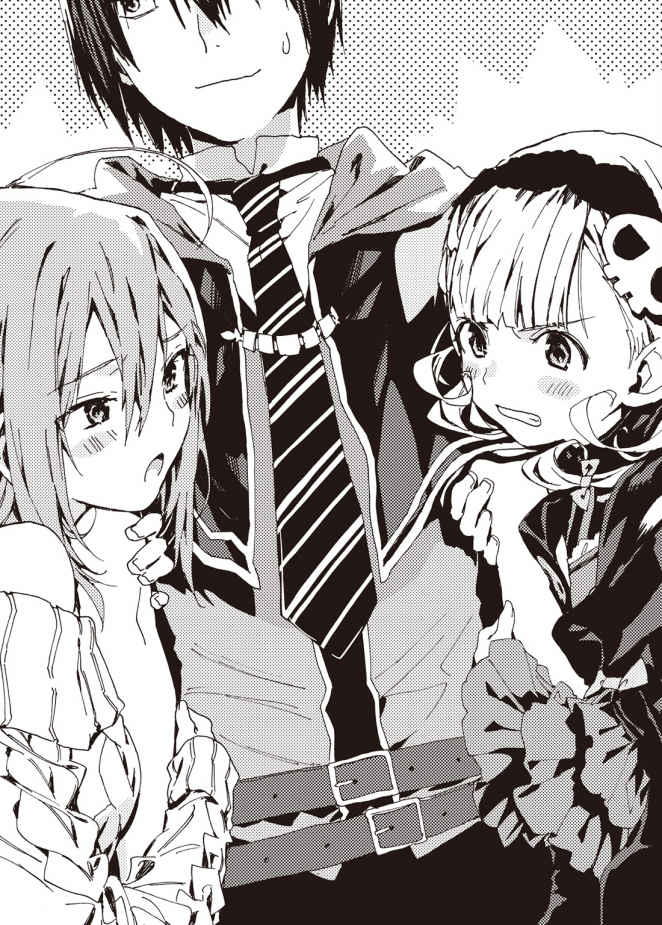
実際そのようで、ルメリアに恥ずかしがっている様子はなかった。
「へえ、似合ってるじゃねえか」
「ありがとうございます。ご主人様にそう言っていただけて、私はとても幸せです......」
よほど嬉しかったのだろう、ルメリアは垂れ目がちの瞳に涙 をにじませた。はっとして、上目遣いに翔真を見つめる。
「お席にご案内してもよろしいでしょうか？」
「おう、よろしく頼むぜ」
ルメリアに先導され、翔真たちは窓際の席に腰 かける。メニュー表を渡された翔真は、対面の席に座るシャーロットとジュナに広げて見せた。
ちなみにアイリスはというと、翔真のとなりに陣 取 っている。幽 体 なので椅 子 からすり抜 けてしまうが、お構 いなしだ。
「俺 は注文決まってるからな。お前らも好きなものを頼んでいいぜ」
「こ、こんな切 羽 詰 まった状 況 で、ご飯なんて食べられるわけないでしょっ」
「そ、そうよ。喉を通らないわ」
「だいたいあんた、その娘 に構いすぎじゃない？ ちょっとはあたしのことも見てよね」
「それとも翔真さんは、こういう服が好きなの？ わたしにプレゼントしてくれた服も、こんなデザインだったし......」
メイド服は昨日着たため、今日はゆったりとしたサマーセーターにミニスカート姿だ。すらりと伸 びた美脚が露わになっており、緩 い胸元から谷間が覗 ける。
「ま、好きか嫌 いかで言えば好きだな」
「だ、だったら、あとで着替えてあげるわっ。翔真さんが見たいなら、目の前で着替えてあげてもいいわよ？」
「だ、だったら、あたしは一 緒 にお風 呂 に入ってあげるわっ。そして添 い寝 してあげる！ あんたがそうしたいなら......は、裸で寝てあげてもいいのよ？」
張り合ってくるシャーロットに、ジュナはムッと眉をつり上げた。臆病な性格のジュナだが、おどおどしているような状況ではないのである。
「だ、だめよっ。翔真さんはわたしと一緒に寝るんだから！」
「なに勝手に決めてんのよ！ 翔真はあたしと寝るの！ あんたは床 で寝なさい！ 当然、別室の床でね！」
「ど、どうして別室なの！ そんなのあなたに有利すぎるわ！ 翔真さんはわたしと添い寝したいに決まってるわっ」
「なんでそう言い切れるのよ！」
「だ、だって、わたしのほうが胸大きいもの！」
「あんた、言ってはならないことを言ったわね。神託遊戯で覚えてなさい！ 翔真と協力して、あんたなんかぼこぼこにしてあげるわ！」
「翔真さんと組むのはわたしよ！ ま、まだわたしと組むとは決まったわけじゃないけど......今夜の添い寝でわたしを選んでくれるはずよ！」
「だから勝手に決めてんじゃないわよ！ 翔真はあたしと寝るって言ってるじゃない！ ねえ、あんたからもなにか言ってやりなさいよ！」
「そうよ。この際、はっきり言ってくれたほうがいいわ。翔真さんはどっちと寝るの？」
口論を続けるうちに声が大きくなっており、ふたりのやり取りは店中に響き渡っていた。談笑していた客たちは会話を聞き、翔真がどちらを選ぶのか気になったようだ。
シャーロットとジュナをはじめ、店中の視線が翔真に集まっている。
そんな視線を意に介 さず、翔真は告げた。
「俺はルメリアと寝るぜ」
まさかの選 択 に、ふたりは愕 然 とした様子だ。椅子を吹き飛ばすほどの勢いで席を立ち、翔真に詰め寄る。
「ど、どうしてこの娘なのっ？ わたしと寝るの、そんなに嫌 かな......？」
「どうしてあたしを選んでくれないの!? も、もしかして、匂いが気になるの......？」
「何度でも言うが、俺はシャーロットの匂いが好きだ。もちろんジュナに添い寝されたくないわけじゃねえ」
だが、と翔真はふたりの顔を見比べる。
「俺はルメリアと寝る。そして、ふたりには民家で寝てもらう」
「「民家!? 」」
「そうだ。宿 泊 先にはすでに連絡済みだからな。夕 方 頃 になったら案内するぜ」
ジュナとシャーロットは、わなわなと震えた。
「な、なにバカなこと言ってるのよ!? どうして民家に泊 まらなきゃならないわけっ!? せめて城の別室にしなさいよ！」
「そ、その通りだわっ。わたしたち、あなたにご奉 仕 しに来たのよっ！ なのにあなたのそばにいさせてくれないなんて......そんなのあんまりよ」
翔真に選ばれないかもしれないという不安な気持ちが押 し寄せてきたのか――ジュナは泣きそうな顔をした。
それでも翔真は淡 々 と告げる。
「俺に奉仕するのは同盟を結ぶためだろ？ だったら町の連中と触れあって、この自治区のことを知っておくべきだろ。実際俺はどっちと同盟を結んでもいいように、それぞれの住人と触れあった。それはふたりとも知ってるよな？」
「も、もちろん知ってるわ。少なくともムーミャの民は、あなたに好意を抱 いてるもの」
「うちの連中もあんたに感謝してるわ。でも......この町に死霊門は住んでるのかしら？」
「ガイコツなら住んでるぜ」
その情報に、ジュナが顔を明るくさせた。
「白骨族 ねっ！ それは死霊門よっ！ だったら、あたしはその白骨族の家に泊まらせてもらうわっ」
シャーロットは異種族だらけのこの町に泊まるのを不安がっているのだろう。ジュナも同じ気持ちらしく、
「巨人門はいるのかしら？」と訊 いてきた。
「巨人門はいないぜ」
「そ、そう......。いないならしょうがないわね......」
「ああ。てなわけで、ジュナとシャーロットには飛翼門 の家で寝 泊 まりしてもらうぜ」
「ど、どうしてあたしまで飛翼門の家なの!? 白骨族がいるんでしょ？ だったらそこで寝泊まりさせてよ！」
「断る。あいつは最近結婚したばかりだからな。さすがに新婚夫婦の家に泊まらせるわけにはいかねえよ」
そうして無理やり納得させた翔真は、ルメリアに注文を告げるのだった。
◆
シャーロットは激しく嫉 妬 していた。
（ほんっとありえないわ！ どうして翔真はあたしに構ってくれないのよっ！ そんなにこの女が好きなわけ!? ）
怒りと焦 りのごちゃ混ぜになった眼差しで、前方を歩く翔真とルメリアを睨みつける。
翔真はルメリアに仕事の感想をたずねつつ、夕焼けに染まる道を歩いていた。その後方――シャーロットのとなりでは、ジュナがとぼとぼと歩いている。彼 女 もシャーロットと同じ不満を抱 えているに違 いない。
彼女が不満を感じる気持ちはわかる。
翔真は昼食と夕食の両方を〈うさぎ亭〉で済ませたのだが――店にいる時間の大半を、ルメリアとかいう娘 との会話に費 やしたのだ。
自治区の存亡がかかっているのだ、シャーロットとて黙って見ていたわけではない――翔真に『あーん、してあげてもいいわよ？』とご飯を食べさせてあげることにしたのだ。が、翔真はそっけなく『あーん』を受け入れ、すぐにルメリアとの会話に戻ってしまった。
そこでシャーロットは邪 魔 者 を排 除 すべく、『あんた、仕事に戻らなくていいの？』と告げてやった。だというのにカンナとかいう獣牙門 の店員が『せっかく翔真くんが来たんだし、ゆっくりお話してていいよ』とよけいな気を利 かせてきたのだ。
おかげでシャーロットはご奉仕らしいご奉仕ができなかった。
ジュナもご奉仕できていないため同盟争いでリードされたわけではないが、全然構ってくれない翔真にシャーロットの不満は募 る一方だ。
（あたしはなにがなんでも翔真と同盟を結ばなきゃならないのよ！）
シャーロットは翔真に苛 立 っている。
だが、それ以上に彼 に対して尊敬の念を抱いていた。
なにせ〈竜 胆 翔真の帝 国 〉のあるクヌル平野は、三ヶ 月 前まで死の土地と呼ばれる荒 野 だったのだから。
それがいまでは立派な町になっている――フェガリに負けないくらいの美しい街並みが広がっているのだ。
商業区には〈うさぎ亭〉をはじめとした様々な店が軒 を連ね、どの店も繁 盛 していた。そこから少し歩いた先には住宅区が広がり、新築の家々が整然と佇 んでいる。
どうやらその向こうには農園や牧場があるらしく、〈うさぎ亭〉で提供されている肉や野菜や果物はそこで収 穫 されているらしい。
近くを流れる広大な川から用水路を引いているため水不足に悩 まされる心配はなく――圧 倒 的 な力を持つ竜胆翔真が全権代理者を務めるため、他の門派 に脅 かされる怖れもない。
まさに理想的な自治区だ。
そうした町作りに翔真が深く貢 献 していることは、道行く人々の反応を見れば一 目 瞭 然 だった。
翔真とすれ違うたび、民たちは親しみと敬意をこめて挨 拶 をしているのだ。
（こいつ、本当に慕われてるのね。......ま、気持ちはわかるけど）
たった五日滞 在 しただけなのに、翔真はフェガリに住まう人々に慕われるようになった。翔真が奴隷を解放したという話は町の外まで広がり、いずれは死霊門の人々全員が翔真に好意を持つだろう。
最初のうちは民の反感を買うだろうと思っていたが、死霊門は〈竜胆翔真の帝国〉との同盟を快 く受け入れてくれるはずだ。
同盟の下準備は整っている。だからこそ、シャーロットは一層ご奉仕に励 もうと思っていたのだ。
なのにご奉仕の機会を与えてもらえず、無理にご奉仕したとしても素 っ気 ない反応しか返してくれないのだ。
とても悦んでいるようには見えないし、このままでは同盟を結んでもらえそうにない。
かといって巨人門と同盟を結ぼうとしているようにも見えないし......いったい翔真は、なにを考えているのだろう。
「ここだ」
シャーロットが頭を悩ませていると、翔真が立ち止まった。住宅区に建つ、二階建ての家だった。
まわりには同じような構造の家々が建ち並び、買い物帰りと思 しき女性や、仕事帰りと思しき男性、泥 だらけになった子どもたちが帰宅する光景が目についた。
「ね、ねえ翔真さん？ わたしたち、本当にここに泊まるの？」
ジュナが不安げにたずねる。
「そうだ。この家に住んでる老夫婦には事情を伝えてるからな。安心して泊まってくれ」
「安心しろって言われても......あなたにご奉仕できないと、来週には巨人門は滅 んでいるかもしれないのよ？ せめて悔 いがないように、ご奉仕の機会だけでも与えてほしいわ」
「こいつの言う通りよ。次はいつご奉仕させてくれるわけ？」
「明日の朝だ。もっとも、奉仕されるかどうかはわかんねえけどな」
にやっと笑う翔真に、シャーロットとジュナは怪 訝 そうに小首を傾げる。そうしている間に翔真は〈想い出の地へと続く扉〉を詠 唱 し、
「じゃあな」
そう言い残し、ルメリアとアイリスをつれて姿を消してしまった。
「......とりあえず入るわよ」
「わ、わかったわ」
おどおどするジュナを伴 い、シャーロットは家の扉を開けた。奥 から足音が響き、翼 を生やした老 婆 が現れる。
「おやまぁ、よく来てくれたねぇ。全権代理者様から話は伺 っているよ。さあさあ、お上がり」
柔 和 な笑 みを向けられ、シャーロットはひとまず胸を撫 で下ろした。同じく、ジュナも安 堵 したようにため息をついている。
老婆につれられ、二階の部屋に案内される。ベッドしかない簡素な部屋だ。
「ふたりとも夕飯は食べたのかい？」
「ええ。食べたわ」
「わ、わたしも食べたわ」
ほとんど喉を通らなかったが、さすがにこの状況では食欲など湧 いてこない。
「そうかい。お腹 が空 いたらいつでも言っとくれ」
そう言ってきびすを返す老婆に、シャーロットは慌ててたずねる。
「ね、ねえ、もしかしてこの部屋にふたりで寝泊まりしろっての？」
一〇〇歩譲 って同室なのはいいとしても、ベッドがひとつしかないのだ。敵同士で同 衾 するのは受け入れがたい。
「全権代理者様から聞いているよ。ふたりは喧 嘩 中なんだってねぇ」
「喧嘩って......」
自治区同士の争いを喧嘩扱いされ、シャーロットはあきれて物も言えなかった。本当に、翔真は事情を説明してくれたのだろうか？
無言を肯 定 と受け取ったのか、老婆はにっこり笑う。
「だったら、仲良くなるいい機会だねぇ。私らのことは気にしなくていいから、思う存分おしゃべりするといいよ」
「おしゃべりって......」
シャーロットがあきれている間に、老婆は歩き去っていった。
「あいつ、ほんとに事情を伝えたのかしら？」
ぶつくさ言いつつベッドに腰かけると、ジュナがじっと見つめてきた。
「わたしもベッドで寝たいわ」
ムッと顔をしかめるシャーロット。
「嫌よ。あたしは疲 れてるの。こんな硬 い床で寝たら疲れが取れないでしょ」
「わたしだってへとへとよ。朝から神経を使いすぎてしまったもの。今日はゆっくり休みたいわ」
ジュナがベッドに腰かける。
シャーロットは横目で睨み、
「退 きなさいよ！」
「翔真さんと同盟を結ばないと誓 うなら、退いてあげてもいいわ」
「それじゃ本 末 転 倒 じゃないのっ！ 死霊門の地位を向上させるには、あいつの力が必要なのよ！」
「わたしだって翔真さんの助けが必要だわ！ あなたを倒して死霊門の土地を手に入れるのよ！ じゃないと巨人門は滅んじゃうわ！」
「あんたの事情なんて知ったこっちゃないわよ！ あいつと同盟を結ぶために、あたしがどんだけ苦労したと思ってんの!? 」
「あなたこそ、わたしがどれだけ恥ずかしい思いをしたか知らないくせに！」
「恥ずかしい思いならあたしだってしたわよ！」
「わたしよりはマシに決まってるわ！ わたしなんて着替えてるところを下から覗かれたのよ!? 」
「あたしなんて着替えてるとき裸 になったのよ!? なのにあたしを選ばないって......！ あいつを悦ばせる方法が本気でわからないわ！」
「そ、それはわかるわ！」
同意するようにうなずくジュナに、シャーロットは「でしょ！」とやけくそ気味に叫 ぶ。
「あたしたちの裸を見てなんとも思わないくせに、ルメリアとかいう女の顔を見ただけでへらへらしちゃってさ！ あいつ、ほんとはあたしたちと同盟を結ぶ気なんてないんじゃないの!? 」
「そ、それが本当なら酷 すぎるわ！ わたしたちにえっちなことをするだけしておいて、いざとなったら雲 隠 れするってことでしょ!? 」
「そうよ。あたしだって、できれば翔真を信じたいわ。だけど......そうなる可能性は否定できないのよ」
ジュナが不安げな眼差しを向けてくる。
「そんなの困るわっ。だって、翔真さんの協力なしで神託遊戯をするってことでしょ？ わたしに勝ち目なんてないじゃないっ」
「それはこっちの台詞 ......」
と、シャーロットはなにか閃 いたように黙りこんだ。そして、弱みを握られないように強気な態度で提案する。
「ま、あんたがどうしても神託遊戯をしたくないってんなら、誓 約 書 を破 棄 してあげてもいいけどね」
ジュナが探 るような視線を向けてきた。
「でも、あなたには巨人門と神託遊戯をしなくちゃならない事情があるんじゃないの？」
「そうよ。さっき言った通り、あたしは死霊門の地位を向上させたいの。そのためには、ほかの門派に特別視されてる自治区を倒 すのがてっとり早いわ」
「それで巨人門がやり玉に挙がったの？ わたしたち、そんなに凄くないけど......」
ジュナは急にしおらしくなる。実際、凄くないのだろう。こうしてジュナと接してみて、巨人門がいかに気弱な種族か理解した。
だが、たとえ精神的には弱くても、巨人門が特別視されていることに変わりはない。
「あんたたちは身体がすごく大きいわ。あたしたちにとっては、それだけで充 分 脅 威 的 なのよ」
「そ、そうかもしれないけど......ほかにもっと凄い自治区があるんじゃないかしら？」
あるわ、とシャーロットは語気を強めて同意する。
「〈竜胆翔真の帝国〉――おそらくここが最も特別視されてるわ」
聖神門 も怖れられているが、その自治区がどこにあるかは定かではない。それに場所を特定できたとしても――〈竜胆翔真の帝国〉より強いかと問われると、シャーロットには肯定できない。
「つ、つまりあなたは......翔真さんに神託遊戯を挑むってこと？」
ジュナが怖々とたずねてきた。
「あんたとの神託遊戯をなかったことにするなら、そうなるわ。......ところで、あんたは土地が欲 しいのよね？」
ジュナはすかさずうなずいた。
「土地と資源が欲しいわっ。もしかして......くれるの？」
「やるわけないじゃない」
シャーロットが即 座 に否定すると、ジュナはがっかりしたようにうつむいてしまった。
「でも、土地と資源を手に入れる方法はあるわ」
ジュナはがばっと顔を上げる。
「ど、どうするの？」
もの凄い食いつきを見せるジュナに、シャーロットは声を潜 めて告げた。
「翔真を倒すのよ」
ジュナの顔からさぁーっと血の気が引いていく。
竜胆翔真を敵にまわす――それがどれほど怖 ろしいことか、同 棲 期間中に様々な魔札を見せつけられ、嫌 というほど思い知ったのだろう。
「な、なに怖ろしいこと言ってるの？ そんなことできるわけないわっ。だって、相手はあの翔真さんなのよ？ それとも、あなたが協力してくれるって言うの？」
「そう言ってるのよ」
ジュナは面 食 らったように黙りこみ、
「......あなたは、それでいいの？ たしかに勝てば死霊門の地位は向上するけど......でも、負ければなにもかもを奪 われてしまうのよ？」
それに、とジュナは目を伏 せる。
「翔真さんは、食 糧 問題を解決してくれたわ。巨人門が救われるのは嬉しいけど......翔真さんを裏切るようなこと、わたしにはできないわ」
うっ、とシャーロットは言葉に詰まる。
「あ、あたしだって同じ気持ちよ。あいつは奴 隷 にされた同胞を救ってくれたもの。恩を仇 で返すようなまね、あたしだってしたくないわよ」
「じゃあ、どうするの？」
「あたしとしては翔真に勝てればそれで充 分 なのよ。それだけで死霊門はほかの門派から一目置かれる存在になるもの。......でも、あなたは土地や資源が必要なんでしょ？」
「も、もちろん欲しいけど......根こそぎ奪う必要はないわ」
「だったら、こういうのはどう？ あたしたちが勝っても〈竜胆翔真の帝国〉に害が及 ばないようにするのよ」
ジュナは考えるように黙りこみ、ややあって決心したように顔を上げた。
「それならいいわ。でも、問題はどうやって勝つかよ。なにか策はあるの？」
シャーロットは自信ありげにうなずく。
「策ならあるわ。先日、あいつと獣牙門の男たちが神託遊戯をしたのよ。もちろん翔真が勝ったんだけど――どういうふうに勝ったのか聞いて、ある作戦が閃いたの」
「ど、どんな作戦なの？」
ごくりと喉を鳴らすジュナに、シャーロットは老婆に盗 み聞きされていないか確かめたあと、声を潜めて必勝の策を告げるのだった。
久々にルメリアとの入浴を満 喫 した翔真は、ベッドに腰かけて一息ついていた。冷水の魔札 をルメリアに渡 し、自身も喉を潤 したあと、アイリスを見上げる。
「お前も一緒に寝 るか？」
ぽんとベッドを叩いて誘 うと、アイリスはきょとんとした。
「わしと一緒に寝て、そなたは楽しいのか？」
入浴だと芸術品のように美しい裸 体 を目にすることができるが、幽体のアイリスと同じベッドで寝ても翔真に楽しめる要素はない――アイリスはそう言いたいのだ。
「可愛 い嫁 と一緒に寝るんだ。楽しいに決まってんだろ」
「じゃ、じゃが、起きたときベッドに埋まるわしを見て、びっくりするのではないか？ 心臓が止まったりしないじゃろうか？」
心 配 性 なアイリスに、翔真は微 苦 笑 する。
「その程度で止まる心臓なら、アストラルに召 喚 された時点で俺は死んでるぜ。いままで生きてきたなかで、あれが一番の衝 撃 だったからな」
「......では、となりで寝てもよいのじゃな？」
おどおどとたずねられ、翔真はうなずいた。
「不安がってないで、早くこっちに来いよ」
「うむっ！ わしも翔真のとなりがいいのじゃ！」
ぱあっと顔を輝 かせ、飛びつくように翔真のとなりへ移動する。勢いあまってベッドのなかに埋もれてしまうが、すぐに浮き出てきた。
翔真にすり寄り、うきうきとした口調で言う。
「なんだか今日のそなたは優 しいのぅ。もしかして、わしの魅 力 に気づいたとか？」
「そうじゃねえよ。ただ、最近相手してやれなかったからな」
最近翔真はシャーロットとジュナに構ってばかりで、アイリスの相手を疎 かにしていた。視界の端 には寂 しそうなアイリスの顔がちらついていたし――夫として、嫁の悲しむ顔は見たくないのだ。
一緒に寝てやれば、少しは寂しさも和らぐはずだ。
「正直、死ぬほど寂しかったのじゃ......。でも、わしは気にしてないのじゃぞ？ なにせそなたは、わしの夢を叶 えるために、あのふたりにご奉仕させておったのじゃからな」
アイリスの夢は、アストラルを異種族同士が仲良く暮らせる平和な世界にすることだ。いまは互 いに差別意識を持ち、いがみあっているが、協力してなにかを成し遂 げれば必ず仲良くなれる。
その証 拠 に、翔真は騎士門 や獣牙門 と友好関係を築くことに成功した。翔真を架 け橋 に、騎士門と獣牙門も友好関係を築けている。
そんな翔真の次なる狙 いは、死霊門 と巨人門 だ。いまのところシャーロットとジュナは敵対関係にあるが、それも時間の問題だと翔真は考えている。
「じきにあいつらは手を組むだろうぜ。そして俺を倒しに来るはずだ。そのためにエロい奉仕をさせたんだからな」
協力してなにかを成し遂げることで仲良くなれる。
そう信じている翔真は、ふたりに共通の敵と戦ってもらうことにした。その共通の敵というのが、ほかならぬ翔真なのである。
結果はどうあれ、共 闘 すれば仲良くなれるはずなのだ。
「じゃが、そなたの計画通りに動くじゃろうか？ もしかするとそなたの言いつけ通り、最後まで奉仕を続けるかもしれぬのじゃ」
「心配いらねえよ。ふたりには散々エロい奉仕をさせたし、今日は冷たく接したからな。俺への不満は爆発寸前だろうし、いまごろは俺の愚 痴 で盛り上がってるところだろうぜ」
互いに苦難 を乗り越え、ともに敵地 にいるふたりは、まさしく戦友と呼べる間 柄 。愚痴を言いあっているうちに友情が芽生え、心理的に戦いづらくなるはずだ。その結果ふたりは神託遊戯 の約束を取り下げ、協力して『共通の敵』を倒そうと企 むに違いない。
なにせ共通の敵である翔真を倒せば、ふたりは悩みから解放される――死霊門は異種族から一目置かれる存在になり、巨人門は土地と資源を手に入れることができるのだから。
「昨日の敵は今日の友って言うしな。互いに協力して共通の敵と戦うことで、あいつらは仲良くなれるってわけだ」
「死霊門と巨人門の争いを平和的に収めるために、あえて憎 まれ役 を買うとは......ほんと、そなたは優しいのぅ」
「憎まれ役と言えば聞こえが悪いが、役得はあるからな。美女ふたりに奉仕してもらえて、俺は大満足だぜ。そのうえ、ふたりに勝てばＳＳＳランク魔札が手に入るしな」
エッチな奉仕をさせて死霊門と巨人門の仲を改善し、さらに三枚のＳＳＳランク魔札が手に入る。まさに一石二鳥の作戦だ。
「ジュナが同盟を持ちかけてきた一 瞬 のうちに、ここまでの作戦を思いつくとはのぅ......。ほんと、そなたは頭の回転が速すぎるのじゃ」
「そんな大層な作戦じゃねえよ。どっちか一方と同盟を結ぶわけにはいかねえことくらい、最初からわかってただろ。だったら両方を敵にまわすしかないじゃねえか」
アイリスの夢を叶えるには、すべての門派 に仲良くしてもらわなければならないのだ。一方と同盟を結んでしまうと選ばれなかったほうは翔真を恨 むだろう。かといって争いに無 干 渉 だと死霊門と巨人門のどちらかが神託遊戯で敗れることになる。敗者は勝者を憎むだろうし、手を貸さなかった翔真のことも恨むだろう。
つまり翔真には『ひとまず両方と敵対する』という選 択 肢 しか残されていなかったのだ。
「もちろん、最終的には俺もふたりと仲良くなってみせるがな」
同盟話を拒 否 される可能性もあるが――そうならないよう、翔真は交 渉 するつもりだ。同盟を結ぶための交 渉 材料もちゃんと用意してある。
要するに、いまのところは翔真の筋書き通りに進んでいるのである。
「じゃが翔真よ。いまさらこんなことを訊くのもどうかと思うが......あのふたりを相手に勝算はあるのか？」
本当にいまさらな質問だった。
とはいえアイリスが不安に感じる気持ちもわかる。グズマ一派やインディ一派のように複数の魔札使いを同時に相手取ることはあったが、複数の全権代理者 をまとめて相手したことはないのだから。
「安心しろ。あいつらは魔札の知識がなさすぎるからな。そんな奴 らの考える作戦なんてお見通しだ」
「あやつらが神託遊戯の経験に乏 しいことはわかるが、なぜ魔札の知識がないとわかるのじゃ？」
「はじめて会った日、ジュナは〈密談空間 〉の効果を知らなかったし、シャーロットは〈千里眼 〉の効果を知らなかったからな。知識はないけど魔札は大量に持ってる奴の作戦なんか、ひとつしかないぜ」
「ふむ。それはなんなのじゃ？」
「それは――」
と、翔真が説明を口にしかけたとき――バン！ と勢いよく窓が開け放たれ、そこからシャーロットとジュナが乗りこんできた。
「よォ、こんな夜中になんの用だ？ 俺に奉仕でもしに来たのか？」
ベッドから腰を浮 かしてたずねると、シャーロットが目つきを鋭 くさせた。
「違うわ！ あんたに言いたいことがあって来たのよ！」
「へえ。なんだ？」
その先を促 すと、シャーロットはジュナを一 瞥 した。
ジュナがうなずいたのを見て、シャーロットは翔真に向きなおる。そして、
「あたしたちは、あんたに神託遊戯を挑 みにきたのよ！」
「なっ、なんじゃとぉ!? なぜそんなことをするのじゃあ！」
アイリスが白々しく叫ぶ。うろたえる演技をされ、翔真はため息をついた。
いがみあっていた死霊門と巨人門が結 託 し、翔真に神託遊戯を挑みにきた――なるほど、たしかに翔真たちにとってはうろたえるべきシーンだが、さすがに演技過 剰 すぎる。
目配せでアドリブは控 えるように告げると――察したようで、アイリスはしゅんとした。
「俺に神託遊戯を挑みにきたってこたぁ、同盟は諦 めたってことか？」
「そうよ。神託遊戯の誓約書を破棄したの。お互いに同意すれば、約束はなかったことにできるもの」
「で、俺と戦うことにしたってわけか。お前らはそれでいいのか？ あの奉仕した日々が無 駄 になっちまうんだぜ」
「あたしがあんたにご奉仕したのは、死霊門の地位を向上させるためよ。あんたを倒せば死霊門はほかの種族に一目置かれる存在になるわ！」
「ジュナはそれでいいのか？」
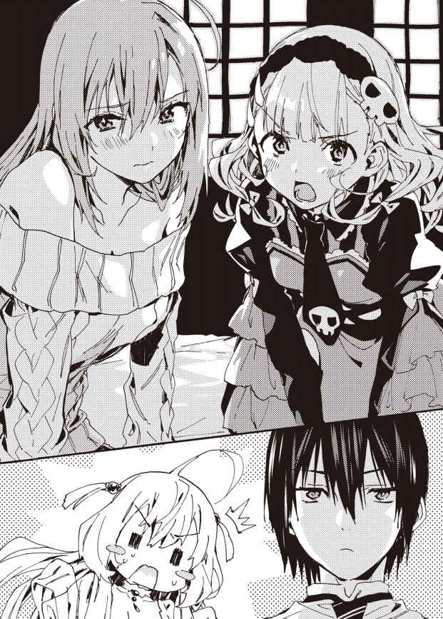
じっと見つめると、ジュナは目をそらした。彼女は気弱な性格だが、それでも五日間の奉仕を経て、翔真となら普 通 に接することができるようになった。
だというのに目をそらしたということは、不安ではなく、罪悪感を抱いているのだろう。
「わたしは、翔真さんの持ってる土地と資源がほしいわ」
「俺 を倒して、根こそぎ奪い取 るってわけか」
「ち、違うわっ」
ジュナは慌 てたように声を張り上げる。
「どう違うんだ？」
「巨人門が生き残るのに必要な分だけもらうのよ。根こそぎはもらわないわ。だ、だって、あなたにはたくさんえっちなことをされたけど......助けてもらったもの」
「ビッグビーンズのことを言ってるなら、あれは俺が食いたかっただけだぜ。感謝されるようなことじゃねえよ」
「だ、だとしても、結果的には救われたわ。だから、根こそぎは奪わないの」
確固たる意思を持っているようだ。ジュナは譲らなかった。
「そっか」
と、翔真は真顔で応 えつつも、内心では笑みを浮かべていた。少なくとも、ジュナとは神託遊戯の結果にかかわらず友好関係を築けそうである。
「ま、根こそぎだろうと半分だろうと、俺に勝たなきゃ話にならねえんだがな」
「勝つわ！」
シャーロットが叫んだ。ジュナの不安を取り払おうとしているのか、自信に満ちた声を張り上げる。
「だって、必勝の作戦を思いついちゃったんだもの！ いくらあんたが強くても、あたしたちには勝てないわ！」
「そいつは楽しみだ。つっても、お前らのルールが成立するかどうかは俺 次 第 だがな」
神託遊戯の新設ルールは、話しあいの末に決まるのだ。互いに納 得 しなければルールは成立せず、神託遊戯はいつまで経 っても始まらない。
「そ、それくらい知ってるわよ！ だから、ルールを成立させるための作戦も考えてきたのよ！」
シャーロットがジュナを一瞥する。
ジュナはうなずき、魔導指輪 をかざしてみせた。
「わたしたちのルールを受け入れてくれたら、その時点であなたにわたしのＳＳＳランク魔札を譲るわ」
「あんた、ＳＳＳランク魔札が欲しいんでしょ？ だったらこっちのルールを受け入れたほうがいいわよ！」
翔真はあきれたようにため息をつく。
「たしかにＳＳＳランク魔札は欲しいが......言ったはずだぜ？ そいつは神託遊戯で奪い取るってな」
シャーロットがうろたえたようにあとずさる。
「た、たしかに言ってたわね......」
「だろ？ それに敗者は勝者の命令を聞かなきゃならねえんだ。いまこの場でもらっても、奪い取られちゃ意味がねえだろ」
もっとも、翔真はどんなルールだろうと負けるつもりなどないのだが。
「だ、だとしても、あたしは必ずこのルールを通してみせるわ！」
「それで、あなたはどうするの？ わたしたちと神託遊戯をするの？ それとも......」
ジュナはその先の言葉を口にしなかった。怖ろしくて口にできないのだ。
翔真に神託遊戯を断られれば、死霊門と巨人門は振 り出 しに戻 ってしまうのだから。
特に問題なのが巨人門だ。死霊門は崩 壊 の危機に陥 っているわけではないが、巨人門はそうではない。ビッグビーンズで一時的に食 糧 難 を凌 いだものの根本的な解決にはなっていないのだ。
まあ、翔真に神託遊戯を断るつもりはないのだが。
「いいぜ。その勝負、受けて立とうじゃねえか！」
いまこの瞬 間 、神託遊戯の合意がなされた。
話がまとまった直後、寝 室 に真 紅 の魔 法 陣 が浮かび、紅 い輝きが放たれる。室内を紅く染めていた輝きは次 第 に収まっていき――完全に消えたとき、そこには小 柄 な娘が佇んでいた。
繊 細 な金 髪 をツインテールにまとめ、幼い顔立ちをした彼女は――審 判 精 霊 のニンファである。
子どもは寝る時間だ。いつも翔真の審判を務めてくれるニンファだが、見た目は幼女だ。ひょっとするとべつの審判が来るかもしれないと思っていたが、今回も彼女がジャッジをしてくれるようだ。
「夜遅 くに悪いな」
「朝も夜も関係ないのです！ 神託遊戯の場に駆けつける、それが精霊なのですよぅ！」
「仕事熱心だな。感心したぜ」
ぱあっと顔を輝かせるニンファ。
「うわあっ、なんだかやる気が漲 ってきたのです！ 今日もしっかり審判としての責務を果たすのですよぅ！」
気合いに満ちた叫びを上げ、ニンファはそれぞれの顔を見比べる。
「ルールは決まってるのですか？」
「翔真はまだだけど、あたしは決めてるわ。......この場で発表していいのかしら？」
「もしかして、神託遊戯ははじめてです？」
「らしいぜ」
と、翔真が代弁する。
「はじめてなのに俺と戦いたいんだとさ」
するとニンファは不安そうな顔をした。
じっとシャーロットを見上げ、
「審判は公平なジャッジを心がけてるのです！ 自分の仕事に誇 りを持ってるのです！ 気にくわないことがあっても、ぜったいに不正を疑ったりしないでほしいのです！」
ウィード一派と神託遊戯をしたときのように翔真に肩 入 れしていると疑われ、怒鳴られるのは嫌 なのだろう。ニンファの訴 えに、シャーロットは力強くうなずいた。
「疑ったりしないと約束するわ」
「わ、わたしも誓うわ」
ニンファは安心したように表情を緩めた。
「それじゃあルールを聞かせてほしいのです！」
「あたしのルールはこの三つよ！」
シャーロットは好戦的な眼 差 しを翔真に向け、ルールを語った。
【１】シャーロットは神託遊戯にジュナをつれていく。
【２】竜胆翔真チームはオリジナル魔札を使うことができない。
【３】竜胆翔真チームはダメージ一〇を超 える攻 撃 魔札を使うことができない。
シャーロットの作戦は竜胆翔真の弱体化に特化していた。それと同時にアイリス対策も用意している。これではウィード一派に使った作戦は通じないだろう。
「わしは活 躍 できそうにないのぅ......」
うなだれるアイリスを見て気をよくしたのか、シャーロットが勝ち誇るような顔をする。
「次はあんたがルールを発表する番よ！ といっても、いきなり勝負をしかけたわけだし、明日の朝くらいまでなら待ってあげてもいいわ」
「その必要はねえよ。俺はすでにルールを決めてるからな」
「い、いまこっちのルールを発表したばかりなのにもう決めたわけ!? 」
驚 愕 した様子のシャーロットに、翔真は平然と告げる。
「まあな。俺のルールはこの三つだ」
【１】竜胆翔真は神託遊戯にアイリスをつれていく。
【２】竜胆翔真を倒せばシャーロットチームの勝ちとなる。
【３】シャーロットチームがバトルフィールドに持ちこめる魔札は各自五枚まで。
翔真がルール説明を終えた途 端 、シャーロットとジュナはうろたえた。
ふたりともルールと一 緒 にデッキまで考えていたのだろう。ルール【３】がある以上、デッキを崩さなければならないのだ。
「このルールで問題ないです？」
ニンファが確 認 を取ってくる。
「俺はこれでいいぜ。お前らはどうだ？ 話しあってルールを決めるか？」
シャーロットが上 目 遣 いに翔真を見つめ、探りを入れるような口調で言う。
「......あんたのルールを受け入れれば、あたしたちのルールも受け入れるのよね？」
「そうだ」
「だったら、これで問題ないわ。あんたも、それでいいわよね？」
ジュナがうなずいたのを見て、シャーロットはあらためて「問題ないわ」と口にする。
「それでは神託遊戯の開始日時を教えてほしいのです！ みなさんまだデッキできてないですよね？」
「そうね。だけど減らすだけだし、そんなに時間はかからないわ。一五分もあれば充分よ。でも、あんたはそれじゃ足りないわよね？」
「俺もそれでいいぜ」
「た、たったの一五分でいいのっ!? あんた、大量の魔札を持ってるでしょ！ そこから一五分で絞りきれるわけ!? 」
過剰なリアクションだが、先ほどのアイリスと違 い、シャーロットは本気で驚 いているようだ。
「問題ないって言ったろ。じゃ、俺はここでデッキを作るからな。お前らは好きな部屋を使っていいぜ」
「そうさせてもらうわ。......〈千里眼〉とかいう魔札で覗 き見 したら許さないわよ」
「安心しろ。俺は不正をしないし、ニンファがそれを許さねえからな」
「不正は見 逃 さないのです！ バトルフィールドでは安心して審判を任せてほしいのですよぅ！」
ニンファはどこか誇らしげにそう叫ぶのだった。
◆
バトルフィールドは大草原だった。丘 陵 のない草地が地平線の彼方 まで続き、穏 やかな風に流れる雲が大地に影 を落としている――。これから戦場になるとは思えない、平和な光景が広がっていた。
そんなバトルフィールドに転送された翔真は、まっすぐにジュナを見つめていた。一五メートルほど向こうに佇むジュナは、巨人門としてあるべき姿に戻っている。この場所に転送されたことで、〈対等の門〉の効果が切れたのだ。
翔真の与 えた服を纏 ったジュナは、がちがちにこわばった顔をしている。そんなジュナに、翔真はにやっと笑って告げた。
「最高の景色だぜ」
手でひさしを作り、ジュナのスカートを覗きこむ。きょとんとしていたジュナだったが、下着を覗かれていることに気づいた途端、かあっと顔を赤らめ、スカートを手で押 さえた。
「こ、こんなときになにをしてるのっ？ 審判さん！ わたし、着 替 えたいわ」
「デッキに衣装の魔札はあるのです？」
「さ、さすがにデッキには入ってないわ。だって、魔札は五枚しか持ちこめないのよ？」
「じゃあだめなのです！」
べつに意地悪をしているわけではない。バトルフィールドでは、デッキ外の魔札を使うことができないのだ。
「じっくり見させてもらうぜ」
「み、見ちゃだめよ......」
ジュナはスカートを押さえたまま、じりじりと後退する。
「ちょっと、どこ行くつもりよ！」
シャーロットに呼び止められ、ジュナは涙 目 になる。
「だ、だって......恥 ずかしいわ」
「負けたらもっと恥ずかしいことされるのよ！ しゃきっとしなさい、しゃきっと！」
「......わかったわ。恥ずかしいけど......負けるわけにはいかないものね」
どうやら緊 張 は吹 き飛 んだようだ。ジュナは涙を拭 い、凜 とした顔で翔真を見下ろしてきた。
「んじゃ、さっそく始めるとするか。ニンファ、頼 むぜ」
ジュナがいるからだろうか。いつもより高いところに浮かんでいたニンファは、力強くうなずいた。
「それではルールの最終確認をするのです！」
喉 が張り裂 けるのではないかと心配になるほどの声量で、新設されたルールを語る。
【１】竜胆翔真は神託遊戯にアイリスをつれていく。
【２】竜胆翔真を倒せばシャーロットチームの勝ちとなる。
【３】シャーロットチームがバトルフィールドに持ちこめる魔札は各自五枚まで。
【４】シャーロットは神託遊戯にジュナをつれていく。
【５】竜胆翔真チームはオリジナル魔札を使うことができない。
【６】竜胆翔真チームはダメージ一〇を超える攻撃魔札を使うことができない。
「今回新設されたルールは以上の六つなのです！ 間 違 いないですね!? 」
各 々 の顔を見まわすニンファに、翔真たちはうなずいた。
それを確認し、ニンファは大きく息を吸いこむ。
そして――
「それでは――神託遊戯スタートなのです!! 」
声を張り上げ、バトルの邪 魔 にならないようにパッと姿を消した。
その瞬間だ。
「〈雷帝の裁き 〉！」「〈鏡面世界 〉！」
ジュナと翔真はほとんど同時に魔札を詠 唱 した。ジュナの頭上に真紅の魔法陣が描 かれ、その中心部に強 烈 な閃 光 が発生――瞬間的に蓄 積 された光源が稲 妻 として放たれる。
狙いは翔真だ。
だが、翔真は〈鏡面世界〉を詠唱していた。翔真の眼前に巨 大 な鏡が生まれる。対象に一〇〇〇ダメージを与える稲妻は鏡に飲みこまれ――鏡面から雷 撃 が飛び出した。
狙いはジュナだ。
「ぇ――」
反旗を翻 した雷撃にジュナは顔を恐 怖 に歪 ませる――轟 音 とともに閃光がまき散らされ、その巨 体 は光に飲まれて見えなくなる。
閃光が収まったとき、そこにジュナの姿はなかった。残されたのは残 煙 と、草が燃える焦 げ臭 い匂 いだけだった。
一 般 に流通している魔札のなかで最強の威 力 を誇る〈雷帝の裁き〉――その一 撃 を受け、ジュナのライフは一瞬で〇になったのだ。
「ど、どうしていなくなっちゃったのよ!? 」
シャーロットは愕 然 としている。神託遊戯が始まってわずか五秒で相棒が消え、多大なショックを受けている様子だ。
「ライフが〇になったから隔 離 空間に飛ばされたんだ」
「じゃ、じゃあどうしてあんたは隔離空間に飛ばされてないのよ！ あいつが使ったのは威力一〇〇〇の魔札なのよ!? 」
「そんなもん、攻 撃 を跳 ね返す魔札を使ったからに決まってるだろ」
「攻撃を跳ね返す魔札!? 」
「そうだが、いまのどこに驚く要素があるんだ？ まさか反射の魔札が存在することすら知らなかったのか？」
「そ、それくらい知ってるわ！ で、でも、それってどんな攻撃でも反射できるわけ？ あたしが持ってるのは、威力五〇〇以下の攻撃しか跳ね返せないんだけど......」
「ま、たしかに条件つきのものが大半だな。けど、さっき俺が使った〈鏡面世界〉に跳ね返せない攻撃はねえんだよ。つっても、無敵ってわけじゃねえぜ？ 打ち消し系の魔札は反射できねえしな。だから強力な魔札を使うときは、念のため手 札 に打ち消し系の魔札を忍 ばせておくのが定 石 だ」
感心したように翔真の話を聞いていたシャーロットは、はっと我に返った様子だ。
「で、でも、たとえ打ち消す魔札を持ってても使う暇 はなかったわ！ あんた、ジュナが魔札を唱えたのと同時に〈鏡面世界〉を使ってたじゃない！ どうしてそんなに早く使うことができたのよ！」
「初 っ端 から威力が高い魔札を使うことがわかっていたからだ」
「ど、どうしてそんな予想ができるわけ!? ま、まさか......」
シャーロットはその先を口にしなかった。翔真が不正をしたのではないかと疑っているのだろうが――神託遊戯が始まる前、不正を疑わないと誓 ったのだ。
きちんと約束を守るシャーロットに、翔真は理由を話して聞かせる。
「お前らの使う魔札がわかったのは、ふたりが神託遊戯の初心者で、しかも魔札の知識に乏しいからだ」
カードゲームの初心者は『大ダメージを与えるカードは強い』と思いがちだ。
翔真も昔はそう思いこんでいたし、デッキには威力の高い魔札しか入れていなかった。敦 盛 と戦ううちに戦略や戦術の大事さを学んだが、最初は火力ゴリ押しで戦っていたのだ。
シャーロットとジュナは、かつての翔真と同じ思考に陥 っていたのである。おまけに、翔真はルールでデッキに枚数制限を設けたのだ。少ない手札で翔真を倒 すため、ふたりは大ダメージの魔札のみをバトルフィールドに持ちこんだのだ。
「威力制限じゃなくランク制限だったら、まだ望みはあったんだがな」
ウィード一派のように『Ｅランクしか使えない』とのルールにしておけば、いまとは違う状 況 になっていただろう。だが、シャーロットはそうしなかった。そして翔真は、彼 女 がそうしないことを知っていた。
なぜならシャーロットは魔札の知識に乏しいからだ。
シャーロットとジュナはＥランク魔札の効果を把 握 しきれていないのである。Ｅランクとはいえ強力な効果のものがあるかもしれないと不安に感じ、『威力制限』にしたのだ。
つまるところ、翔真はシャーロットチームの考えるルールとデッキを把握していた――戦う前からいまのような状況になることがわかっていたのである。
この戦い、翔真の負けは万に一つもありえないのだ。
「どうした。このままだと時間切れになっちまうぜ？ そしたら俺の判定勝ちだ。なにせそっちはひとり消えてるんだからな」
黙 りこんでいるシャーロットを、翔真は煽 った。しかし彼女は行動を起こそうとしない。彼女の手札には大ダメージを与える攻撃魔札しかないのである。反射を怖れ、なにもできないのだ。
（またこの状況か。ミストは潔 く散って、フレイクは命 乞 いをしてきたっけな。できれば、シャーロットにはミストと同じ選 択 をしてほしいところだが......）
シャーロットの出方をうかがっていると、彼女は顔を上げた。なにかを悟 ったような、落ち着いた表情をしている。
その顔のまま翔真のもとへ歩み寄り、
「ごめんなさい！」
五メートルほどに距離を縮めたところ、深々と頭を下げてきた。
シャーロットは命乞いを選択したというわけか。フレイクと同じ選択を取られ、翔真は少しがっかりする。
「言っておくが、謝 ったところで結果は変わらないぜ？」
「わかってるわ。なにをやっても反射されるんじゃ、あたしに勝ち目なんてない。だから、時間ぎりぎりまであんたを説得することにしたの」
「説得？」
シャーロットはうなずき、真 剣 そのものの眼差しを向けてくる。
「お願いよ。ジュナを許してあげて」
「......ジュナを？」
「そうよ。だって、ジュナを神託遊戯に誘ったのはあたしだもの。必勝の作戦があるって約束したのよ。だからあの娘 は誘いに乗ったの。......でも、結果はこの有様よ」
チームバトルだというのに、シャーロットは自分ひとりのせいで危機的状況に陥ったと思いこんでいるようだ。
本当に責任感が強い娘である。父が貶 めた死霊門の地位を向上させるという夢を聞いたときから責任感が強い娘だと思っていたが、まさかこれほどまでとは......。
「ジュナは本当に切 羽 詰 まってるの。ジュナを......巨人門を救えるのはあんただけなのよ。だから、命令はあたしだけに下してちょうだい。そしてこの戦いが終わったら、ジュナと同盟を結んでちょうだい」
「断るぜ」
翔真は即 答 した。だが、シャーロットは食い下がる。
「そ、そこをなんとか......お願いよ......」
「何度頼まれても答えは同じだ」
きっぱりと告げ、翔真は微 笑 する。
「たしかにお前が誘わなかったら、ジュナは俺と戦おうとか夢にも思わなかっただろうぜ。けどな、ジュナは自分の意思で俺との神託遊戯を選んだんだ。きっかけを作ったのはお前だけど、だからって責任を感じることじゃねえだろ」
「で、でも、負けたのはあたしの作戦がお粗 末 だったからよ」
「それは認めるが、どんな作戦を立てようと、けっきょくは俺が勝つんだ。この状況は、ふたりの弱さが招いたことなんだよ。つまり連帯責任ってわけだ。自分だけが悪いとか、そういうふうに考えるこたぁねえさ」
シャーロットは不安そうに瞳 を揺 らし、たどたどしい口調でたずねてくる。
「あいつ、あたしのこと許してくれるかしら？」
「許すもなにも、そもそも恨んじゃいないだろうぜ。けどまあ、勝負を放 棄 したとか聞いたらマジギレするだろうがな」
「......っ」
シャーロットは、はっと目を見開いた。
泣きそうな顔に、じわじわと笑 みが広がっていく。
「......そうね。その通りよっ。どうなるかはやってみないとわからないわっ！ あんたの手札に反射の魔札があるかどうかもわからないのに諦 めるなんてどうかしてるわ！」
シャーロットは吹っ切 れたように叫 んだ。清 々 しい笑みを浮かべ、詠唱する。
「〈生命弾 〉！」
シャーロットの一〇メートルほど頭上に漆 黒 の球体が生まれた。
ソフトボールほどの大きさのそれは、通常の状態ではダメージ一〇の攻撃魔札だ。だが、自身のライフポイントを削 ることで威力を上げることができる。
「うぐっ」
シャーロットは苦しげにうめいた。ライフポイントを攻撃力に充 てているのだ。バトルフィールドでは肉体的損傷は起こりえないが、それでも痛みは感じるのである。
「まだまだっ！」
身体からもれる黒いオーラが、球体に吸いこまれていく。そしてシャーロットのライフポイントが残り一〇になったとき、球体は直径一メートルほどにまで成長を遂げていた。
シャーロットの頭上にて黒々と輝 いていた球体が――威力一〇〇〇の黒い弾 が、隕 石 の如 く降 ってくる。
「〈血染めの真槍 〉！ 〈舞い踊る千の刃 〉！ 〈灼熱遊戯 〉！ 〈土葬させる槌 〉！」
さらに魔札の詠唱を続けるシャーロット。手札を使い切るその様は、まさに全力投球だ。真紅の魔法陣がいくつも生まれ――
しかし、それらの攻撃が翔真に届くことはなかった。
シャーロットが連続詠唱する一方で、翔真はしっかりと〈鏡面世界〉を唱えていたのだ。
鏡面に飲みこまれ、勢いをそのままに吐き出された黒い球体がシャーロットに牙 を剥き――
「シャーロットチーム戦闘不能！ よってこの勝負、竜胆翔真チームの勝利なのです！」
試合終 了 を告げるニンファの声が、あたり一帯に響 き渡 ったのであった。
◆
神託遊戯が終わると、翔真をはじめとする参加者はバトルフィールドから城の庭園へと転送された。
本来は元居た場所へ送り返されるが、ジュナは巨体に戻っている。部屋に戻ると天 井 に頭をぶつけてしまうため、翔真がニンファに庭園へ転送するよう頼んだのだ。
快 く引き受け、ニンファは参加者全員を城の庭園に送り届けてくれたのである。
「シャーロットチームは三つのルールを創 ったのです！ よって翔真さんは三つの命令を下せるのです！」
ニンファの言葉を、シャーロットは黙って聞いていた。そのとなりでは、ジュナがガタガタと震 えている。
そんなジュナを、翔真は見 据 えた。
「一つ目の命令だ。――ジュナ、お前が持ってるＳＳＳランク魔札をすべて俺によこせ」
命令に、ジュナの震えが収まった。
「そ、そんな命令でいいの？」
「奴 隷 にしてほしかったのか？」
ジュナはぶんぶんと首を振る。
「そ、そんなこと思ってない！ 魔札でよければ喜んで渡すわ！」
身を屈 め、翔真に右手を向けてくる。
そこにはめられた銀の輪っかに自分のそれを近づけると、互いの魔導指輪が淡 い光に包まれる。
「......よし。たしかに受け取ったぜ」
光が消えたのを確認した翔真は、シャーロットへ視線を移す。
「続いて二つ目の命令だ。――シャーロット、お前が持ってるＳＳＳランク魔札をすべて俺によこせ」
「い、いいわよ」
シャーロットがこちらへ歩み寄り、右手を差し出してきた。震えるその手に魔導指輪を近づけ......魔札の受け取りが完了する。
これで死霊門と巨人門に存在するＳＳＳランク魔札はすべて翔真の手に渡った。
残る魔札は四二枚。それを手に入れたとき、翔真は魔札コンプリートを達成する――〈神の間〉へと赴 き、アイリスの身体を元通りにできるのだ。
「さて。俺はあと一つ命令を下せるわけだが......」
言いつつふたりの顔を見比べると、シャーロットが決意の眼差しを向けてきた。
「その命令は、あたしに使いなさい」
「えっ？ な、なにを言ってるの......？」
シャーロットに庇 われた意味がわからないのだろう。戸 惑 うジュナに、シャーロットは真顔で告げる。
「負けた責任を取ってるだけよ」
「べ、べつにあなたのせいで負けたわけじゃないわっ！」
真剣な顔で叫ばれ、シャーロットはうろたえた様子だ。
「だ、だけど、あたしが誘わなかったらこんなことにはならなかったでしょ？」
「たしかにあなたに誘われなければ、わたしは翔真さんと戦おうなんて思わなかったわ。だけど、わたしはわたしの意思で神託遊戯をするって決めたの。あなたが責任を取ることではないわ」
「で、でも、きっかけを作ったのはあたしよ。だったら、あたしが責任を取るべきだわ」
シャーロットは食い下がる。
ジュナへの罪悪感は根強いようだ。
「庇 いあってるところ悪いが、どっちに命令するかを決めるのは俺だぜ？」
「......あんたは、どっちに命令するの？」
「ジュナだ」
「ど、どうしてジュナなのよ！」
シャーロットが抗 議 の声を上げる。
「奴隷にするならあたしのほうがいいわ！ だって、ジュナは身体が大きいじゃない！ ご、ご奉 仕 中に踏 み潰 されるかもしれないのよ!? だ、だから......」
翔真はため息をついた。
「早とちりするな。俺がいつ、ジュナを奴隷にすると言った？」
「えっ？ し、しないの？」
おどおどとたずねられ、翔真は優 しく笑いかける。
「しないに決まってるだろ。つーか、奴隷にするなら一つ目の命令でしてるっての」
「じゃ、じゃあ......ジュナになにを命令するの？」
「三つ目の命令は、これだ。――ジュナ、シャーロットのことをどう思っているか正直に話せ」
ジュナはうなずくと、三角座りのような姿勢になった。そうして身を屈めたジュナは、シャーロットに話しかける。
「わたしは、あなたのことを友達だと思ってるわ。ほんとに、まったく、これっぽっちも恨んでないわ」
「ど、どうして？ どうしてあたしを友達だと思ってくれるの？」
うろたえるシャーロットに、ジュナは微笑した。
「だって、わたしたちは同じ体験をした仲間じゃない。翔真さんにえっちなご奉仕をして、恥ずかしい思いをして。翔真さんと戦って、すごく怖 い思いをして。......同じ体験をしたあなたに対して、わたしは親しみを抱 いているわ。だから、あなたとなら友達になれると......そう思ったのよ」
「......ほんとうに、そう思ってくれてるの？」
「思ってるぜ」と翔真は力強く答えた。「勝者の命令は絶対だからな。つまり、いまのは嘘 偽 りのない本音ってわけだ。よかったな、恨 まれてなくて。俺の言った通りだろ？」
シャーロットがはっとした顔で翔真を見つめる。
「ま、まさか、あたしのために三つ目の命令を使ってくれたの？」
「べつにシャーロットのためってわけじゃねえよ。お前らにぎくしゃくされると俺が困るからな。なにせ俺は、仲良くなったお前らと同盟を結びたいんだからさ」
翔真に同盟を持ちかけられ、ふたりはぽかんとする。
「な、なぜいまになって同盟を？」
「ていうかあんた、バトルフィールドで巨人門とは同盟を結ばないって言ったじゃない。あれは嘘だったの？」
「嘘っつーか、どっちか一方だけと同盟を結ぶつもりはなかったな。なにせ俺 は死霊門と巨人門の両方と同盟を結びたかったんだからさ。ふたりが仲直りしてくれて嬉 しいぜ」
シャーロットがなにかを察したような顔をする。
「......あんたの狙いは最初からこれだったのね。わざと憎まれ役を買って、あたしたちが共闘するように仕向けたんでしょ？」
「好きに解 釈 していいぜ。ただ、お前らに仲良くなってほしいと思っていたのは事実だ。俺とアイリスは全種族が仲良く暮らせる世界を夢見てるからな。喧 嘩 されちゃ困るのさ」
「だからあなたはどちらか一方だけを選びたくなかったのね？ 片方だけを選んじゃうと、その夢が叶 わなくなるから......」
「そういうこった。つまり、お前らの奉仕に意味はなかったってわけだ。ほんと、騙 して悪かったな」
「べつに気にしてないわ。結果的に、あんたは死霊門と巨人門の諍 いを解決してくれたんだもの」
「わたしも気にしてないわ」
「けど、騙したことに変わりはないだろ。そこでだ。お前らにひとつお詫 びをすることにした」
「「お詫び？」」
と、ふたりは小首を傾げる。
「お前らには〈竜胆翔真の帝 国 〉と同盟を結んでほしいんだ。そして、仲良くしてほしい。そうしてくれたら巨人門にはスクレの樹海っていう土地を貸してやるし、いつになるかはわからねえが、すべての種族から死霊門に対する偏 見 を消し去ってみせるぜ」
どうだ？ と翔真はふたりの顔を見比べる。
ふたりは、ぱあっと顔を輝かせた。
「そんなの受け入れるに決まってるじゃないっ！ あんたと同盟を結びたいって、ずっと思い続けてきたんだから！」
「断る理由なんてないわっ！ ほんとうに......本当に嬉しいわっ！」
死霊門と巨人門との同盟が成立し、翔真は満足そうに笑う。彼女たちとなら、この先もずっと友好的な関係を続けていけるだろう。翔真と両自治区 の民 たちとの関係も良好だし、〈竜胆翔真の帝国〉との同盟はすんなり受け入れられるはずだ。
「さて、俺からの話は以上だ。ニンファもお疲 れさん。もう帰っていいぜ」
ニンファはこくりとうなずく。
「翔真さんの命令はすべて受理されたのです！ 次に会える日を楽しみに待ってるのですよぅ！」
真紅の魔法陣に包まれ、ニンファは姿を消したのだった。
「ふたりもお疲れさん。夜遅 いし、〈想い出の地へと続く扉 〉で送ってやるよ」
「そ、その前に、あんたにひとつ言いたいことがあるわ！」
シャーロットがうわずった声を張り上げ、じんわりと頬 を赤らめる。
「えっと、その、〈竜胆翔真の帝国〉と同盟関係にある全権代理者って、みんなあんたと結 婚 してるわけじゃない？」
「つまりお前も俺と結婚したいってことか？」
先読みして単刀直入にたずねると、シャーロットはますます顔を赤くした。
じっと見つめて返事を待っていると、彼女は吹っ切れたように叫ぶ。
「そ、そう言ってるのよっ」
「そういや死霊門の地位を向上させるために俺の子どもがほしいとか言ってたな」
「う、うん。そう言ったわ」
「けどさ、死霊門の地位なら俺が向上させてやるってさっき約束しただろ。俺と結婚する必要はないはずだぜ？」
「で、でも......結婚したほうが同盟も上手 くいくでしょ？ それに......あ、あんたのこと、好きになっちゃったし」
恥 ずかしそうに本音を語るシャーロットに、翔真はにこやかな顔をする。
「そういうことなら、喜んで嫁 にもらうぜ」
「ほ、ほんと!? 」
「ほんとだ。よろしく頼むぜ」
「うんっ！」
満面の笑みでうなずくシャーロット。
そのとなりで、アイリスが悲鳴を上げた。
「な、なぜ嫁を増やすのじゃ!? 結婚せずとも、死霊門の民はすでにそなたを受け入れておるじゃろ！ な、なのになぜ結婚を受け入れるのじゃ......？」
「こんな美女に告白されたんだ。断る理由はどこにもねえだろ？」
清々しく笑って告げると、アイリスは黙りこんでしまった。
「あ、あのっ」
今度はジュナがうわずった声を上げる。彼女は身を屈め、恥ずかしそうに翔真を見つめていた。
「翔真さんは、大きい女は嫌 い？」
「性格次 第 だ。もちろんジュナのことは好きだぜ」
「そ、そう......」
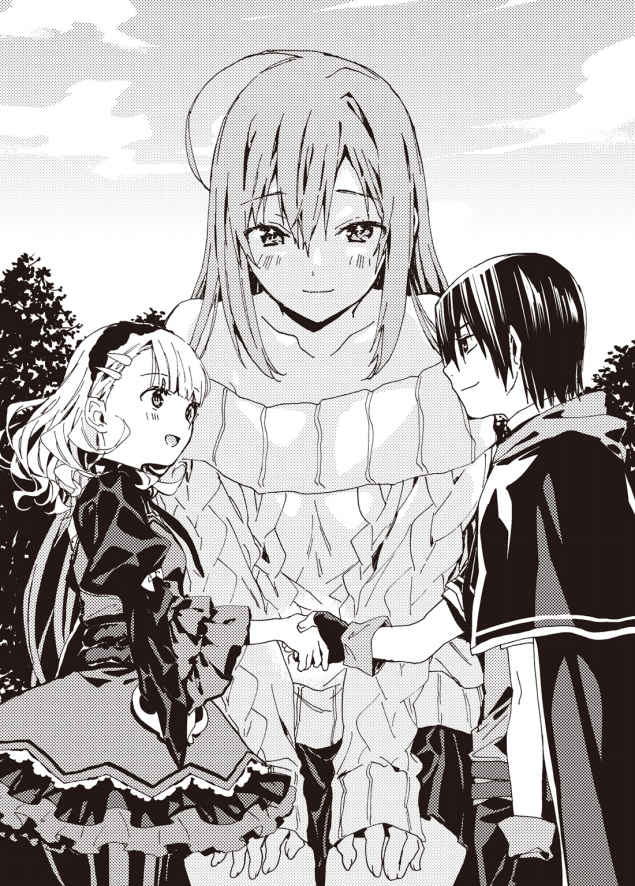
ジュナはうっすらと頬を朱 に染め、嬉しそうにはにかんだ。
それから真剣な目つきになり、はっきりとした口調で言う。
「迷 惑 でなければ、わたしも翔真さんのお嫁さんにしてほしいわ」
「どうしてだ？」
「翔真さんがそばにいてくれると、すっごく心強いもの。翔真さんみたいに頼もしい男のひとはほかにいないし、それにとっても優しいから......わたし、翔真さんのことが好きになっちゃったの」
身体の大きなジュナの体内から、どくんどくんと心臓の鼓 動 が聞こえてくる。
臆 病 なジュナが恥ずかしいのを我 慢 して、真剣に告白してくれたのだ。
翔真はそのことが、素 直 に嬉しかった。
「いいぜ。ジュナも俺の嫁だ」
返事をすると、ジュナはぱあっと顔を明るくさせた。
「せ、正妻はわしなのじゃからなっ？ せめてっ！ せめてそれだけは心に留 めておいてほしいのじゃ！」
また一歩夢に向かって前進したというのに、アイリスは素直に喜べないようだった。
クヌル平野に悠 然 と佇 む古びた城にて――。
翔 真 は嫁同士の顔合わせの場として、中庭でバーベキューパーティを催 していた。
仕事を休んで駆 けつけてくれたカンナが肉や野菜を焼き、ルメリアとシャロンがそれを手伝っている。そのとなりではミストが熱々の肉を頬 張 り......スノウに水を渡されていた。
ごくごくと水を飲んでいたミストは翔真に見られていることに気づき、噎 せ返る。
「けほっ、けほっ。......こ、これは恥ずかしいところを見られてしまったな」
「よくあることさ。それに熱々の肉に慌てるミストも可愛 いぜ」
「う、うむ......。好意的に受け取ってもらえて、すごく嬉しいのだ......」
じんわりと頬を赤らめるミスト。そのうしろでシャーロットがそわそわしていることに気づき、翔真はミストにたずねた。
「肉の味はどうだ？」
「カンナ殿 の焼き方が絶 妙 なのかもしれぬが......この肉は、いままで食べたどの肉よりも美味なのだ。あるいは、この環境がそう感じさせるのかもしれぬな。......す、好きな男と食べるご飯は、その......とても美味に感じるものなのだ」
最後のほうは声が小さすぎてよく聞き取れなかったが、とにかく肉を褒 めていることはわかった。
翔真は聞き耳を立てていたシャーロットに耳打ちする。
「ミストは死霊門 の肉を気に入ったとさ」
「そ、そうなんだ......」
シャーロットは嬉しそうに口元をもにょもにょさせる。
「なにを話しているのだ？」
「実はいまミストが食った肉は、死霊門で売られてるものなんだ。シャーロットがこの日のために持ってきてくれたんだぜ」
「おおっ、そうだったのだな！ 感謝するのだ、シャーロット殿！」
ミストに褒められ、シャーロットはますます嬉しそうにする。
「たくさん持ってきたから、いっぱい食べていいんだからね」
「そうするの！ だってこのお肉、すっごくすっごく美味 しいのっ！」
聞こえていたのか、スノウが元気いっぱいに返事をする。
「美味しいのはわかりますけど、食べすぎはいけませんよ？ 胃もたれしちゃいますからね」
カンナの手伝いをしつつ、シャロンが注意する。
「胃もたれしないように食べるの！」
「食べ方の問題ではないんですけど......」
「だったら、食後にこれを食べるといいわ」
シャーロットは一口サイズにカットされた果物を具現化させた。皿に並べられた果実に鼻を近づけ、スノウがシャーロットを見上げる。
「すっごく甘 い匂 いがするの！ シャーロットお姉ちゃんみたいな良い匂いなの！」
「おおっ、本当に美味 しそうな匂いがするのだ！ いただいていいだろうか？」
「もちろんよ。じゃんじゃん食べてちょうだいっ！」
「では遠 慮 なく。......うむっ。匂いに負けず劣 らずの甘 味 が口いっぱいに広がるのだ！」
「おいひいの！ おいひいの！」
ミストとスノウの幸せそうな顔を見て、シャーロットは瞳に涙を浮 かべていた。本当に褒められたことが嬉しいのだろう。
この調子でいけば、じきにシャーロットは劣 等 感 を克服するはずだ。
「お前は食わなくていいのか？」
シャーロットの相手はミストたちに任せることにし、翔真は隅 っこに座るジュナに話しかけた。
「わたしはいいの。ここでみんなを見ているのが楽しいもの。ここにいると、悩 みなんか吹き飛んじゃうわ」
「そっか。まあ、楽しんでるならそれでいいんだが――悩みが吹き飛ぶってことは、まだなにか悩んでることがあるのか？」
「......相談してもいいの？」
「もちろんだ。嫁の悩みを聞いてやるのも夫の務めだしな。で、悩みってのは？」
「スクレの樹海に移住したがるひとが多すぎて困ってるの。特にムーミャのみんなは翔真さんのこと気に入っちゃってて......このままだと首都がもぬけの殻 になっちゃうわ」
「いまのところ、ジュナはどうするつもりなんだ？」
「そこまで急ぐほどのことじゃないから、ゆっくり考えてみるわ」
そう言って、ジュナはにっこり笑った。
「話を聞いてくれてありがと。翔真くんに話したら、なんだかすっきりしちゃったわ」
相談に乗ってほしいというより、話を聞いてほしかっただけのようだ。
「役に立てたようでなによりだぜ。ま、困ったことがあったらいつでも相談しろよな。俺だけじゃなく、ここにいる奴 らはみんなお前の味方なんだからさ」
「うんっ。翔真くんのおかげで、たくさんの素 敵 なものが手に入ったわ。ほんとうに感謝してるわ」
「べつに感謝されることじゃねえさ。俺だって得るものはあったしな」
一週間前に行われた翔真とシャーロットチームの神託遊戯 ――。それに勝利したことで、翔真は三枚のＳＳＳランク魔札 を手に入れたのだ。
――大勢の声を聞き取る魔札〈訴えを聞き逃さぬもの 〉。
――声が通りやすくなる魔札〈神秘的な語りかけ 〉。
――置き忘れを防止する魔札〈呼び止める財産 〉。
以上の魔札は、世界に一枚しかない貴重な代 物 だ。コンプリートを目指す身としては、どれも垂 涎 ものの魔札である。
「ＳＳＳランク魔札を集めてるってことは、翔真さんは次のクエストに参加するの？」
「もちろんだ。バーベキューが終わったら身体を休めて、明日の昼には出発するぜ」
クエストは三日後に迫っている。
移動は一 瞬 で済むとはいえ、あまりのんびりはできないのだ。
「あ、あなたが出るなら、わたしも参加してみようかな」
「ジュナが？」
臆病なジュナがクエストに参加するなんて、いったいどういう風の吹きまわしだろうか。
「翔真さんとの神託遊戯で、自分の弱さを思い知ったの」
「なるほどな。クエストで腕 前 を磨 くことにしたってわけか」
「うん」
クエストの会場はバトルフィールドだが、通常の神託遊戯とは異なり、敗者へのペナルティは存在しない。負けて失うのは参加料の一金貨 だけだ。
「良い心がけだな。だったら、ジュナが暮らせそうな宿屋を見つけておかねえとな」
「い、一 緒 に泊まってくれるのっ？ 翔真さんが一緒なら心強いわっ！」
そんなつもりで言ったわけではなかったが、ジュナは嬉しそうな顔をしている。勇気を出 して参加を決めつつも、ひとりで過ごすのは心細いのだろう。
「俺たちは夫 婦 だからな。夫婦が同じ部屋で過ごすのはあたりまえだろ？」
一緒の部屋に泊まる方向で話を進めると、ジュナはますます嬉しそうな顔をした。
「クエストに参加したら翔真お兄ちゃんとお泊まりできるのっ？」
ジュナの声が聞こえたのか、スノウが興味を示してきた。
「お前も来るか？」
「行きたいのっ！ ......行ってもいいの？」
シャロンにたずねると、彼女は「しかたないですね」と肩 をすくめた。
「翔真さんがいないあいだ、ずっと仕事を頑 張 ってましたし......息抜きにはちょうどいいでしょう。それに翔真さんが一緒なら、安心して任せられますからね」
「シャロンはついて来ないのか？」
「私ですか？ 行っても邪 魔 にならないでしょうか......？」
「邪魔なわけないだろ」
シャロンはスノウの世話役なのだ。スノウの身のまわりの世話はシャロンに任せるのが一番である。
「で、でしたら私もついていきたいです」
「それ、私も加わりたいのだ」
と、今度はミストが参加を表明する。
「そういやミストはクエストで優勝したことがあるんだったな」
「うむ。翔真殿には不要かもしれぬが、いろいろとアドバイスができるのだ」
「そりゃ心強いな。いいぜ、ミストも来いよ」
「うむっ。私が優勝したら、魔札は翔真殿に譲 るとしよう。翔真殿には普 段 世話になっているのでな。で、でも、そのときはなにかご褒 美 が欲 しいのだ」
「いいぜ。そのときはなんでも好きなものをやるよ」
「それほんと!? 」
と、〈うさぎ亭 〉で提供したいと話を持ちかけられたのだろう。カンナと肉の仕入れについて話していたシャーロットが駆 け寄 ってくる。
「だったらあたしも出るわ！」
「構 わねえが......なにか欲しいものでもあるのか？」
「う、うん。あたし......あんたの赤ちゃんが欲しいわ」
シャーロットが恥ずかしそうにぼそぼそ言うと、アイリスが目を剥 いた。
「そ、それは――それだけはだめなのじゃ！」
アイリスの計画では『わしが最初に子を産む。ほかの嫁は「パパを盗 らないで！」との叫びを聞き、罪悪感に苛 まれておとなしく身を引く』という筋書きになっている――との話を、以前聞かされたことがある。
「そう言ってやるな。それにさ」と、翔真はアイリスに耳打ちする。「俺たちのなかから優勝者が出たほうが、お前も安心できるだろ？」
今回クエストの景品となるＳＳＳランク魔札――〈神がかった交渉術 〉。それが悪 しき者の手に渡れば、アストラルの秩 序 は崩 壊 する。善人の手に渡ったとしても、その効果を目にした瞬 間 に豹 変 するかもしれないのだ。
だが、翔真はここにいる面々を信じている。嫁たちの手に渡れば、アストラルの秩序が乱れることはないと信じているのだ。
もちろん、翔真は嫁に負けるつもりなどないが。
「た、たしかにそなたの言う通りじゃが、これではべつの意味で安心できぬのじゃ！ せ、せめて部屋は別々でもいいじゃろ！」
そんなアイリスの訴 えが聞き届けられることはなく、『騎士門 』『獣牙門 』『死霊門』『巨人門 』を治める全権代理者たちのクエスト参加が決定したのであった。
......このときすでに『森棲門 』『飛翼門 』『海妖門 』『聖神門 』の全権代理者がクエスト開 催 の地――精 霊 の管 轄 区に到 着 済みであることを、翔真はまだ知らない。
一巻からお付き合いくださっている皆様はおひさしぶりです＆いつも本当にありがとうございます。
本作と同日発売の新シリーズとまとめ買いしてくださった方ははじめまして＆まことにありがとうございます。
猫又ぬこです。
無事に『アイテムチートな奴隷ハーレム建国記３』をお届けでき、ほっとしております。少しでも楽しんでいただけたなら幸いです。
さて、あとがきから読む方もいらっしゃると思いますので、ネタバレにならないように本作の内容を説明しますと、翔真くんがふたりの美女に同盟を迫られる物語となっております。
一方はとても背が高く、もう一方はとても良い匂いがする女の子です。対立関係にあるふたりは自分を選んでもらうため、翔真くんに様々なご奉仕をします。
いったいどんなご奉仕なのか。
その内容は、ぜひ本編をご覧いただければと！
それでは最後になりましたが、謝辞のほうへ移らせていただきたいと思います。
担当さんをはじめとするＨＪ文庫編集部の皆様。お世話になってばかりですが、面白い物語を生み出せるよう頑張りますので、今後ともよろしくお願いいたします！
二巻に引き続き素敵なイラストを描いてくださった奈津ナツナ先生。素晴らしい表紙と可愛らしいキャラクターを描いてくださり、まことにありがとうございます！
飲みに付き合ってくれるＴくん、ポケストップ巡りに付き合ってくれるＴくん、映画に誘ってくれるＴさん、おかげさまでいい気分転換になっています！
最近はあまり出没できていませんが、ツイッターで絡んでくれるフォロワーのみんなも本当にありがとう！
そしてなにより本作をご購入くださった読者の皆様に最上級の感謝を。皆様に少しでもお楽しみいただけたなら、これ以上の幸せはありません。
それでは、次巻でお会いできることを祈りつつ。
二〇一六年そこそこ寒い日 猫又ぬこ
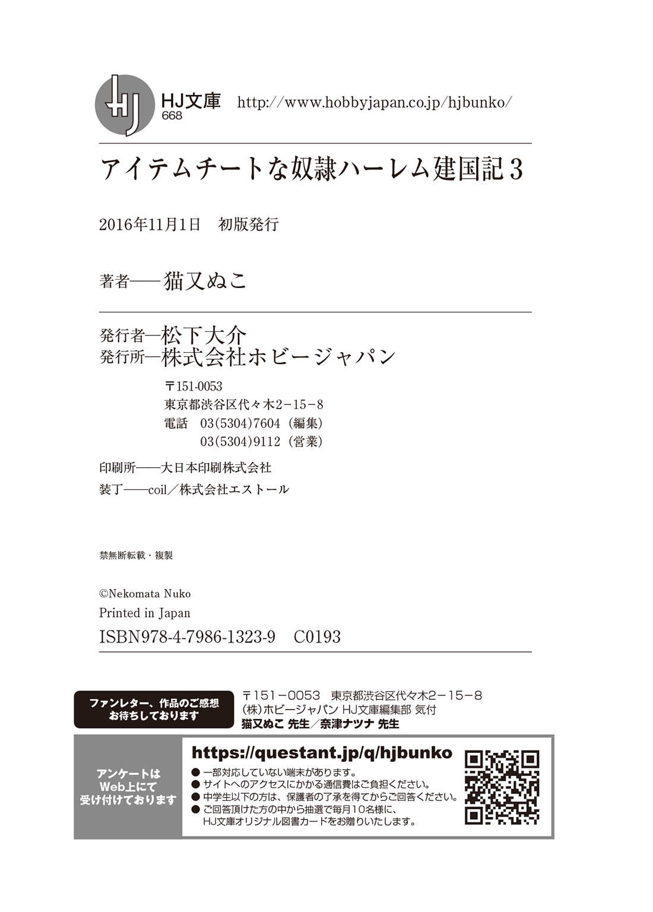